2020
The majority of integral membrane proteins in an eukaryotic cell are made of one or more \(\alpha\)-helices and are first inserted co-translationally via the Sec61 translocon into the endoplasmic reticulum (ER) membrane, assembled there, and then dispatched, via the golgi apparatus and vesicles, to their final destinations. Bacteria use the SecYEG translocon, which is a homolog of Sec61, to insert membrane proteins into their plasma membrane. There are also translocons specific to chroloplasts (TIC-TOC), mitochondria (TIM-TOM) and peroxisomes (PEX), but this essay will focus on the Sec61 translocon.
1 Targeting the Protein to the ER Membrane: SRP and the Sec61 Translocon
The common co-translationally inserted membrane proteins are targeted to the Sec61 translocon on the ER membrane via the cytosolic signal recognition particle (SRP) and the SRP receptor near the translocon.
SRP is a ribonucleoprotein particle made up of 6 proteins bound to a 300-nucleotide RNA acting as a scaffold. The M and Alu domains of SRP are critical for its functions. The M domain contains a cleft whose inner surface is lined by methionine and other hydrophobic side chains. This cleft binds to a hydrophobic segment of the nascent peptide as soon as it emerges from the exit tunnel. Meanwhile, the Alu domain blocks the elongation factor 2 (eEF2) binding site on the ribosome, pausing translation.
Usually it is the first hydrophobic segment that is recognised by SRP. This segment can either be a pure ER-targeting signal sequence or be the first TM helix itself (see next section). Recognition by SRP not only serves to target the ribosome-nascent protein to the ER but also prevents exposure of the hydrophobic segment to the aqueous environment.
SRP and SRP receptor each has a GTP binding site. When their GTP-bound forms associate with each other, they form two GTPase active sites. The GTPase activity is inhibited by signal peptide binding. Once the nascent chain has left SRP and enters the translocon, the two GTP molecules are hydrolysed, causing dissociation of SRP and its receptor. GTP replaces GDP on both proteins, and they are ready to initiate another round of ER targeting.
The Sec61 translocon is made up of 3 subunits: Sec61\(\alpha\), an integral membrane protein composed of two 5-helix bundles that constitutes the central channel and two smaller proteins, Sec61\(\beta\) and Sec61\(\gamma\). The central channel through Sec61\(\alpha\) is sealed by a plug made of a helical peptide that only opens during traslocation. The channel can also open laterally by hinging apart the two 5-helix bundles to expose a hydrophobic binding pocket for signal sequences and/or TM helices of the nascent peptide. The verticle opening allows elongation of the nascent peptide chain through the central pore, and the lateral opening allows attachment of signal sequences and exit of TM helices into the membrane (Figure 1.1).
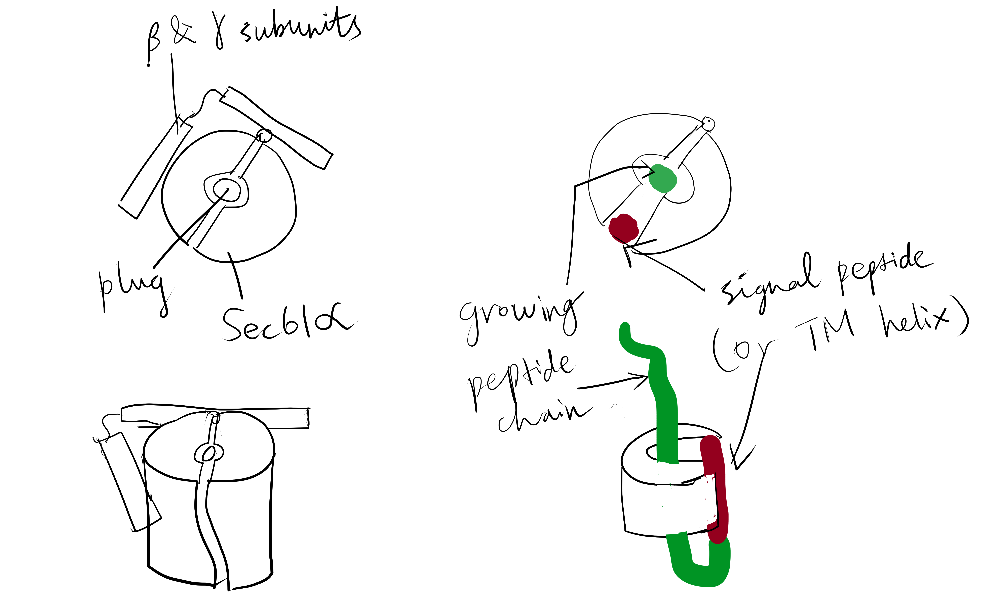
Figure 1.1: The structure and mode of action of the Sec61 translocon. Left: the closed conformation. Right: the open conformation.
2 Single-Pass Proteins
A single-pass membrane protein use a single 20-25 residue long \(\alpha\)-helix made mainly of hydrophobic amino acids to traverse the membrane. The \(\alpha\)-helical structure satisfies hydrogen bonding between main chain carbonyl and amino groups and exposes hydrophobic side chains, which form favourable hydrophobic interactions with the aliphatic core of the membrane bilayer. Co-translational insertion of this helix is a natural strategy to minimise unfavourable interation between the hydrophobic helix and the aqueous cytosolic environment and between the hydrophilic regions of the peptide surrounding the helix and the hydrophobic core of the bilayer.
Single-pass proteins are classified into three types according to the mechanism by which they are inserted. All of them are described in the following sections.
2.1 Type I Proteins
Type I membrane proteins, like soluble proteins to be translocated into the ER lumen, contain an N-terminal ER-targeting signal sequence to be cleaved. The signal sequence is recognised by SRP, causing the ribosome-nascent peptide complex to be targeted to the Sec61 translocon. Sec61\(\alpha\) opens the lateral gate, and the signal peptide fits into the exposed hydrophobic bindng pocket. The sequence following the signal peptide displaces the plug and inserts into the central channel, resulting in the conformation shown in Figure 2.1. Signal peptidase cleaves off the signal peptide once it recognises a specific sequence on the C-terminal end of the signal peptide. After cleavage, translation continues and the newly synthesised sequence is threaded through the channel and enters the ER lumen, until another hydrophobic segment is encountered. This segment is the TM helix of the nascent protein, and it acts as a stop-transfer signal (or “stop-transfer anchor sequence”) by triggering the lateral opening of Sec61\(\alpha\) and thus allowing this helix to move into the membrane. The C-terminus continues to be synthesised and loops out on the cytosolic side of the membrane. Eventually, the hydrophic N- and C- termini are on the luminal and the cytosolic face, respectively.
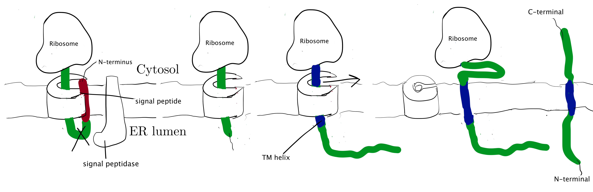
Figure 2.1: Insertion of type I membrane proteins.
2.2 Type II and III Proteins
Type II and III proteins do not contain a cleavable signal sequence, and they have opposite orientations: the N-terminus is on the cytosolic and the luminal face in type II and type III proteins, respectively.
Type II and III proteins use the sequence of their TM helix as an ER-targeting signal (“start-transfer singal”, or “signal anchor sequence”), and the targeting is also mediated by SRP and SRP receptor. The distribution of positively charged residues around the helix dictates its orientation: the positively charged residues tend to remain on the cytosolic side of the membrane, thus in type II proteins where the N-terminal side has more positively charged residues, the helix adopts the orientation with the N-terminus facing the cytosolic side; and in type III proteins where the C-terminal side has more positively charged residues the opposite orientation is adopted (
Figure 2.2 ).
![Insertion of type II and III membrane proteins. In type II proteins, the orientation of the signal anchor sequence in the hydrophibic binding pocket of the laterally opened Sec61\(\alpha\) results in the opening of the pore in the vertical direction (in the same way as type I proteins, but the signal peptide is not cleaved off), allowing the remaining C-terminal portion of the polypeptide to thread through the pore and enter the ER lumen. In type III proteins, the orientation of the signal anchor sequence causes the channel to close, and the C-terminal portion is synthesised in the cytosol.](../img/mem-insert-type-iii-iii.png)
Figure 2.2: Insertion of type II and III membrane proteins. In type II proteins, the orientation of the signal anchor sequence in the hydrophibic binding pocket of the laterally opened Sec61\(\alpha\) results in the opening of the pore in the vertical direction (in the same way as type I proteins, but the signal peptide is not cleaved off), allowing the remaining C-terminal portion of the polypeptide to thread through the pore and enter the ER lumen. In type III proteins, the orientation of the signal anchor sequence causes the channel to close, and the C-terminal portion is synthesised in the cytosol.
3 Multi-Pass Proteins
Multi-pass membrane proteins (a.k.a. type IV proteins) contain more than one TM \(\alpha\) helices and traverse the membrane multiple times. Since the adjacent helices are in opposite orientations, insertion of multipass membrane proteins can be viewed as an alternation of insertion of a type I helix and insertion of a type II helix, which is dictated by the TM helix sequences that alternatingly act as start-transfer signals (signal anchor sequences) and stop-transfer signals (stop-transfer anchor sequences).
In multipass proteins with N-terminus in the cytosol (type IV-A), the TM helix sequence that first emerges from the ribosome (the one closest to the N-terminus) functions in the same way as the start transfer sequence (signal-anchor sequence) of the type II protein, which interacts with SRP to target the protein to the translocon, opens the translocon channel, and allow growing polypeptide chain to pass through the channel. Unlike type II proteins, as the chain grows, the translocon will encounter another hydrophobic TM helix sequence, which then functions as the stop-transfer signal (stop-transfer anchor sequence) in the same way as in type I proteins: the channel is closed, and this helix is moved via the lateral gate to the bilayer, and the nascent chain continues to grow into the cytosol. If a third TM helix sequence is encountered, it will function as another type II-like start-transfer signal, but this time the insertion does not depend on SRP and SRP receptor. This cycle continues until translation completes.
The insertion of multipass proteins with N-terminus in the ER lumen (type IV-B) occurs in a similar manner. The only difference is the first TM helix sequence, which now functions in the same way as the start-transfer sequence of the type III protein, resulting in a closed translocon and the growing peptide to be synthesised in the cytosol. Then, the second, third, fourth TM helix sequences functions in the same way as the first, second, and third TM helix sequences in a type IV-A protein and so on.
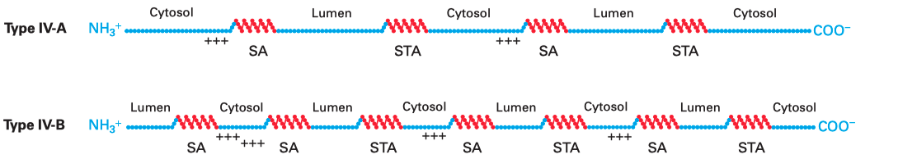
Figure 3.1: Multipass membrane proteins have multiple TM helices which alternatingly function as start-transfer signals (signal-anchor sequences, SA) and stop-transfer signals (stop-transfer anchor sequences, STA). The distribution of charge usually follows the same rule as in type II and III proteins, so that in the final conformation, the cytosolic side has more positively charged residues overall.
4 Insertases
Some membrane proteins are inserted into the lipid bilayer via Sec-independent mechanisms, which are mediated by factors generally termed ‘insertases’. The bacterial (YidC), mitochondrial (Oxa1), and chrloroplast (Alb3) insertases are evolutionarily related, whereas the ER membrane contains 3 seemingly unrelated insertases: Get1/2 complex, the ER membrane-protein complex (EMC), and TMCO1.
4.1 Insertion of Tail-anchored Proteins by the Get system
Tail-anchored proteins also use an \(\alpha\)-helix to traverse the membrane, but this helix is located near the C-terminus. Because there are only few, if any, residues succeeding the C-terminal helix, translation terminates while the helix have not yet emerged from the exit tunnel, so recognition by SRP is not possible, and its insertion into ER membrane depends on a post-translational pathway involving Get1, Get2, and Get3 proteins.
In this pathway, the protein is completely synthesised and released into the cytosol. ATP-bound Get3 binds to the hydrophobic C-terminal tail of the protein (facilitated by some other proteins), and then docks onto the dimeric Get1/Get2 receptor on the ER membrane. Accompanying the hydrolysis of ATP by Get3, the Get1/Get2 complex facilitates the insertion of the tail into the ER membrane. Finally, ATP displaces ADP and Get3 is released back to the cytosol.
4.2 The Roles of YidC
YidC contains 5 TM helices arranged to form a partially hydrophilic groove that is open towards both the lipid bilayer and the cytosol (Figure 4.1). Cross-linking experiments suggest that this groove operates as a binding site for TM helices (of the protein to be inserted). YidC alone can mediate insertion of a small subset of small (single- or double-pass) proteins in either co-translationally or post-translationally, and it is also suggested that YidC may act as a chaperone in conjunction with the Sec translocon. Specifically, it may shield the hydrophilic surface of TM helice that line polar cavities/channels in the final structure.
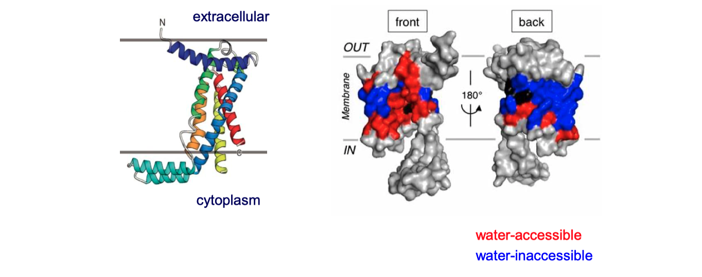
Figure 4.1: The structure of Bacillus halodurans Yidc.
5 \(\beta\)-barrel Proteins
In Gram-negative bacteria, intergral OM (outer membrane) \(\beta\)-barrel proteins (OMPs) are translocated in an unfolded form across the IM (inner membrane), ferried to the OM via periplasmic chaperones, and integrated into the OM by the \(\beta\)-barrel assembly machine (Bam) multiprotein complex.
In mitochondria, the precursors of nucleus-encoded \(\beta\)-barrel proteins are transferred from the TOM complex, with the help of chaperones, to the SAM (sorting and assembly machinery) complex. The SAM complex, being homologous to the Bam complex, mediates the assembly and insertion of \(\beta\)-barrel proteins in a similar manner (Figure 5.1).
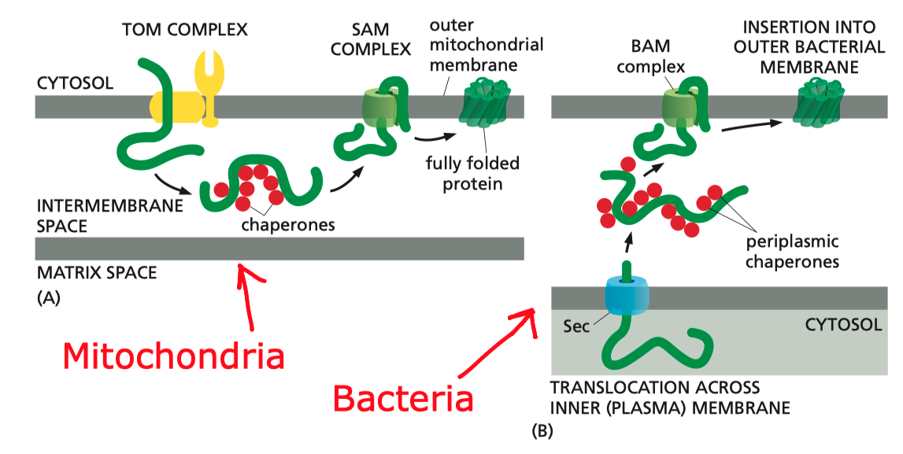
Figure 5.1: Insertion of \(\beta\)-barrel proteins into bacterial or mitochondrial outer membrane.
The exact mechanism of assembly and insertion is not fully understood, but a recent proposed mechanism is shown in Figure 5.2 (Ricci and Silhavy 2019).
![Proposed Bam-assisted assembly and insertion of \(\beta\)-barrel proteins. (a) Unfolded precursor protein (red) stablised by chaperons (green) are transferred to the Bam complex (blue). (b) The five periplasmic POTRA domains of BamA is thought to nucleate the early formation of OMP secondary structure and, together with Bam lipoproteins, form a ring that act as a scaffold for the client protein. The hydrogen bonds between the \(\beta\)-1 and \(\beta\)-16 strands of BamA are metastable, allowing transient lateral opening of the barrel through this seam. (c) The Bam complex prevents aggregation, protects the client protein from proteolysis, and lowers the kinetic barrier to OM integration to accelerate OMP folding along the native pathway, (d) Bam destabilises the membrane locally, which facilitates the insertion of the client protein into the membrane. (e) The folded client protein is released into the membrane, and the Bam complex restores to its idle state.](../img/insert-beta-barrel-mech.png)
Figure 5.2: Proposed Bam-assisted assembly and insertion of \(\beta\)-barrel proteins. (a) Unfolded precursor protein (red) stablised by chaperons (green) are transferred to the Bam complex (blue). (b) The five periplasmic POTRA domains of BamA is thought to nucleate the early formation of OMP secondary structure and, together with Bam lipoproteins, form a ring that act as a scaffold for the client protein. The hydrogen bonds between the \(\beta\)-1 and \(\beta\)-16 strands of BamA are metastable, allowing transient lateral opening of the barrel through this seam. (c) The Bam complex prevents aggregation, protects the client protein from proteolysis, and lowers the kinetic barrier to OM integration to accelerate OMP folding along the native pathway, (d) Bam destabilises the membrane locally, which facilitates the insertion of the client protein into the membrane. (e) The folded client protein is released into the membrane, and the Bam complex restores to its idle state.
References
Alberts, Bruce, Alexander Johnson, Julian Lewis, David Morgan, Martin Raff, Keith Roberts, and Peter Walter. 2014. Molecular Biology of the Cell. Book. 6th ed. Garland Science.
Cymer, Florian, Gunnar von Heijne, and Stephen H. White. 2015. “Mechanisms of Integral Membrane Protein Insertion and Folding.” Journal of Molecular Biology 427 (5): 999–1022. https://doi.org/https://doi.org/10.1016/j.jmb.2014.09.014.
Guna, Alina, and Ramanujan S. Hegde. n.d. “Transmembrane Domain Recognition During Membrane Protein Biogenesis and Quality Control.” Current Biology 28 (8): R498–R511. https://doi.org/10.1016/j.cub.2018.02.004.
Lodish, Harvey F., Arnold Berk, Chris Kaiser, Monty Krieger, Anthony Bretscher, Hidde L. Ploegh, Angelika Amon, and Kelsey C Martin. 2016. Molecular Cell Biology. Book. 8th ed. New York: W.H. Freeman.
Ricci, Dante P., and Thomas J. Silhavy. 2019. “Outer Membrane Protein Insertion by the β-Barrel Assembly Machine.” In Protein Secretion in Bacteria, 91–101. American Society of Microbiology. https://www.asmscience.org/content/book/10.1128/9781683670285.chap8.
1 Introduction
Protein-DNA interactions have profound impact on the expression and regulation of genes. Many DNA-binding proteins, especially transcription factors, are able to recognise and bind to a specific short sequence of DNA, while others, typically those involved in routine tasks such as DNA damage repair (e.g. glycosylase) and DNA packaging (e.g. histone) show less specificity.
2 An Overview of Mechanisms of Protein-DNA Interactions
Binding of proteins to DNA results from the favourable interactions between short DNA sequences and the amino acid side chains of specific DNA-binding motifs in proteins. In many DNA-binding proteins, the affinity and specificity of binding is also enhanced by flexible segments outside the globular core that mediate specific and nonspecific interactions but are sometimes not included in the definition of DNA binding domains. The majority of DNA-binding domains are made of either \(\alpha\)-helices, \(\beta\)-sheets, or both. While they can be classified into different types of motifs, any one type of motif can be used in multiple ways to interact with DNA, depending on the protein and the binding site.
There are multiple mechanisms by which specificity is achieved. First, specific DNA base pairs and amino acid side chains can establish shape complementarity, resulting in hydrogen bonds or favourble polar, electrostatic, or hydrophobic interactions. This is commonly referred to as direct readout or base readout. These interactions usually more frequently in the the more accessible major groove of DNA than in the minor groove. However, there is no simple one-to-one relationship between DNA and protein sequences, which means this mechanism itself is not sufficient to accout for the specificity. The second mechanism, shape readout, involves recognition of a sequence-dependent DNA shape, for example an overall bend, a segment of narrow minor groove, or a kinked base pair step.
Base readout and shape readout can be further devided into different modes. These mechanisms rarely exists in isolation, and protein-DNA recognition uses a continuum of mechanisms that depend on the structural features and flexibility of both DNA and protein.
3 Thermodynamics of Protein-DNA Binding
All protein-DNA complexes can gain favourable \(\Delta H\) from direct protein-DNA recognition interactions and favourable \(\Delta S\) from water release. However, in systems with strongly distorted DNA, the loss of favourable interaction due to the molecular strain of base pair destacking is so large so that the net \(\Delta H\) becomes unfavourable. This is compensated by a more positive \(\Delta S\) as the strained interface experiences less immobilisation (Figure 3.1).
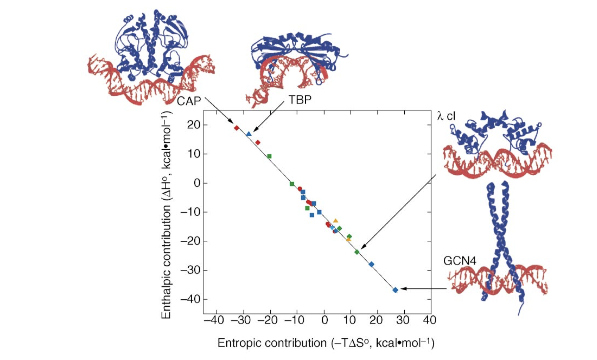
Figure 3.1: The relative enthalphic and entropic contributions to binding free energy (\(\Delta G_\text{free}\)) of a few site-specific DNA-binding proteins with similar \(\Delta G_\text{free}\) (about -11.7 kcal/mol). Taken from Jen-Jacobson, Engler, and Jacobson (2000)
4 Base Readout in the Major Groove
The major groove is an ideal site for forming specific interactions between DNA bases and amino acid side chains because the four possible base pairs have a unique pattern of hydrogen bond donors and acceptors (and the 5-methyl of thymine) in the major groove. Proteins can also form hydrogen bonds with bases in the minor groove, but this contributes much less to the specificity (because the hydrogen bonding pattern cannot distinguish between AT from TA or CG from GC) (4.1). Many DNA-binding motifs, including HTH, zinc finger and Leucine zipper, forms hydrogen bonds in the major groove.
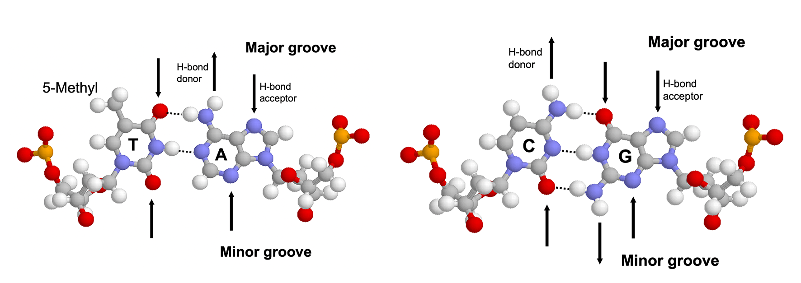
Figure 4.1: Hydrogen bonding patterns in the major and minor groove of AT and CG base pairs.
Specificity not only depends on the number of contacts formed but also on the uniqueness of the hydrogen bonding geometry. Bidentate hydrogen bonds (2 H-bonds with different donors and receptors, which can be formed, for example, between the two NH/NH2 groups and the O and N of guanine) have the highest degree of specificity followed by bifurcated hydrogen bonds (two H-bonds share one donor) and single hydrogen bonds.
Water molecules can be found at some protein-DNA binding sites. While water molecules can allow flexibility and mediate non-specific binding, they are also present in many specific protein-DNA compelxes, such as Trp repressor-DNA, where their positions are highly ordered and serve to bridge the hydrogen bonds.
5 Shape Readout
In physiological conditions, most DNA exists in its B form with well-defined geometries. However, due to the subtle differences between the chemical properties of the four bases, the DNA shape varies in a sequence-dependent manner, and this structural variation is important for protein-DNA recognition.
The B-DNA conformation is largely stabilised by the stacking energy between adjacent base pairs. Thus regions with weak stacking energy, which were found to be AT-AT and AT-TA stacks, have a stronger deformability (i.e. propensity to deviate from the B-DNA conformation). Specifically, DNA sequences of at least four consecutive A-T base pairs without an intervening TpA step are called “A-tracts”, which not only improves deformability but also has implications on electrostatic potentials, which are described in Section 5.1
The following table summarises the relationship between several sequence elements and their impact on the structural property of DNA:
| Sequence Element | Structural Property |
|---|---|
| A-tract | narrow minor groove, bending, rigid for \(\ge\) bp |
| TATA box | high deformability |
| YpR step (especially TpA) | compresses major groove, high deformability, ‘hinge’ step, kinking |
| RpY step | compresses minor groove, low deformability |
5.1 Minor Groove Narrowing
Rohs et al. (2009) reported that the binding of arginine residues to narrow (\(< 5\) angstroms) minor grooves is a common mode of protein-DNA recognition (Figure 5.1). These narrow groove are usually associates with A-tracts, which estabilish a connection between DNA sequence and shape. Arginines often insert into the minor groove as part of short sequence motifs that vary among different proteins, e.g. Arg-Gln-Arg in the Hox protein SCR, Arg-Lys-Lys-Arg in POU homeodomains, thus providing specificity.
The narrowing results in a more negative electrostatic potential in the minor groove, which promotes the binding of positively charged arginine. The preference of arginine over lysine can be explained by the greater energetic cost of removing a charged lysine from water due to lysine’s smaller radius of the charged group (or greater charge density) compared to arginine.
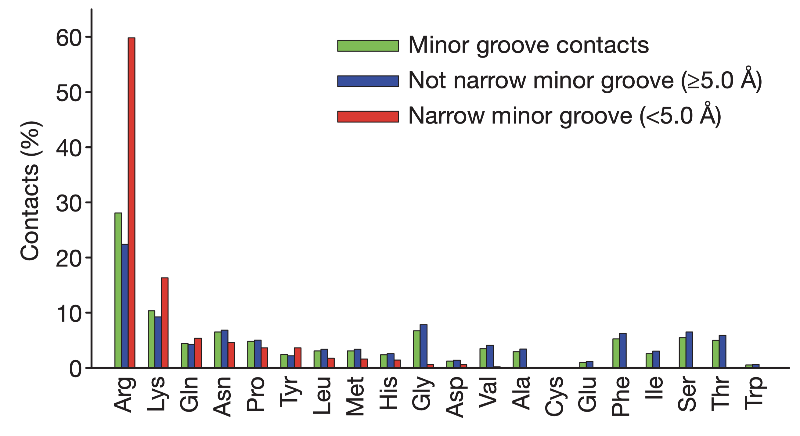
Figure 5.1: Amino acid frequencies in minor grooves. Taken from Rohs et al. (2009)
5.2 Kinks
YpR steps (especially TpA steps) have a strong tendency to form kinks that disrupt the linearity of the double helix. They can contribute to binding specificity by optimising protein-DNA contacts. The binding site of the catabolite activator protein (CAP), for example, shows dramatic kinks at two CpA steps, which along with two additional smaller kinks cause an overall bending of the DNA of about 90 degrees around the protein.
6 The Nucleosome as an Example of Non-Specific Binding
Histones are the ubiquitous nuclear protein that mainly serve to compact DNA. A nucleosome is formed by 147 base pairs of DNA wrapping around a histone octamer, and adjacent nucleosomes are joined by a linker sequence (about 50 bp long in humans). Since nucleosome are so prevalent, the histone-DNA interaction is often considered as non-specific, and its association with DNA is thought to be due to the electrostatic attraction between the abundant lysine and arginine residues on the surface of histoens and the negatively charged phosphate backbone of DNA. However, histones have preferred DNA regions to bind to.
Nucleosomes are often formed in regions enriched with A-tracts for two reasons. First, A-tracts offer high deformability, which is required to bend DNA and wrap it around histone octamers. Second, histones are enriched with arginine residues, which recognise and penetrateinto the narrow minor grooves formed by A-tracts, thus providing important stabilising interaction (Section 5.1).
7 (Question 2)
7.1 (a) bHLH Motif
The basic helix-loop-helix (bHLH) motif consists of two \(\alpha\)-helices separated by a loop. One of the helices (usually the longer one) contain basic residues (arginine and lysine) that bind to the major groove of DNA. The flexible loop and the other helix are involved in dimerisation. Many bHTH proteins occur as heterodimers (e.g. Myc/MAX), and their activity is hightly regulated by the dimerisation of subunits.
7.2 (b) Leucine Zipper
The leucine zipper motif consists of a dimer of \(\alpha\)-helices. The dimerisation is driven by interactions between the hydrophobic side chains that cover their inner surfaces. Specifically, each helix has a periodic repetition of leucine residues at every seventh position. Since every turn in an \(\alpha\)-helix contains 3.6 amino acids—two turns contain 7.2, which is slightly more than 7, the helices coil around one another in a left-handed sense. The N-terminal DNA-binding domains of each helix protrudes into the major groove of DNA, which together recognise a 8-bp long sequence.
7.3 (c) Zinc Finger
The zinc finger contains a short \(\alpha\)-helix, a two-stranded antiparallel \(\beta\)-sheet, and a Zn2+ ion coordinated by cysteine and histine residues. The zinc ion serves to stabilise the overall structure, while the helix make contact with DNA’s major groove. A typical zinc finger protein, e.g. Zif268, contains a chain of 3 zinc-finger modules that coil in a right-handed sense, so as to follow the curve within the major groove. Each finger recognises 3 base pairs, and thus a protein with 3 zinc finger domains recognise a continuous sequence of 9 base pairs.
7.4 (d) TATA box binding protein
TATA box binding proteins (TBP) use a ten-stranded \(\beta\)-sheet to recognise DNA by binding in the minor groove. Insertion of the concave \(\beta\)-sheet into the groove requires substantial DNA distortion. The flexibility intrinsic to TpA steps (Section 5) in the TATA sequence faciliates formation of kinks when TBP binds. In addition, yeast TBP-TATA structure shows that the kinks in the first and last base pair step (TATATAAA) are stabilised through intercalations with phenylalanine residues.
References
Calladine, Chris R., Horace Drew, Ben Luisi, and Andrew Travers. 2004. Understanding Dna-the Molecule and How It Works. 3rd ed. Academic Press. http://gen.lib.rus.ec/book/index.php?md5=c6b8d89cd8868255bc9ebd4cf51e1917.
Jen-Jacobson, Linda, Lisa E. Engler, and Lewis A. Jacobson. 2000. “Structural and Thermodynamic Strategies for Site-Specific Dna Binding Proteins.” Structure 8 (10): 1015–23. https://doi.org/https://doi.org/10.1016/S0969-2126(00)00501-3.
Rohs, Remo, Sean M. West, Alona Sosinsky, Peng Liu, Richard S. Mann, and Barry Honig. 2009. “The Role of Dna Shape in Protein–Dna Recognition.” Nature 461 (7268): 1248–53. https://doi.org/10.1038/nature08473.
- Model 112 was used.
1 The Haldane Relationship
Using the “Parameter Scan” utility in Copasi (Figure 1.1), I collected steady state concentrations of ‘A’ and ‘B’ in \(5^4 = 625\) combinations of \(V_{max(f)}\), \(K_{m(p)}\), \(V_{max(r)}\), and \(K_{m(s)}\), where each parameter vary from \(1\times10^{-2}\) to \(1\times10^{2}\) in a logarithmic scale.
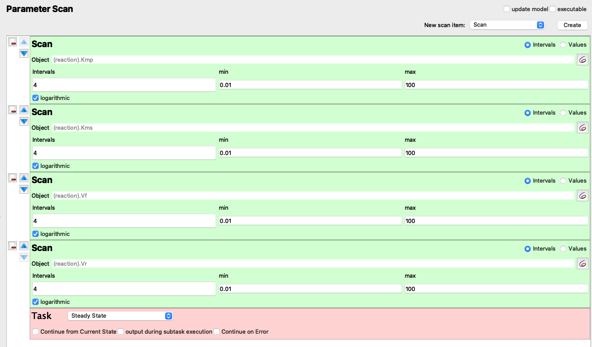
Figure 1.1: “Parameter Scan” setup
Here I read the data, and add two columns, where keq represents the experimental \(K_\text{eq}\):
\(K_\text{eq} = \dfrac{\text{[B]}}{\text{[A]}}\)
and keq_calc represents the \(K_\text{eq}\) calculated from the Haldane relationship:
\(K_\text{eq} = \dfrac{V_{max(f)}\cdot K_{m(p)}}{V_{max(r)}\cdot K_{m(s)}}\)
q1 <- read_tsv('metabolic modelling/q1.txt', col_names = c('vf', 'kmp', 'vr', 'kms', 'A', 'B'))
q1 <- q1 %>% mutate(
keq = B/A,
keq_calc = (vf * kmp) / (vr * kms),
keq_diff = keq - keq_calc
)
q1## # A tibble: 625 x 9
## vf kmp vr kms A B keq keq_calc keq_diff
## <dbl> <dbl> <dbl> <dbl> <dbl> <dbl> <dbl> <dbl> <dbl>
## 1 0.01 0.01 0.01 0.01 1 1 1 1 0.
## 2 0.01 0.01 0.1 0.01 1.82 0.182 0.1 0.1 0.
## 3 0.01 0.01 1 0.01 1.98 0.0198 0.01 0.01 0.
## 4 0.01 0.01 10 0.01 2.00 0.00200 0.001 0.001 0.
## 5 0.01 0.01 100 0.01 2.00 0.000200 0.00010 0.0001 -1.36e-20
## 6 0.1 0.01 0.01 0.01 0.182 1.82 10.0 10 -1.78e-15
## 7 0.1 0.01 0.1 0.01 1 1 1 1 0.
## 8 0.1 0.01 1 0.01 1.82 0.182 0.1 0.1 0.
## 9 0.1 0.01 10 0.01 1.98 0.0198 0.01 0.01 0.
## 10 0.1 0.01 100 0.01 2.00 0.00200 0.001 0.001 0.
## # … with 615 more rowsPlotting keq_calc against keq shows that \(K_\text{eq}\) calculated in these two ways are equal, as the linear regression line has a gradient of 1 and passes through the origin.
q1 %>% ggplot(aes(keq, keq_calc)) +
geom_point() +
geom_smooth()+
scale_x_log10()+
scale_y_log10()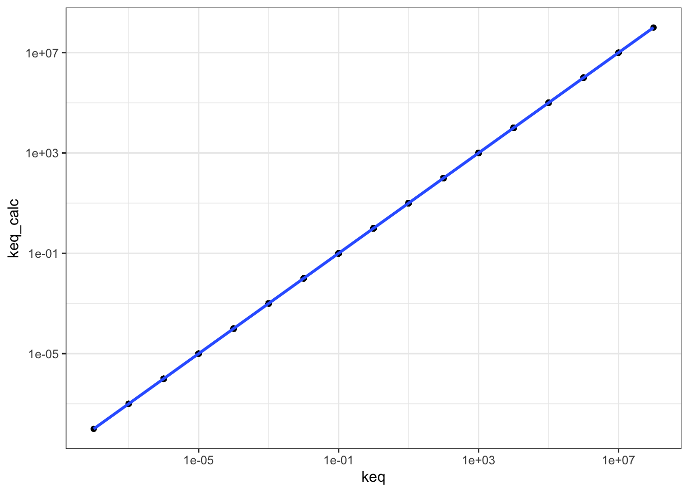
mod <- lm(q1$keq ~ q1$keq_calc)
summary(mod)##
## Call:
## lm(formula = q1$keq ~ q1$keq_calc)
##
## Residuals:
## Min 1Q Median 3Q Max
## -1.148e-08 -4.480e-10 -4.480e-10 -4.190e-10 2.880e-07
##
## Coefficients:
## Estimate Std. Error t value Pr(>|t|)
## (Intercept) 7.078e-10 4.630e-10 1.529e+00 0.127
## q1$keq_calc 1.000e+00 1.135e-16 8.814e+15 <2e-16 ***
## ---
## Signif. codes: 0 '***' 0.001 '**' 0.01 '*' 0.05 '.' 0.1 ' ' 1
##
## Residual standard error: 1.156e-08 on 623 degrees of freedom
## Multiple R-squared: 1, Adjusted R-squared: 1
## F-statistic: 7.769e+31 on 1 and 623 DF, p-value: < 2.2e-16The Haldane relationship shows that \(K_\text{eq}\) is proportional to \(V_{max(f)}\) and \(K_{m(p)}\), and inversely proportional to \(V_{max(r)}\) and \(K_{m(s)}\), and this can be illustrated using a facetted heatmap:
q1 %>% ggplot(aes(x = vf, y = kmp, fill = log10(keq))) +
geom_tile()+
facet_grid((1/vr)~(1/kms), as.table = FALSE, labeller = label_both)+
scale_x_log10(labels = plain, expand = c(0, 0))+
scale_y_log10(labels = plain, expand = c(0, 0))+
scale_fill_gradient2(low = 'blue', mid = 'yellow', high = 'red')+
labs(title = "Variation of Keq with vf, kmp, vr, and kms")+
theme(axis.text.x = element_text(angle = 90))
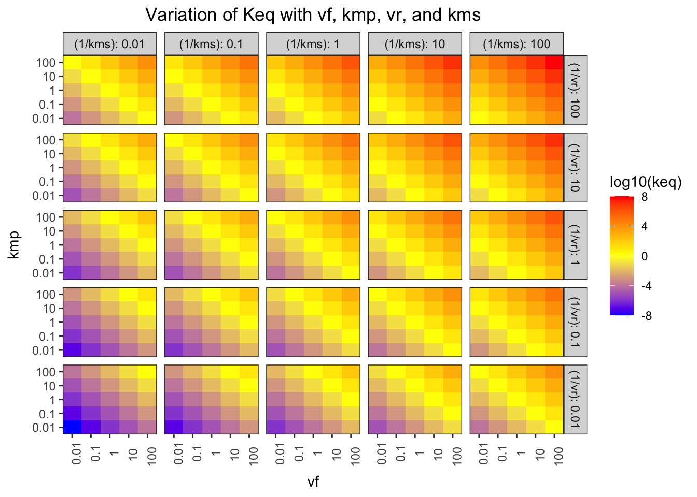
Figure 1.2: Variation of \(K_\text{eq}\) with \(V_{max(f)}\), \(K_{m(p)}\), \(V_{max(r)}\), and \(K_{m(s)}\)
The pattern in each grid shows that \(K_\text{eq}\) is proportional to \(V_{max(f)}\) and \(K_{m(p)}\), and the pattern across the grids shows that it is inversely proportional to \(V_{max(r)}\) and \(K_{m(s)}\).
2 Control Points in A Simple Linear Pathway
I use the “Parameter Scan” function to vary the \(K_\text{eq}\) of reaction 3 (that catalyses the reversible conversion between C and D) in the range \(10^{-6}\) to \(10^6\) in a logarithmic scale (13 samples). The variables being recorded are \(K_\text{eq}\) and \(J\) (flux control coefficient) of reaction 3, and the concentrations of C and D. Then, the reaction quotient, \(Q\) (a.k.a. mass action ratio), of each row is calculated as:
\[Q = \dfrac{\text{[D]}}{\text{[C]}}\]
q2_scan_r3 <- read_tsv('metabolic modelling/Q2.txt')
q2_scan_r3 <- q2_scan_r3 %>% mutate(q = d/c)
q2_scan_r3## # A tibble: 13 x 5
## j keq c d q
## <dbl> <dbl> <dbl> <dbl> <dbl>
## 1 0.0000489 1.00e-6 100. 0.000100 0.00000100
## 2 0.0000489 1.00e-5 100 0.001 0.00001
## 3 0.00470 1.00e-4 99.1 0.00987 0.0000996
## 4 0.0353 1.00e-3 92.2 0.0885 0.000960
## 5 0.119 1.00e-2 69.0 0.556 0.00806
## 6 0.210 1.00e-1 44.5 2.35 0.0528
## 7 0.309 1.00e+0 32.0 6.77 0.212
## 8 0.369 1.00e+1 28.6 10.0 0.350
## 9 0.380 1.00e+2 28.2 10.6 0.378
## 10 0.381 1.00e+3 28.1 10.7 0.381
## 11 0.381 1.00e+4 28.1 10.7 0.381
## 12 0.381 1.00e+5 28.1 10.7 0.381
## 13 0.381 1.00e+6 28.1 10.7 0.381Figure 2.1 shows the variation of the flux control coefficient, \(J\), of reaction 3, with its \(K_\text{eq}\). The plot shows that a high \(K_\text{eq}\), i.e. high irreversibility, is correlated with a high \(J\), and in the intermediate range \(J\) varies linearly with \(\ln(K_\text{eq})\), i.e. varies linearly with \(\Delta G = -RT\ln(K_\text{eq})\)
q2_scan_r3 %>% ggplot(aes(log(keq), j)) +
geom_point()
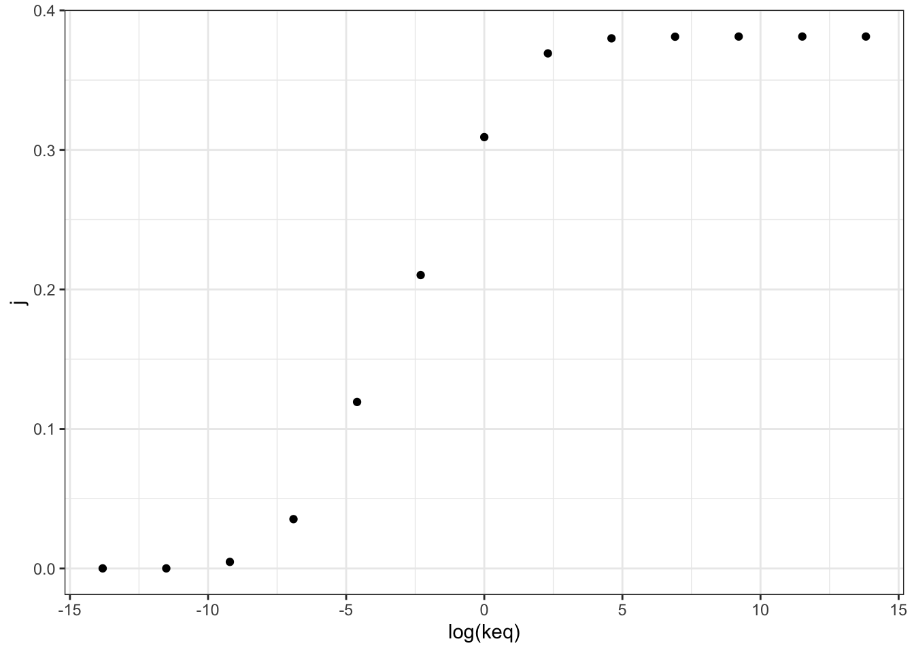
Figure 2.1: Variation of the flux control coefficient, \(J\), of reaction 3, with its \(K_\text{eq}\)
Figure 2.2 shows the variation of the flux control coefficient, \(J\), of reaction 3 with \(Q/K_\text{eq}\), which is a measure of displacement of the reaction from the equilibrium. A \(Q/K_\text{eq}\) close to 1 indicates the reaction is close to equilibrium. The plot shows that when reaction is further displaced from the equilibrium, the its flux control coefficient is higher.
q2_scan_r3 %>% ggplot(aes(q/keq, j)) +
geom_point()+
geom_smooth(method = 'lm', size = 0.5)
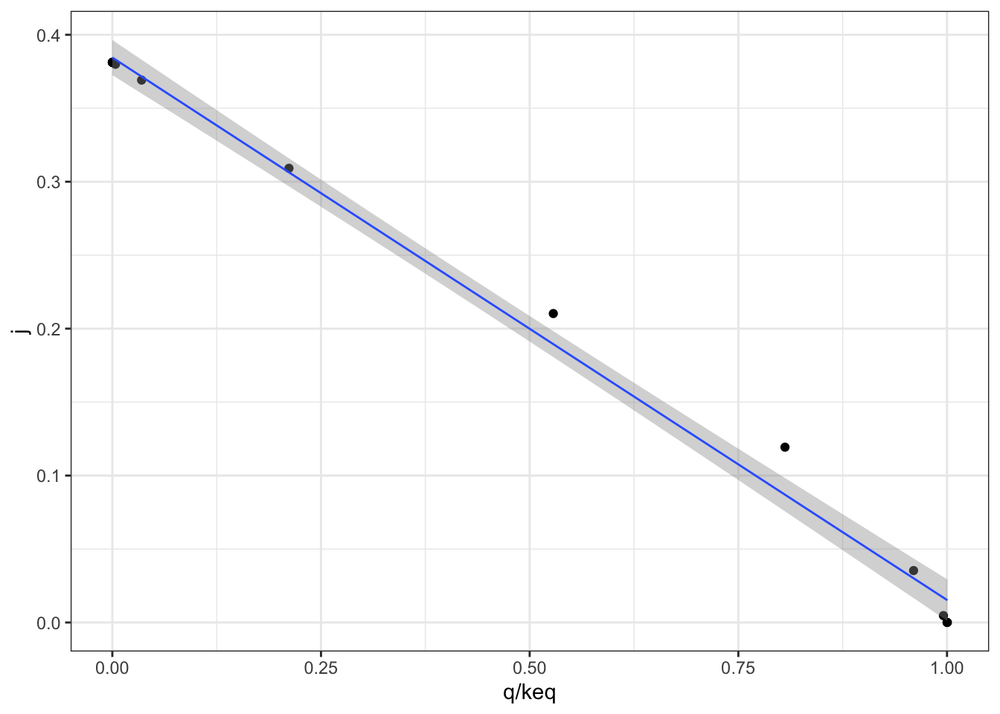
Figure 2.2: Variation of the flux control coefficient, \(J\), of reaction 3, with \(Q/K_\text{eq}\)
A linear regression analysis shows that there is a strong linear correlation between \(J\) and \(Q/K_\text{eq}\), with \(p = 4.02\times10^{-6} < 10^{-5}\)
mod <- with(q2_scan_r3, lm(j ~ q/keq))
summary(mod)##
## Call:
## lm(formula = j ~ q/keq)
##
## Residuals:
## Min 1Q Median 3Q Max
## -0.054438 -0.019991 -0.012931 0.001452 0.108459
##
## Coefficients:
## Estimate Std. Error t value Pr(>|t|)
## (Intercept) 5.448e-02 2.221e-02 2.453 0.0341 *
## q 8.960e-01 9.010e-02 9.945 1.67e-06 ***
## q:keq -4.196e-08 1.569e-07 -0.267 0.7946
## ---
## Signif. codes: 0 '***' 0.001 '**' 0.01 '*' 0.05 '.' 0.1 ' ' 1
##
## Residual standard error: 0.05374 on 10 degrees of freedom
## Multiple R-squared: 0.9167, Adjusted R-squared: 0.9
## F-statistic: 55 on 2 and 10 DF, p-value: 4.02e-06In order to vary \(Q/K_\text{eq}\) without directly varying \(K_\text{eq}\), and to see the effect not only on reaction 3 but also on all other reactions, I vary \(V_f\), not \(K_\text{eq}\), of reaction 3 from \(10^{-6}\) to \(10^6\) with 1000 intervals, and collected the flux control coefficients of all 6 reactions, the \(K_\text{eq}\) of reaction 3, as well as concentrations of all species, which are then used to calculate the mass action ratio of each reaction. Then, the displacement of each reaction is calculated. The resulting dataframe contains three columns: 1) the reaction number; 2) the flux control coefficient and 3) displacement from equilibrium of this reaction
q2_scan_r3_vf <- read_tsv('metabolic modelling/Q2-1.txt')
q2_scan_r3_vf <- q2_scan_r3_vf %>%
mutate(
d1 = (B/A) / 10,
d2 = (C/B) / 1,
d3 = (D/C) / 0.5,
d4 = (E/D) / 5,
d5 = (F/E) / 2,
d6 = (G/F) / 10,
c1 = A + B,
c2 = B + C,
c3 = C + D,
c4 = D + E,
c5 = E + F,
c6 = F + G,
) %>% select(!(1:7))
q2_scan_r3_vf_cleaned <- tibble(
reaction = integer(),
displacement = double(),
j = double()
)
for (i in 1:6) {
q2_scan_r3_vf_cleaned <- add_row(
q2_scan_r3_vf_cleaned,
reaction = i, j = q2_scan_r3_vf[[paste0('j', i)]], displacement = q2_scan_r3_vf[[paste0('d', i)]])
}
q2_scan_r3_vf_cleaned ## # A tibble: 6,006 x 3
## reaction displacement j
## <int> <dbl> <dbl>
## 1 1 1.00 0.0000000343
## 2 1 1.00 0.0000000353
## 3 1 1.00 0.0000000363
## 4 1 1.00 0.0000000373
## 5 1 1.00 0.0000000383
## 6 1 1.00 0.0000000394
## 7 1 1.00 0.0000000405
## 8 1 1.00 0.0000000416
## 9 1 1.00 0.0000000428
## 10 1 1.00 0.0000000440
## # … with 5,996 more rowsThen, for all reactions, \(J\) versus displacement from equilibrium is plotted:
q2_scan_r3_vf_cleaned %>% ggplot(aes(displacement, j)) +
geom_point()+
facet_wrap(~reaction, scales = 'free', labeller = label_both)+
xlab("MAR/Keq")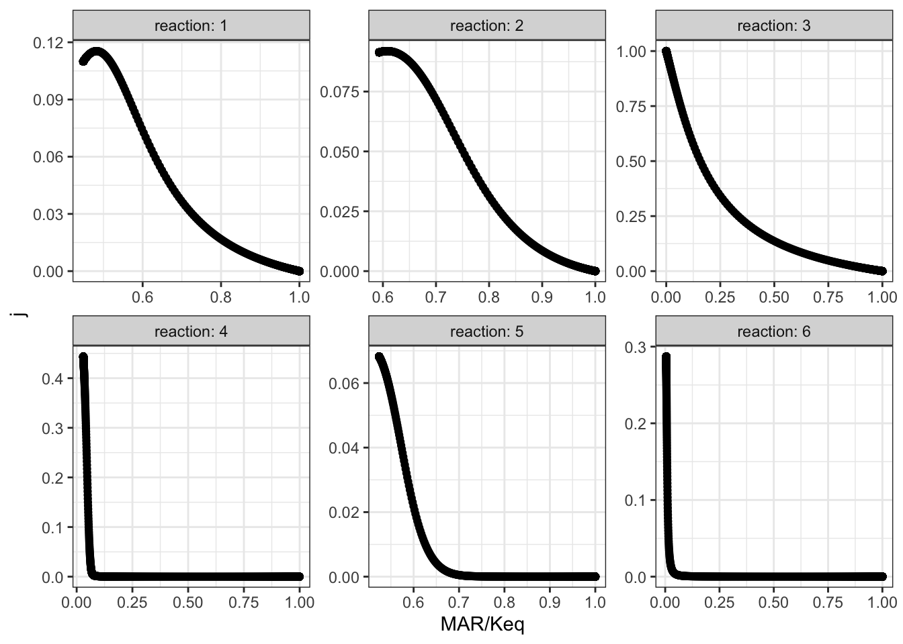
The plots shows that, when disturbing \(V_{max(f)}\) of reaction 3, the disequilibrium ratio of all reactions are also altered. Not only reaction 3 but also all other reactions follow the rule that, the flux control coefficent of a reaction increases with the extent of displacement from the equilibrium. However, it is hard to predict \(J\) given only the value of \(Q/K_\text{eq}\), as different reactions show different patterns of variations, so \(Q/K_\text{eq}\) (displacement from equilibrium) is not a robust indicator of \(J\).
3 Linear Pathway with Negative Feedback
I chose reaction 2 to be the one sensitive to the inhibitor, and varied \(K_i\) from \(10^{-18}\) to \(10^{18}\) with 1000 intervals, and recorded it along with flux control coefficients of all reactions. The results are shown in Figure 3.1.
q3 <- read_tsv('metabolic modelling/Q3.txt')
q3 <- q3 %>% gather(reaction, "j", -ki)
q3 %>% ggplot(aes(ki, j)) +
geom_point()+
facet_wrap(~reaction, labeller = label_both)+
scale_x_log10()
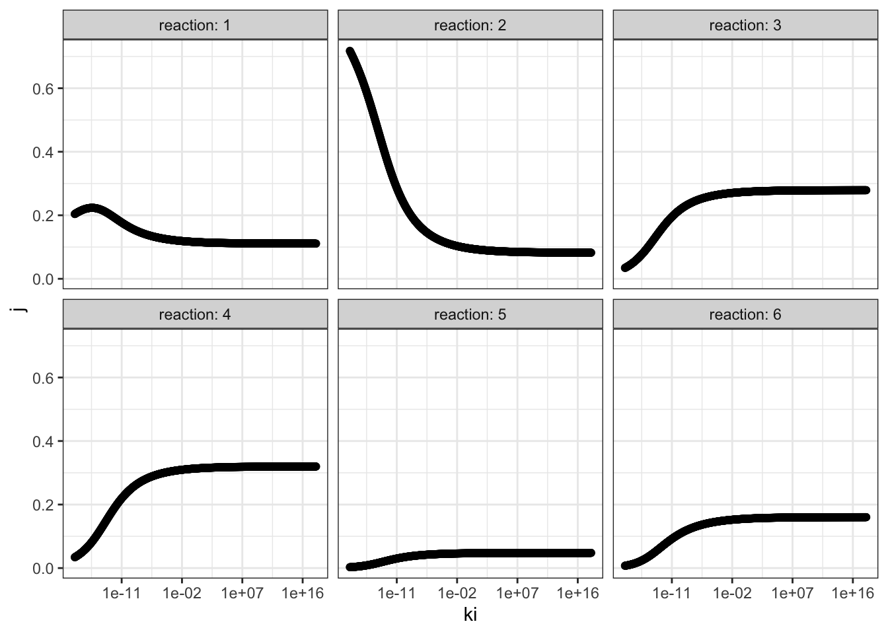
Figure 3.1: Effect of changing \(K_i\) of reaction 2 on the flux control coefficient of all reactions. Lower \(K_i\) means higher binding affinity to the inhibitor.
The plots show that, the flux control coefficient (\(J\)) of reaction 2 increases as the binding affinity (i.e. sensitivity) to the inhibitor of the enzyme involved in this step increases (i.e. as \(K_i\) decreases). \(J\) of the upsteam reaction 1 also inceases slightly. For all downstream reactions, \(J\) decreases.
3.1 Re-analyse the effect of \(K_i\) with constant flux
The flux and values of \(J\) when \(K_\text{i} = 10^{-18}\) and when \(K_\text{i} = 10^18\) are shown below:
ki_low = 1e-18
flux_low = 0.476572
j_low = c(0.203839, 0.717872, 0.0342001, 0.0340061, 0.00278022, 0.007302)
ki_high = 1e18
flux_high = 1.07393
j_high = c(0.110937, 0.0822319, 0.278976, 0.319753, 0.0478304, 0.160271)\(V_f\) of reaction 2 are optimised so that the flux when \(K_\text{i} = 10^{-18}\) is 1.07393 (the same as when \(K_\text{i} = 10^{18}\))
Optimization Result:
Objective Function Value: 1.07393
Function Evaluations: 248
CPU Time [s]: 0.061
Evaluations/Second [1/s]: 4065.57
(R2).Vf: 45.0229
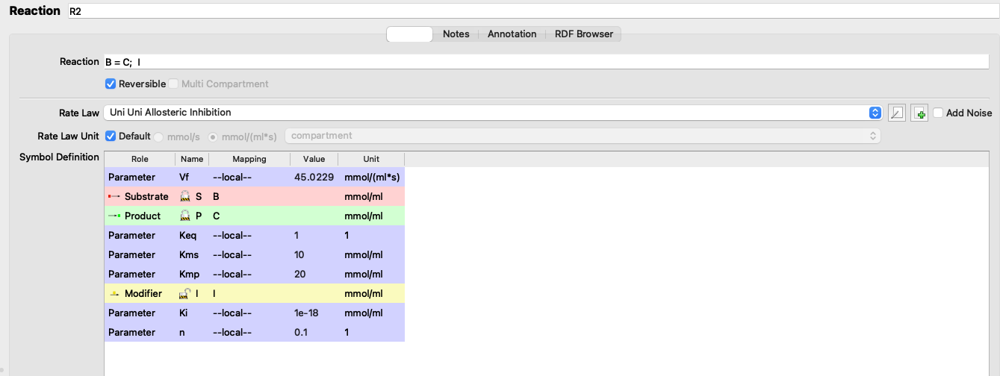
Figure 3.2: Adjusting Vf
I adjusted the \(V_f\) of reaction 2 from 5 to 45.0229 (3.2), verified that the flux is 1.07393 (the same as in the state with negligible inhibition), and the values of \(J\) are:
j_low <- c(0.144048, 0.0858949, 0.266261, 0.30518, 0.0456503, 0.152966)which can be directly compared to the \(J\) values in the uninhibited state:
tibble(
ki =c(rep("low (1e-18)", 6), rep("high (1e18)", 6)),
reaction = rep(as.character(1:6), 2),
j = c(j_low, j_high)
) %>% ggplot(aes(reaction, j, fill = ki)) +
geom_col(position = 'dodge')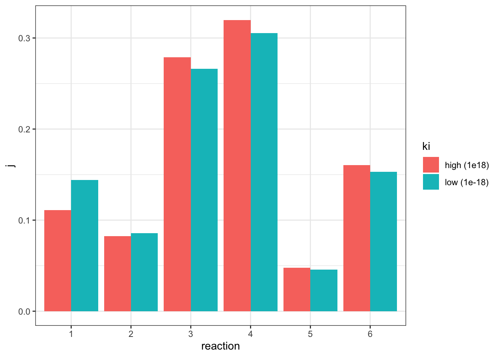
The plot shows that, when the flux is made constant, a lower \(K_i\) (higher affinity of inhibitor binding) increases the flux control coefficent of reaction 2 and the upstream reaction 1, and decreases that of downstream reactions, which is consistent with the previous experiment. However, the amount of change is not as much as previously modelled.
3.1.1 Repeat with Model 212
I repeat the last analysis with model 212, this time choosing reaction 1 as the one to be affected by the inhibitor.
ki_low = 1e-16
j_low = c(0.982287, 0.0109131, 0.00433655, 0.00237021, 6.9396e-05, 2.40539e-05)
flux_low = 0.091902
ki_high = 1e16
flux_high = 0.807846
j_high = c(0.437942, 0.31832, 0.104533, 0.12481, 0.0105218, 0.00387277)Optimization Result:
Objective Function Value: 0.807846
Function Evaluations: 82
CPU Time [s]: 0.018
Evaluations/Second [1/s]: 4555.56
(R1).Vf: 25.7611I adjusted the \(V_f\) of reaction 1 from 5 to 25.7611 (3.2), verified that the flux is 0.807846 (the same as in the state with negligible inhibition), and the values of \(J\) are:
j_low <- c(0.479732, 0.294652, 0.0967611, 0.11553, 0.00973947, 0.00358483)comparing to the \(J\) values in the uninhibited state:
tibble(
ki =c(rep("low (1e-16)", 6), rep("high (1e16)", 6)),
reaction = rep(as.character(1:6), 2),
j = c(j_low, j_high)
) %>% ggplot(aes(reaction, j, fill = ki)) +
geom_col(position = 'dodge')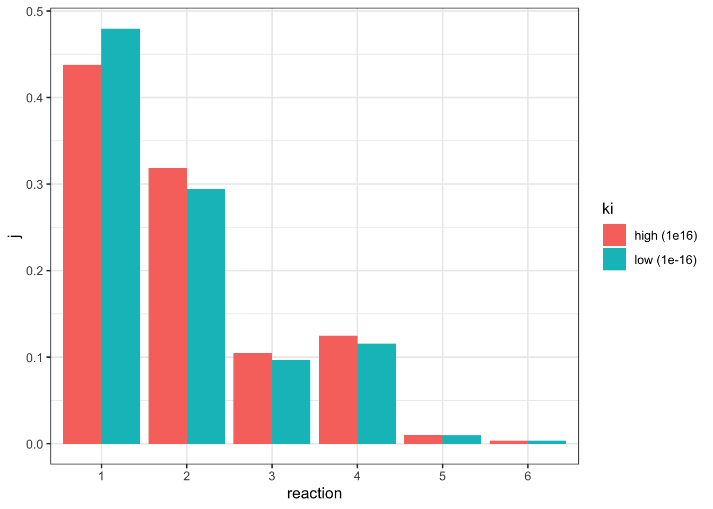
This time only reaction 1 has an increased \(J\), and all other downstream reactions have an lowered \(J\), which is consistent with previous observations.
(a) Assign each lac mutation to one of the strains 1 to 5. Explain your reasoning in each case.
| 1 | 2 | 3 | 4 | 5 | WT | |
|---|---|---|---|---|---|---|
| glycerol | + | − | + | − | − | - |
| glycerol+IPTG | + | − | + | + | − | + |
| glucose+IPTG | − | − | − | + | − | - |
| ×WT hybrid + glycerol | IPTG | IPTG | + | IPTG | IPTG | |
| ×lacY− hybrid | IPTG | × |
- Strain 1: lacI-
- Strain 2: lacZ-
- Strain 3: lacOc
- Strain 4: mutation that causes RNAP to bind more easily
- Strain 5: lacP-
Strains 1 and 3 are both sensitive to catabolite repression (by glucose) but insensitive to induction by IPTG (transcription occurs as long as glucose is not present), which can be either due to lacI- or lacOc. In the diploid with WT, strain 1 becomes sensitive to IPTG, which means strain 1 had a lacI- mutation, and the lacI- of the newly introduced WT allele produces LacI proteins which are effective on both lac operons. Strain 3 has a lacOc mutation, thus this operon is continuously being transcribed regardless of the newly introduced WT allele (LacI is present, but this mutant operon is insensitive to it)
In the last experiment, the introduced plasmid has lacY- mutation and therefore cannot produce \(\beta\)-galactoside permease, this causes strain 5 unable to survive with only lactose. Thus, strain 5 has the lacP- mutation, which originally was able to produce neither permease or galactosidase (because RNAP cannot bind to the promoter to initiate transcription). With plasmid introduced, only galactosidase but not permease is produced, which is not sufficient to catabolise lactose.
Strain 2 contains a lacZ- mutation, which make it unable to produce galactoside but able to produce permease. Thus, \(\beta\)-galactoside catabolism activity is rescued by the introduction of the lacY- pladmid in the last experiment, which allows galactosidase to be produced.
What is a likely explanation for the phenotype displayed by the strain containing the uncharacterized mutation? In which part of the lac region is the uncharacterized mutation likely to be found?
Strain 4 shows insensitivity to catabolite repression (IPTG induces transcription regardless of the presence of glucose). Thus, it may contain a mutation in the promoter region that causes RNA polymerase to bind more easily, without activation by CAP-cAMP.
The mutation in the catabolite repression-insensitive strain used in the practical has been determined to be within the lac operon and is shown below. The sequence alteration involved (substitution of GT in the wild-type sequence with AA) is highlighted by arrows (▼). How could this sequence alteration lead to the observed mutant phenotype?
ApA and ApT steps have smaller base stacking energies than TpT steps, and there are 2 hydrogen bonds between a AT base pair, which is weaker than the 3 hydrogen bonds between a CG base pair. These makes the sequence AAT easier to deform than GTT. Higher deformability makes a the mutant promoter stronger (i.e. higher affinity for RNA polymerase), so RNAP can bind to it regardless of the binding of CAP-cAMP.
1 Enzyme
2 ATP Synthase
3 Fluorescence spectroscopy
4 High-resolution Nuclear Magnetic Resonance Spectroscopy.
5 Electrospray mass spectrometry.
6 Analytical ultracentrifugation: equilibrium sedimentation.
\[ M = \dfrac{2RT}{(1-v\rho)\omega^2}\dfrac{d(\ln(c))}{dr^2} \]
\[ M = \dfrac{2\times 8.314\times298.15}{(1-0.74)\times27000^2}\dfrac{d(\ln(c))}{dr^2} = 2.6156\times10^{-5}\dfrac{d(\ln(c))}{dr^2} \]
r = c(6.918, 6.923, 6.924, 6.929, 6.932, 6.935, 6.942, 6.943, 6.945,
6.952, 6.955, 6.962, 6.964, 6.968, 6.973, 6.977, 6.978, 6.983,
6.985, 6.987, 6.992, 6.994, 6.998, 7.002, 7.004, 7.006, 7.009,
7.013, 7.016, 7.019, 7.022, 7.024, 7.026, 7.031, 7.033, 7.038,
7.042, 7.045, 7.047, 7.05, 7.053, 7.059, 7.061, 7.062, 7.065,
7.069, 7.07, 7.075, 7.077, 7.081, 7.084, 7.087, 7.09, 7.095,
7.098, 7.102, 7.106, 7.109, 7.11, 7.114, 7.116, 7.121, 7.123,
7.131, 7.137, 7.139, 7.141, 7.145, 7.146, 7.148, 7.15, 7.156,
7.158, 7.163, 7.166, 7.17)
od <- c(0.0645, 0.0658, 0.0731, 0.07, 0.0726, 0.0721, 0.0762, 0.0755,
0.0807, 0.082, 0.0809, 0.0914, 0.0909, 0.0969, 0.0979, 0.0983,
0.1054, 0.1038, 0.095, 0.1105, 0.1087, 0.1045, 0.1181, 0.1189,
0.1224, 0.1302, 0.1187, 0.133, 0.1306, 0.1413, 0.1378, 0.1371,
0.1333, 0.1521, 0.1481, 0.1578, 0.1498, 0.1495, 0.1605, 0.1699,
0.1664, 0.1757, 0.1802, 0.1834, 0.1882, 0.1856, 0.195, 0.2039,
0.1999, 0.1874, 0.2191, 0.2143, 0.215, 0.2186, 0.2283, 0.2347,
0.2677, 0.2532, 0.2596, 0.262, 0.2812, 0.271, 0.2816, 0.2841,
0.31, 0.3141, 0.3336, 0.3147, 0.334, 0.3528, 0.3548, 0.3572,
0.3752, 0.373, 0.3863, 0.3792)Prepare data \(\ln(c)\) and \(r^2\):
# divide 2 by 100 to convert cm to m
r2 = (r/100)^2; lnc = log(od)mod <- lm(lnc~r2)
summary(mod)##
## Call:
## lm(formula = lnc ~ r2)
##
## Residuals:
## Min 1Q Median 3Q Max
## -0.102145 -0.020829 0.001427 0.022606 0.074815
##
## Coefficients:
## Estimate Std. Error t value Pr(>|t|)
## (Intercept) -26.9712 0.2063 -130.7 <2e-16 ***
## r2 5065.5170 41.5559 121.9 <2e-16 ***
## ---
## Signif. codes: 0 '***' 0.001 '**' 0.01 '*' 0.05 '.' 0.1 ' ' 1
##
## Residual standard error: 0.03669 on 74 degrees of freedom
## Multiple R-squared: 0.995, Adjusted R-squared: 0.995
## F-statistic: 1.486e+04 on 1 and 74 DF, p-value: < 2.2e-16# only gradient is importantPlot it:
plot(r2, lnc)
abline(-26.9711515, 5065.51703)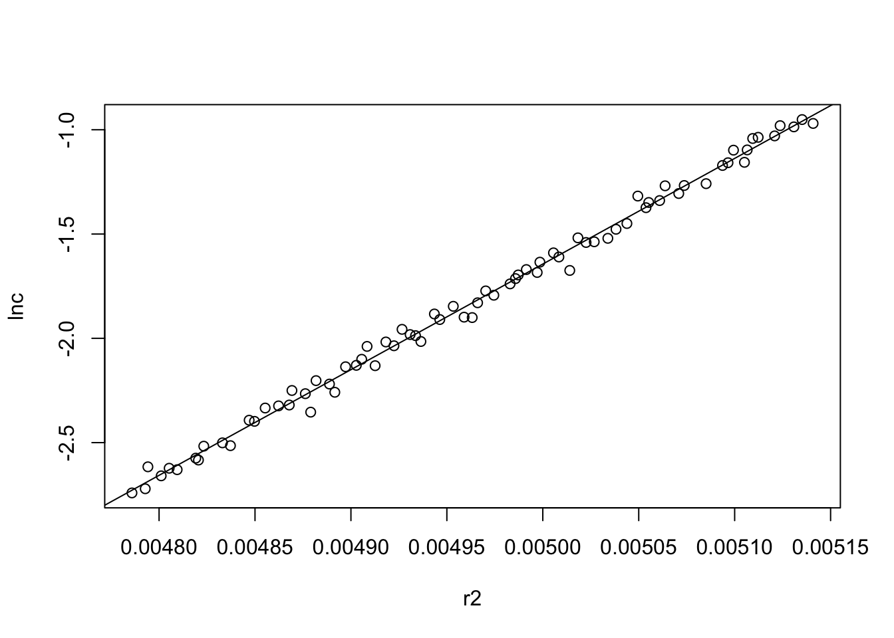
2.6156e-5 * 5065.51703## [1] 0.1324937#2.6156e-5 * 506551.703How and why do proteins form specific complexes with each other? How can such protein-protein interactions (PPIs) be investigated experimentally, and which problems are associated with designing small molecules to disrupt PPIs?
1 Introduction
Specific protein-protein interactions (PPIs) are critical to numerous biological processes, including cell-cell recognition, immune response, and signal transduction. An understanding of PPIs not only helps to elucidate the detailed roles and to predict the behaviour of proteins in a physiological context but also aids structure-based drug design.
2 Properties of PPI
2.1 Reversibility
Protein-protein interactions can be stable (permanent) or transient. Stable interactions are involved in the assembly of proteins made of multi-subunit complexes such as haemoglobin, which non-reversible in normal physiological conditions. Transient interactions, on the other hand, are reversible, and it is this property that make them act like molecular switches that play versatile roles in controlling cellular processes.
2.2 Properties of the Binding Interfaces
Protein-protein interaction interfaces often have a large surface area (1000-2000 Å2) and are relatively flat compared to the deep cavities that typically bind small molecules. On a binding interface, some residues, known as “hotspots”, contribute to the overall affinity more than other residues.
2.3 Roles of Water Molecules
Crystal structures frequently reveal water molecules within PPI interfaces. These water molecules play multifaceted roles in the stability of PPI, e.g. offsetting unfavourable electrostatic interactions, bridging two distant residues via H-bonds.
2.4 Kinetics and Thermodynamics
Reversible PPIs have two important parameters: affinity and specificity. While affinity ranges from as low as millimolar to as high as femtomolar, it is important that the specificity, i.e. the relative affinity of a protein to its cognate binding partner compared to non-cognate ones, is high.
Reversible PPIs can the considered as a simple balance of association and dissociation reactions, with rate constants being \(k_{\text{on}}\) and \(k_{\text{off}}\).
\[ \text{A+B}\mathrel{\mathop{\rightleftarrows}^{k_{\text{on}}}_{k_{\text{off}}}} \text{AB} \]
The affinity is usually defined by the dissociation constant:
\[ K_\text{d} = \dfrac{\text{[A][B]}}{\text{[AB]}} = \dfrac{k_{\text{off}}}{k_{\text{on}}} \]
where [A], [B], and [AB] are the concentrations of each species at equilibrium.
\(K_\text{d}\) can be converted to \(\Delta G\) and vice versa:
\[ \Delta G = -RT\ln{(K_\text{d})} \]
In addition to the simple single-step model, Keeble and Kleanthous (2005) suggested that relatively low affinity PPIs may be better modelled with a two-step induced-fit mechanism involving an unstable intermediate, where electrostatics drives the fast first step (supported by strong dependence on ionic strength) and rigid body rotation occurs in the slow second step:
\[ \text{A+B} \mathrel{\mathop{\rightleftarrows}^{k_{1}}_{k_{-1}}} \text{AB}^\text{*} \mathrel{\mathop{\rightleftarrows}^{k_{2}}_{k_{-2}}} \text{AB} \]
3 Studying PPIs
3.1 Determining Kd (and rate constants)
Many experimental methods can be used used for studying thermodynamics and kinetics of PPIs (the frequent tasks are determining \(K_\text{d}\) and rate constants). Most of them assumes the simple single-step association-dissociation model (Section 2.4). Three methods are described in this essay.
3.1.1 Surface Plasmon resonance (SPR)
Surface plasmon resonance (Figure 3.1) can be used to measure both \(K_\text{d}\) and \(k_\text{on}\) and \(k_\text{off}\) rates. How \(K_\text{d}\) can be calculated is explained in Equation (3.1).
![A surface plasmon is an electron oscillation generated at a surface interface between a metal and a dielectric. A plasmon resonance occurs when EM wave in visible light couples optimally with the oscillating electrons in the metal, and this results in a maximal reduction in the reflected light intensity. The resonance angle, \(\theta_\text{spr}\), is found by changing the angle of incidence of the light beam, giving a dip in a plot of intensity against angle. \(\Delta\theta_\text{spr}\) is sensitive to changes in the refractive index of the medium near the metal surface and this is a measure of the mass change at the sensor surface (in the evanescent region). In an SPR experiment, the protein acting as the “bait” is immobilised on the sensor surface, and a the analyte containing the other protein (acting as the “prey”) is passed through the cell. If binding occurs between the two proteins, \(\Delta\theta_\text{spr}\) would increase. Then, non-specific binding is washed off by buffer, and \(\Delta\theta_\text{spr}\) would decrease and \(\Delta\theta_\text{spr}\). Finally, regeneration solution is applied to remove all binding and reset \(\Delta\theta_\text{spr}\) to zero.](../img/spr.jpg)
Figure 3.1: A surface plasmon is an electron oscillation generated at a surface interface between a metal and a dielectric. A plasmon resonance occurs when EM wave in visible light couples optimally with the oscillating electrons in the metal, and this results in a maximal reduction in the reflected light intensity. The resonance angle, \(\theta_\text{spr}\), is found by changing the angle of incidence of the light beam, giving a dip in a plot of intensity against angle. \(\Delta\theta_\text{spr}\) is sensitive to changes in the refractive index of the medium near the metal surface and this is a measure of the mass change at the sensor surface (in the evanescent region). In an SPR experiment, the protein acting as the “bait” is immobilised on the sensor surface, and a the analyte containing the other protein (acting as the “prey”) is passed through the cell. If binding occurs between the two proteins, \(\Delta\theta_\text{spr}\) would increase. Then, non-specific binding is washed off by buffer, and \(\Delta\theta_\text{spr}\) would decrease and \(\Delta\theta_\text{spr}\). Finally, regeneration solution is applied to remove all binding and reset \(\Delta\theta_\text{spr}\) to zero.
\[\begin{equation} \begin{split} \overbrace{k_{\text{on}}\text{[A][B]}}^\text{rate of association} & = \overbrace{k_{\text{off}}\text{[AB]}}^\text{rate of dissociation} \\ k_{\text{on}}\text{[A]([B]}_{\text{max}}-\text{[AB])} & = k_{\text{off}}\text{[AB]} \\ \text{[AB]} & = \dfrac{k_{\text{on}}\text{[A][B]}_{\text{max}}}{k_{\text{on}}\text{[A]} + k_{\text{off}}} \\ \text{[AB]} & = \dfrac{\text{[A][B]}_{\text{max}}}{\text{[A]} + K_{\text{d}}} \end{split} \tag{3.1} \end{equation}\]
In the equation, A is the protein in the analyte, whose concentration is kept constant, and B is the immobilised protein. Since the \(\Delta\theta_\text{spr} \propto \text{[AB]}\) (intensity of the signal is proportional to concentration of protein-protein complexes), we can work out \(K_\text{d}\) from our initial concentrations of A and B.
SPR was used in the early kinetic analysis of hGH binding (Wells (1996)).
3.1.2 Fluorescence anisotropy
Fluorescence anisotropy is based on the phenomenon that, if fluorophores are excited with plane polarized light and the fluorescence is observed through analyzing polarizers, the fluorescence is also polarised.
The fluorescence anisotropy is defined as \(A=\dfrac{I_\parallel - I_\bot}{I_\parallel+2_{\bot}}\), where \(I_\parallel\) and \(I_{\bot}\) are the fluorescence intensities polarised parallel and perpendicular to the direction of the excitation beam. \(A\) is a direct measure of the molecular rotation in solution and can be used to study complex formation, as a macromolecule will rotate more slowly when it is in a complex thatn when it is alone.
Fluorescence anisotropy is more accurate than SPR for measuring ultra-high affinity interactions, and were used to to study ColE DNase-Im interactions (Papadakos, Wojdyla, and Kleanthous (2012)).
3.1.3 Isothermal titration calorimetry (ITC)
ITC measures heat changes when a complex is formed at constant temperature. In ITC, an insulated reaction cell containing protein is kept at a temperature (usually 8\(^\circ\text{C}\) above the environment) which is equal to the temperature of a reference cell, and the reference cell is kept at a constant temperature by a thermostat. Then, increasing amounts of ligand is added into the chamber, and they form complexes with the protein, which can be exothermic or endothermic. The heat change is compensated by a power supply, which can be converted to \(\Delta H\) of the reaction. As more ligands are added, proteins become saturated and \(\Delta H\) approaches zero. The raw data obtained (power supplied to compensate the heat change caused by each addition of ligands) can be integrated and corrected to give a plot of \(\Delta H\) against the molar ratio of the ligand and the protein, and \(\Delta H\), Kd and stoichiometry can be inferred from the curve (Figure 3.2).
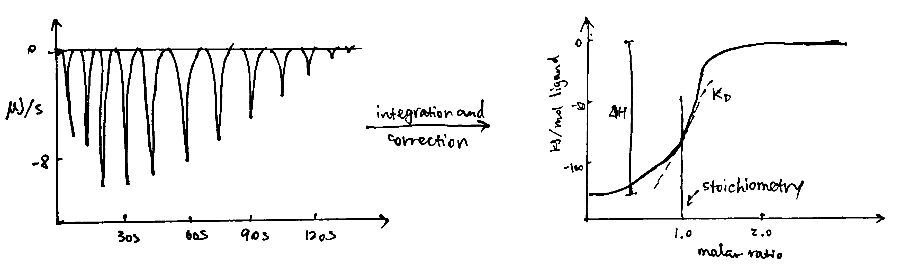
Figure 3.2: ITC data manipulation
3.2 Mechanistic Studies
The main theme of mechanistic studies is to find out the “hotspot” residues or regions that are main contributors to the affnity of PPI interfaces, and to attempt to generalise this knowledge in order to predict the affnity of any given PPI interfaces.
3.2.1 Alanine Scanning
Alanine scanning is a mutagenesis technique in which mutants are made by substituting alanine for each of the residues in a ‘reactive region’, in this case the PPI interface. By comparing the PPI affininy of each mutant to the wild type (i.e. calculating \(\Delta \Delta G\)), the contribution of each residue in binding can be assessed, and this reveals “hotspots” representing important residues.
3.2.2 Extent of Exchengeability of Amino Acids
Mutational analysis is most often restricted to alanine substitution and this does not provide an comprehensive view of the allowed amino acid space at each position. This limitation is especially significant in the analysis of PPI interfaces, which, unlike enzyme active sites, the specific orientation and chemical reactivity are less important.
Pál et al. (2006) introduced any one of the 20 natrual amino acids at all 35 hGH-hGHR binding interface positions and obtained surprising results. They verified that, the interface was highly adaptable to mutations, either from a structural or functional point of view. Whereas some of the alanine scanning hotspots showed high specificity agianst substitution, others did not, and some highly specific positions were not hotspots at all.
3.2.3 Directed Evolution
Directed evolution is an efficient approach to probe sequence and structure space in a PPI. Phage display is a specific implementation of it.
The phage display technique is summarised as follows and illustrated in Figure 3.3:
- Generate a randomised library of mutants. This can be done using error-prone PCR (ep-PCR). In PPI studies usually the randomised mutations are generated only across small sections of protein sequence that are form of the PPI interface.
- The randomised mutant DNA are ligated with a phage coat protein gene and the hybrid is then used to transduce E. coli. cells.
- The phage library is amplified by E. coli. cells, and phage particles are produced.
- The “bait” protein is immobilised, and the mixture of phage particles displaying different mutant proteins are added. Then, those with low binding affinity are washes away, and the remaining phages and collected, amplified, and used in the next round of selection.
- Repeated cycles of selection (a.k.a. “panning”) will identify the mutant proteins with the highest binding affinity to the “bait” protein. The complexes formed by these proteins with the “bait” protein can then be used for detailed mechanistic studies of PPI.
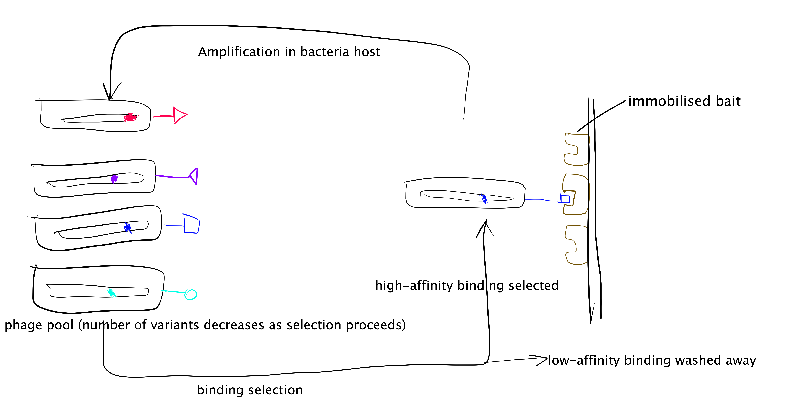
Figure 3.3: Directed evolution with phage display.
3.2.4 Computational Approaches
Computational methods can speed up the quest for high-affinity PPIs. These methods are based on rotamer libraries, which summarise the existing knowledge of the experimentally determined structures quantitatively. Rotamers are picked from the library (hotspot constraints may be applied) and grafted onto the scaffold of known structure, then the fitness is assessed using a scoring function, which unfortunately often fails to predict the actual experimental results. As the number rotamers in the library grows and algorithms improve, computational methods are expected to provide more accurate predictions.
3.2.5 Connectivity Map Reveals Modularity
Reichmann et al. (2005) analysed the TEM1–BLIP complex by drawing a connectivity map, which is build from the physical interactions between the proteins (hydrogen bonds, van der Waals interactions, etc.), and showed that the interface can be divided into 6 clusters. The change \(\Delta \Delta G\) on different clusters was found to be additive, whereas mutations within the same cluster caused complex energetic and structural consequences. Therefore, a PPI interface can be seen as a group of “hot regions”, where each region contribute relatively independently to the total binding affinity, but within each region the contributions from its component amino acids are cooperative.
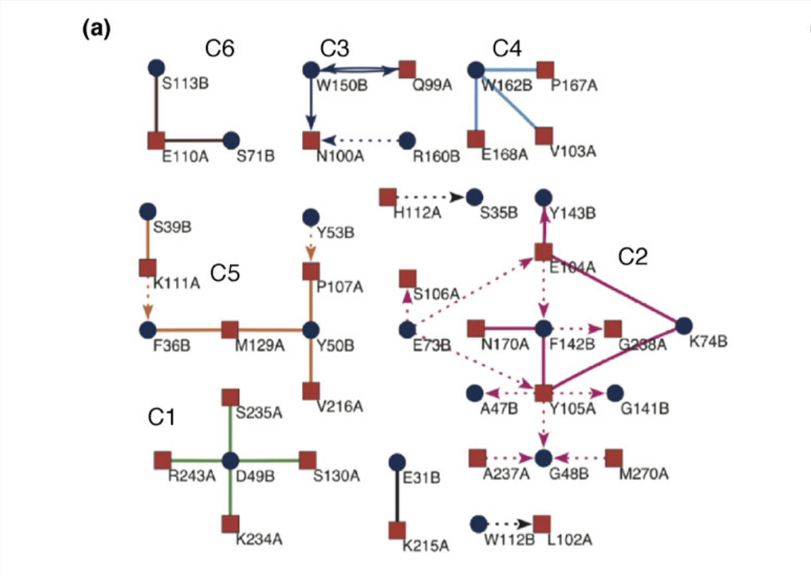
Figure 3.4: Connectivity map of the TEM1–BLIP complex.
3.2.6 X-Ray Crystallography
X-ray crystallography (XRC) studies provide structural basis for PPI interfaces, which not only facilitates the analysis of individual cases but also help to improve the scoring algorithms for computational methods.
Crystallisation tends to be difficult for low affnity PPIs due to their unstable nature. To overcome this, correctly positioned cysteines can be introduced into each of the binding partners at the interface, which could stabilise the complex, facilitating crystallisation. This technique is known as “disulfide trapping”.
4 Why Designing Small Molecule PPI Inhibitors is Difficult
PPI interfaces are usually large and flat (Section 2.2), and often tolerent to a small number of mutations (Section 3.2.2). Thus, the “druggable” targets are usually restricted to the local non-flat regions (i.e. ‘pockets’) on PPI interfaces that are enriched with “hotspot” residues. A large surface area of PPI interface, which is more tolerent to local non-favourable interactions, also makes developing inhibitors more difficult. In addition, in the case of developing non-peptide inhibitors, there is less existing knowledge on the structures of small molecules and their interactions with proteins, meaning the computational modelling is less accurate.
References
Arkin, Michelle R, Yinyan Tang, and James A Wells. 2014. “Small-Molecule Inhibitors of Protein-Protein Interactions: Progressing Toward the Reality.” Chem Biol 21 (9): 1102–14. https://doi.org/10.1016/j.chembiol.2014.09.001.
Keeble, Anthony H, and Colin Kleanthous. 2005. “The Kinetic Basis for Dual Recognition in Colicin Endonuclease-Immunity Protein Complexes.” J Mol Biol 352 (3): 656–71. https://doi.org/10.1016/j.jmb.2005.07.035.
Papadakos, Grigorios, Justyna A. Wojdyla, and Colin Kleanthous. 2012. “Nuclease Colicins and Their Immunity Proteins.” Quarterly Reviews of Biophysics 45 (1): 57–103. https://doi.org/10.1017/S0033583511000114.
Pál, Gábor, Jean-Louis K Kouadio, Dean R Artis, Anthony A Kossiakoff, and Sachdev S Sidhu. 2006. “Comprehensive and Quantitative Mapping of Energy Landscapes for Protein-Protein Interactions by Rapid Combinatorial Scanning.” J Biol Chem 281 (31): 22378–85. https://doi.org/10.1074/jbc.M603826200.
Reichmann, D, O Rahat, S Albeck, R Meged, O Dym, and G Schreiber. 2005. “The Modular Architecture of Protein-Protein Binding Interfaces.” Proc Natl Acad Sci U S A 102 (1): 57–62. https://doi.org/10.1073/pnas.0407280102.
Wells, J A. 1996. “Binding in the Growth Hormone Receptor Complex.” Proceedings of the National Academy of Sciences 93 (1): 1–6. https://doi.org/10.1073/pnas.93.1.1.
Wienken, Christoph J., Philipp Baaske, Ulrich Rothbauer, Dieter Braun, and Stefan Duhr. 2010. “Protein-Binding Assays in Biological Liquids Using Microscale Thermophoresis.” Nature Communications 1 (1): 100. https://doi.org/10.1038/ncomms1093.
1 Introduction
Many proteins that perform vital functions are membrane proteins. These include transport proteins (channels, transporters and pumps), cell adhesion molecules, and proteins that transduces energy in the electron transport chain. Despite their diverse roles, the same set of biophysical and biochemical rules govern their structural stability. Membrane proteins fall into two broad categories: 1) integeral proteins, which are embedded within a membrane and can only be isolated with detergents, and 2) peripheral proteins, which are associated with the surface of a membrane and can be removed without detergents. The focus of this essay is on how integral proteins interact with the membrane to maintain their structural stability.
2 The Biomembrane Environment
The basic structure of a biomembrane is a bilayer of amphipathic phospholipids and sphingolipids, where the polar head groups of lipids align the surfaces (each ~10 angstroms thick) and the acyl chains of lipid tails occupy the hydrophobic core (~ 30 angstroms thick). A bitopic or polytopic integral membrane protein spans the membrane entirely one or more times (Figure 2.1).

Figure 2.1: (a) a schematic showing a integral protein embedded within a biomembrane. (b)
The hydrophobic core region has a dielectric constant (\(\epsilon_{r}\)) of about 2, which is much lower than \(\epsilon_{r}\) of water (about 80), which means the same pair of charges separated by the same distance experience more electrostatic force in the membrane core than in water, according to the Coulomb’s law:
\[F = \dfrac{q_1 q_2}{4\pi \epsilon_0 \epsilon_r r^2}\]
This has several implications on acidic and basic amino acid residues. First, the carboxyl group of acidic side chains are more difficult to dissociate (i.e. p\(K_a\)s are shifted up), meaning they tend to remain in the uncharged (–COOH) form. Second, in \(\alpha\)-helical bundles, oppositely charged residues in adjacent helices associated more strongly than they do in aqueous environment. Third, this facilitates the snorkelling of lysine and arginine residues near the interface (Section 5).
3 The Thermodynamic Basis of Secondary Structure Formation
Transmembrane proteins tend to adopt a conformation that minimises the contact between their polar groups (main chain -NH, C=O, and side chains of polar residues, if any) and the hydrophobic core. This can be explained by simple thermodynamic reasoning. The water molecules in the aqueous environment outside the membrane are capable of forming relatively strong dipole-dipole interactions and hydrogen bonds (H-bonds) with polar (including charged) amino acids, while the non-polar alkyl groups that occupy the hydrophobic core of the membrane can only provide weak van der Waals interactions. Thus, if a protein adopts a conformation that exposes many polar groups, the loss of strong interactions with water will make this process very energetically unfavourable (very large \(\Delta G\)). On the contrary, if a protein with a hydrophobic surface were present in an aqueous environment, it would disrupt the dipole-dipole interactions and hydrogen bonding among water and other polar molecules. Thus, its insertion into the membrane is energetically favourable.
By forming either an \(\alpha\)-helix or a \(\beta\)-sheet (Figure 3.1), the hydrogen bonds between main chain -NH and -C=O are maximised, and this is an efficient way to shield the polar groups on the main chain from the hydrophobic core. Many transmembrane proteins, such as bacteriorhodopsin, contain multiple TM helices, which aggregates to form a \(\alpha\)-helix bundle. A \(\beta\)-sheet has to twist and coil to form a ring, called a \(\beta\)-barrel, in order to shield the main chain -NH and C=O groups on the first and last strands. \(\beta\)-barrels usually have a even number of strands so that every strand is anti-parallel to adjacent strands, there are exceptions: the voltage-dependent anion channels (VDACs) located on mitochondrial outer membrane has 19 strands, where the first strand is parallel with tha last strand, with weaker hydrogen bonding. \(\beta\)-barrels are less common than \(\alpha\)-helix bundles, and they are predominantly present on the outer membrane of Gram-negative bacteria, mitochondria, and chloroplasts.

Figure 3.1: Schematic representation of an alpha helix and a beta barrel. Blue and red lines represent hydrophobic and hydrophilic side chains, respectively.
The transmembrane region of each helix in a \(\alpha\)-helical bundle is composed predominantly of hydrophobic amino acid residues (Ala, Leu, Ile, Val, Phe), which are exposed on the surface and allows favourable interaction with the hydrophobic core. By contrast, each \(\beta\)-strand of a \(\beta\)-barrel has an alternating pattern of hydrophobic and polar residues. This is because two adjacent residues in a beta strand have their side chains pointing in opposite directions, and a \(\beta\)-barrel formed in this way has an hydrophobic exterior that interacts with the hydrophobic core and an hydrophilic inner surface that is in contact with the aqueous environment.
Thus, TM helices, but not \(\beta\)-barrels, can be predicted using a hydropathy plot (Figure 3.2), in which the average hydrophobicity index of a fixed number of consecutive residues (a “window”), \(H(i)\), is plotted against the index (\(i\)) of the window, i.e.
\[H(i) = \sum_{i<j<i+k}h(a_j)/k\]
for \(1 < i < n - k\), where n is the length (number of residues) of the peptide, \(h(a_j)\) is the hydrophobicity index of the \(j\)-th amino acid residue and \(k\) is the window size.

Figure 3.2: A schematic hydropathy plot. Every peak in the plot represents a highly hydrophobic local region in the peptide and thus indicates a potential transmembrane helix.
A small number of polar (even charged) residues within a TM helix can be tolerated as long as the overall transmembrane segment is hydrophobic enough. In addition, in polytopic proteins, polar residues in adjacent helices may help to stabilise each other. These non-hydrophobic residues often have functional roles, as exemplified by voltage-gated K+, Na+ and Ca2+ channels (Figure 3.3).

Figure 3.3: The gating mechanism of voltage-gated potassium channel. The S4 helix (red) is arginine-rich and thus positively charged. A linker connects S4 and S5 helix, the latter being a part of the pore domain. In resting state, the interior (bottom) of the cell is negatively charged relative to the exterior (top). A change in voltage causes the S4 helix to move upwards due to electrostatic force, and it pulls the gate open via the S4-S5 linker.
4 Glycine and Proline in TM Helices
The side chain of proline forms a pentameric ring with the amine group on the main chain. Thus, in a helix, the amine group of a proline does not have a hydrogen that can be H-bonded to the main chain C=O of the residue above it. This introduces local flexibility within a relatively regid helix and often forms a hinge. Similarly, due to glycine’s small size, it can tolerate a much wider range of dihedral angles than other amino acids, which also makes it able to introduce flexibility. This flexibility is crucial for the function of some proteins, such as voltage-gated ion channels (Figure 3.3).
5 Tryptophan and Tyrosine at the Interface and Lysine/Arginine Snorkelling
Tryptophan and tyrosine are often found in the interfacial region in both \(\alpha\)-helical bundle and \(\beta\)-barrel proteins. Their hydrophobic aromatic ring interacts with the hydrophobic core, and their polar -NH (of Trp) or -OH (of Tyr) groups interacts with the lipid head groups. Similarly, lysine and arginine extend their side chain towards the surface, so that their positively charged guanidium (of Arg) or amide (of Lys) groups form strong ionic interactions with the negatively charged lipid head groups. This phenomenon is known as “snorkelling.” These interactions helps to lock the membrane in place within the membrane, preventing vertical motions.
6 Interactions with Lipids
Membrane proteins interacts with lipid in various ways, and these interactions contribute to the structural stability and function of the protein to different extents.
A transmembrane protein interacts strongly with the shell (annulus) of lipid that surrounds it. These lipids are called annular lipids and can be distinguished experimentally from the bulk lipids of the bilayer. In addition, there is a third class of lipids, called nonannular lipids (or lipid cofactors), which are tightly bound in crevices or between subunits of the protein and are often crutial for the activity of the protein. Electron paramagnetic resonance (EPR) can be used to measure the mobility of annular lipids, and thus gives information on the selectivity for annular lipids of a protein. Most proteins are found to prefer negatively charged lipids such as phosphatidylserine and phosphatidylinositol.
Strong lipid-protein interactions are also evident form crystal structures, and this interaction can be specific. For example, three cardiolipin (CDL) molecules were found to bind to three sites on the ANT1 transporter. The tendency of CDL to bind to these sites can also be shown in molecular dynamics simulations. The specificity of this binding can also be shown computationally, by calculating the free energy at different protein-lipid separations for CDL and other lipids (Figure 6.1).

Figure 6.1: Computational analysis of a protein’s preference to bound lipids. CDL binding results in a significantly lower energy state.
Inward-rectifier K+ channels (Kir) are an example where the lipid-protein interaction is directly involved in the protein’s function. Kir have a Transmembrane domain (TMD) and an intracellular C-terminal domain (CTD). PIP2 binding cuases the CTD to move towards the TMD, which in turn causes the helices in the TMD to bend and thus opens the gate (Figure 6.2).

Figure 6.2: Lipid-gated Kir channel
Many crystal structures of GPCRs reveal cholesterol bound to the protein. Molecular dynamics simulations at different cholesterol concentrations suggests the role of cholesterol in reducing the dynamic flexibility the protein and stabilising a certain conformational state in an allosteric fashion.
1 Determine the time course of \(\beta\)-galactosidase induction
1.1 Protocal
Trial experiment:
- Take OD600 reading in spectrophotometer 1) to verify that the absorbance is around 0.6 (i.e. the cultures are in exponential growth) 2) to estimate the density of E. coli. in solution
- Add 9.940 ml (9.9 ml + \((20 \times 2)\) \(\mu\)l) of stock E. coli solution into each of two flasks labelled
+IPTGand-IPTG(control), respectively - at 1 min intervals take 20 \(\mu\)l sample and add to a microtube containing 80 \(\mu\)l permeabilisation reagent (200 mM Na2HPO4, 20 mM KCl, 2 mM MgSO4, 0.8 mg/mL hexadecyltrimethylammonium bromide (CTAB), 0.4 mg/mL sodium deoxycholate and chloramphenicol. Whirlimix for 5 seconds. (add permeabilisation reagent as soon as a sample is taken out, which contains antibiotics to stop the bacteria from producing more galactosidase (otherwise the bacteria taken out will just continue to produce galactosidase at the same rate); do not add ONPG until all samples are collected, so assays start at the same time)
- collect 2 samples, at -2 min and 0 min (for both
+IPTGand-IPTG) which represent baseline activity and then:- To the remaining 9.9 ml of E. coli. in
+IPTGflask, add 0.1 ml of IPTG (stock solution provided at 100 mM) so that the final concentration is 1 mM. This will induce the lac operon by acting as an allolactose mimic. Mix. - To the remaining 9.9 ml of E. coli. in
-IPTGflask, add 0.1 ml of salt solution
- To the remaining 9.9 ml of E. coli. in
- Collect 10 additional samples (for each of
+IPTGand-IPTG), and setup a blank: 20 \(\mu\)l of salt solution plus 80 \(\mu\)l permeabilisation reagent. (i.e. measuring 40 samples against one blank). - Add 75 \(\mu\)l of ONPG to 75 \(\mu\)l of each sample and the blank. Incubate at 37oC and start the timer.
- Monitor the reaction until a convenient intensity of colour has developed. Take samples out and note the time of incubation.
- Read absorption at 415 nm against the blank. The readings should not exceed 1.2 to ensure linearity, so it’s important to stop the reaction before the colour gets too dark (in the previous step).
- If any of the readings gets beyond 1.2, incubate for less time in the next experiment
- Plot a graph of A415 against time. Assess the graph:
- Are there any regions of uncertainty? If yes, take more samples in this region in the next experiemnt.
- Has the induction reached completion? If not, take samples in a longer time range (2 hours) in the next experiment.
Optimised experiment:
Perform the same procedure described above with better knowledge on the time of incubation and time range and intervals to take samples.
1.2 Results
control <- c(.060, .076, .077, .079, .080, .082,
.086, .082, .084, .085, .085, .083)
iptg <- c(.077, .082, .079, .098, .103, .136,
.171, .220, .280, .297, .310, .336)
iptg1 <- c(.079, .079, .078, .105, .112, .148,
.202, .239, .274, .335, .362, .440)
iptg2 <- c(.081, .082, .082, .110, .168, .219,
.324, .414, .538, .651, .704, .786)
tibble(
time = rep(seq(-2, 20, 2), 4),
group = rep(c("-IPTG", "+IPTG 1", "+IPTG 2", "+IPTG 3"), each = 12),
absorbance = c(control, iptg, iptg1, iptg2)
) %>% ggplot(aes(time, absorbance)) +
geom_line(aes(color = group)) +
ylab("absorbance (A415)")+
geom_vline(xintercept = 0)+
geom_text(data = tibble(x = 1.4, y = 0.4, label = '+IPTG'),
aes(x, y, label = label))+
scale_x_continuous(breaks = seq(-2, 20, 2))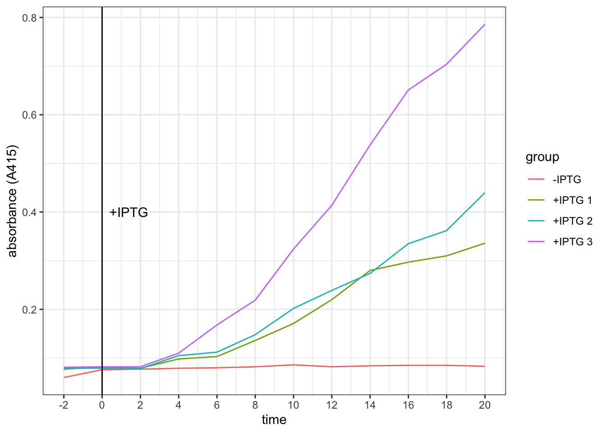
Conclusion. It takes about 4 minutes for the effect of IPTG on increasing galactosidase activity to become evident.
2 Identify the WT Strain
You are provided with two strains of coli labelled A and B, one of which (‘wild type’) is subject to catabolite repression, and one of which is not. Devise an experimental protocol to determine which strain is the wild type strain.
The E.coli strains are already grown on minimal medium containing 1% glycerol as a ‘poor’ carbon source (which should result in a high intracellualr cAMP concentration). Thus, to test for sensitivity of catabolite repression, we add a ‘good’ carbon source — glucose (which should increase cAMP level and repress galactosidase synthesis).
2.1 Protocol
- Measure OD600 of both strains.
- For each of strains A and B, set up two flasks,
+glucoseand-glucose(i.e. 4 flasks in total); then:- Add 9.440 ml of E. coli to all flasks
- collect 2 samples, at -2 min and 0 min which represent baseline activity and then:
- add 0.5 ml of glucose solution or glycerol solution to
+glucoseflasks and-glucoseflasks, respectively - collect 3 samples at 2, 4, 6 min and then:
- Add 0.1 ml IPTG (100 mM) to all flasks and mix (start induction)
- From 8 to 18 min, take 6 samples at 2 min intervals
- Add 0.1 ml cAMP to all flasks
- Collect samples and set up a blank: 20 \(\mu\)l of salt solution plus 80 \(\mu\)l permeabilisation reagent. (the blank is used by all samples taken from 4 flasks)
- Add 75 \(\mu\)l of ONPG to 75 \(\mu\)l of each sample and the blank. Incubate at 37oC.
- Incubate for appropriate amount of time (as determined in part 1)
- Read absorption at 415 nm against the blank.
- Plot a graph of A415 against time.
- Compare the plots. The strain unresponsive to catabolite inhibition should give similar plots in both
+glucoseand-glucoseconditions. The WT strain should show lower A415 (galactosidase activity) when glucose is added, since its galactosidase synthesis is inhibited by the ‘good’ carbon source, pyruvate.
The experiment in this part also answers the question in the next part, and results are shown there.
3 Devise an experimental protocol to show the role played by cAMP in catabolite repression.
Since our bacteria are grown on minimal medium containing 1% glycerol as a ‘poor’ carbon source (which should result in a high intracellualr cAMP concentration), we need to first use glucose to inhibit galactosidase production (as described in part 2). Then, we add cAMP. If the added cAMP enhances the production of galactosidase, we can prove that it’s cAMP whose level is decreased during catabolite repression (by addition of a ‘good’ carbon source, pyruvate).
The experimental procedure is described in the previous section.
3.1 Results (part 2 and 3)
Optical density. OD600 of strain A and B solutions are 0.309 and 0.505, respectively. Both are within the range in which the bacteria are in exponential growth phase. However, since their densitie differ, when interpreting the result we should not directly compare A to B. Instead, we should assess the effects of glucose and cAMP on each of the strains independently.
Galactosidase activity assay results. The raw data and the plot are shown below.
# strain A -glucose
Ag = c(.089, .049, .089, .048, .070, .072, .079, .111,
.156, .198, .254, NA, .388, .424, .419, .520)
# strain A +glucose
AG = c(.071, .071, .082, .049, .075, .070, NA, .102,
.130, .169, .207, .221, .251, .261, .342, .412)
# strain B -glucose
Bg = c(.087, .086, .097, .073, .091, .089, .099, .156,
.188, .273, .356, .482, .593, .699, .795, .943)
# strain B +glucose
BG = c(.084, .080, .084, .071, .087, .088, .096, .109,
.127, .150, .184, .216, .254, .322, .463, .543)
label = tibble (
x = c(2, 6, 18),
y = c(0.75, 0.7, 0.75),
label = c("+glucose", "+IPTG", "+cAMP")
)
tibble(
strain = rep(c("A", "B"), each = 32),
glucose = rep(c("-", "+", "-", "+"), each = 16),
time = rep(seq(-2, 28, 2), 4),
absorbance = c(Ag, AG, Bg, BG)
) %>%
ggplot(aes(time, absorbance)) +
geom_point(aes(shape = glucose))+
geom_smooth(aes(linetype = glucose), method = 'loess', formula = 'y ~ x')+
# label addition of glucose, IPTG and cAMP
geom_vline(xintercept = c(0, 6, 18))+
geom_text(data = label, aes(x, y, label = label))+
# plot strain A and strain B side by side
facet_grid(~strain)+
# tweak axes and add title & notes
scale_x_continuous(breaks = c(0, seq(-2, 30, 4)))+
labs(
title = "Effect of glucose and cAMP on galactosidase activity of strains A and B",
caption = "N.B. anomalous data values were replaced with NA and are invisible from the plot"
)## Warning: Removed 2 rows containing non-finite values (stat_smooth).## Warning: Removed 2 rows containing missing values (geom_point).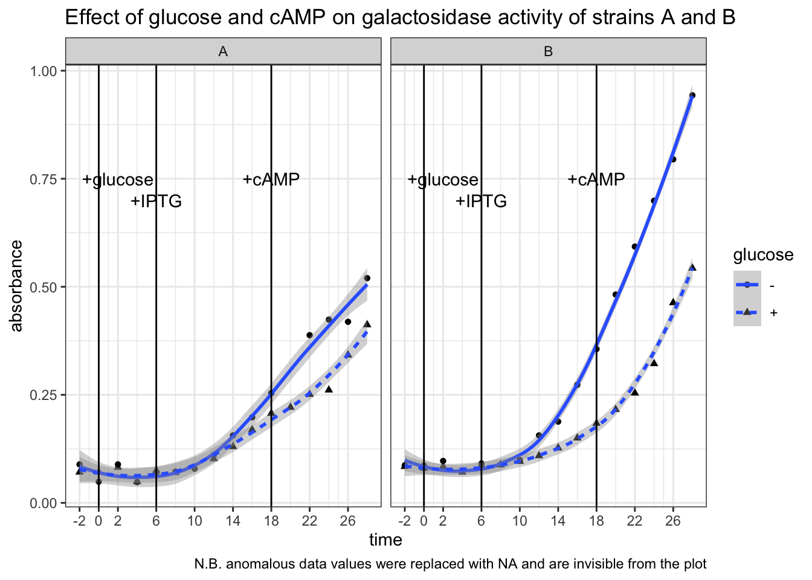
Conclusion. Strain B is WT. In strain B, galactosidase activity was significantly lower in +glucose than in -glucose from t = 6 min to t = 18 min (after IPTG induction, before addition of cAMP). In strain A the difference is less pronounced. Addition of cAMP at t = 18 min markedly increased galactosidase activity in strain B + glucose setup, but had no noticeable effects in the other three setups. This means catabolite repression by glucose is mediated by lowering concentration of cAMP, and thus an addition of cAMP could relieve this repression.
4 Devise experiments to test the following model.
\(\alpha\)-keto acids are the long sought `catabolites’ that control cAMP levels and that they act by inhibiting cAMP synthesis
(Solutions of \(\alpha\)-ketoglutarate, pyruvate, and succinate are available in the lab. E. coli is able to take up any of these exogenously added metabolites.)
4.1 Protocol
Repeat the experimental procedure described in part 2 with only the WT strain (strain B) and replacing glucose with different \(\alpha\)-keto acids. The concentration of the ketoacids are 0.5 M. Thus, to make their concentration in the 10 ml reaction mixture be 10 mM, 0.2 mL of each was added to different flasks individually (alpha-ketoglutarate was 1.0 M, so 0.1 mL of it was added instead).
If the addition of an \(\alpha\)-keto acid alone causes the activity of galactosidase to decrease, it can be considered as the evidence that this ketoacid is involved in catabolite repression. If the following addition of cAMP can ‘rescue’ galactosidase activity, then this can be considered as the evidence that this ketoacid inhibits cAMP synthesis.
4.2 Results
Optical density. OD600 = 0.393, which verifies that the bacteria were in exponential growth phase.
Galactosidase activity assay results. The raw data and the plot are shown below.
# glycerol (control)
gly = c(.075, .076, .076, .076, .077, .078, .116, .214,
.303, .404, .510, .609, .702, .901, 1.028, 1.173)
# pyruvate
pyr = c(.077, .075, .075, .075, .075, .072, .085, .088,
.095, .135, .149, .184, .234, .280, .469, .585)
# succinate
suc = c(.074, .076, .075, .074, .078, .080, .083, .120,
.152, .204, NA, .307, .408, .554, NA, .762)
# alpha-ketoglutarate
akg = c(.077, .076, .073, .074, .076, .078, .088, .097,
.122, .172, .215, .244, .293, .367, .448, .647)
tibble(
carbon_source = as_factor(rep(c("glycerol", "succinate", "alpha-ketoglutarate", "pyruvate"), each = 16)),
time = rep(seq(-2, 28, 2), 4),
absorbance = c(gly, suc, akg, pyr)
) %>%
ggplot(aes(time, absorbance)) +
geom_point(aes(shape = carbon_source))+
geom_smooth(aes(color = carbon_source), method = 'loess', formula = 'y ~ x')+
# rates after adding cAMP (tangent lines)
geom_abline(slope = 0.06314, intercept = c(-0.647, -1.00, -1.20))+
# label addition of glucose, IPTG and cAMP
geom_vline(xintercept = c(0, 6, 18))+
geom_text(data = label, aes(x, y, label = label))+
# tweak the axes and add title & notes
scale_x_continuous(breaks = c(0, seq(-2, 30, 4)))+
labs(
title = "Effect of different carbon sources on galactosidase activity",
caption = "N.B. anomalous data values were replaced with NA and are invisible from the plot"
)## Warning: Removed 2 rows containing non-finite values (stat_smooth).## Warning: Removed 2 rows containing missing values (geom_point).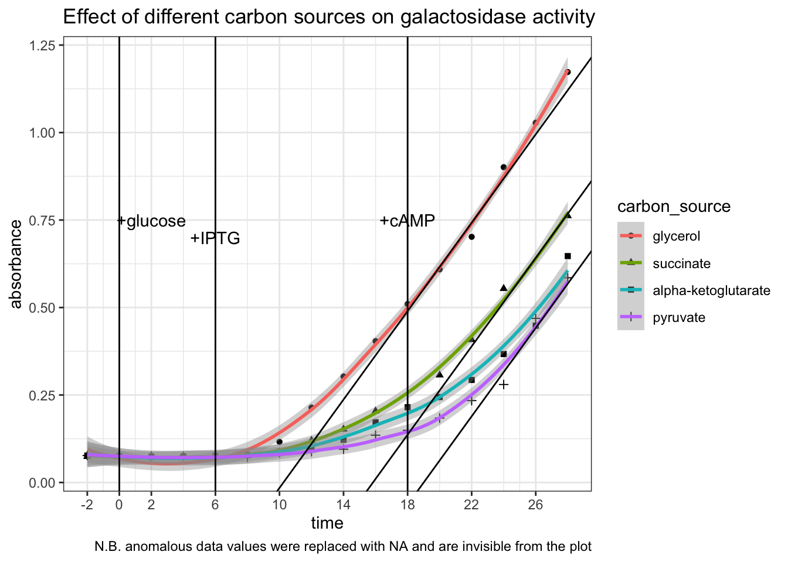
Conclusion. All three \(\alpha\)-keto acids are shown to be capable of catabolite repression. After adding IPTG, the extents to which the \(\beta\)-galactosidase activity increases in E. coli provided with \(\alpha\)-keto acids are significantly and consistently lower than in E. coli provided with glycerol only. Addition of cAMP has no significant effect on the glycerol control, but was able to improve the rate of increase of \(\beta\)-galactosidase activity (gradient on the graph) in groups with \(\alpha\)-keto acids to about the same as the glycerol control (shown as tangent lines in the plot). The capability of different \(\alpha\)-keto acids can be ranked qualitatively: pyruvate > \(\alpha\)-ketoglutarate > succinate.
Introduction
The Ca2+ selectivity of voltage-gated calcium (Cav) channels remained unclear. They were thought to use a ‘knock-off’ methanism which requires multiple ion-binding cores, but mutational analyses supported a single high-affinity Ca2+ binding site. This paradox is explained by the mechanism proposed in this article, based on the crystal structures of CavAb channels.
Methods
In this study, the authors created several mutants of bacterial Nav channel NavAb by site directed mutagenesis using QuickChange at the selectivity filter region1. Some of these mutations changes the activity of the channel from allowing efflux of Na+ to allowing influx of Ca2+ to different extents (quantified by the relative permeability of Ca2+ against Na+). Baculovirus were used as the vector to infect Trichopulsia ni cells. Proteins were collected from insect cells, purified, concentrated to ~20mg ml-1, and reconstituted into DMPC:CHAPSO bicelles (Figure 1). Crystals were grown in a hanging-drop vapour-diffusion format.

Figure 1: The DMPC:CHAPSO bicelle. Bicelles are disks with a planar region formed by long chain lipid phospholipids and a rim composed of short chain phospholipids or detergent molecules. It provides an environment that resembles a lipid bilayer where membrane proteins’ natively resides. Membrane proteins can be incorporated into bicelles for functional studies as well as crystallisation.
Before X-ray diffraction data collection, crystals were soaked with cryo-protectant solutions containing Ca2+, Mn2+ or Cd2+ of indicated concentrations. These ions travel through solvent channels within the crystals and chelate with amino acid residues in the selectivity filter region.
X-ray diffraction data were integrated and scaled with the HKL2000 packaged and further processed with the CCP4 package. THe structure of CavAb and its derivatives were solved by molecular replacement by using an individual subunit of the NavAb structure (PDB code 3RVY) as the search template. This choice is natural since the proteins used in this study are derived from NavAb and differ from it by no more than 3 amino acid residues.
The divalent cations were identified by anomalous difference Fourier maps calculated using data collected at wavelengths of 1.75 Å for Ca2+, Cd2+ and Mn2+. Anomalous scattering describes cases where a pair of structure factors \(\mathbf{F}_{hkl}\) and \(\mathbf{F}_{\overline{hkl}}\) does not obey Friedel’s law2, which occurs when the incident X-ray photons have an energy close to a transition energy of the diffracting atom, resulting in absorption of radiation energy and change in phase (normal scattering does not change the phase). At the wavelengths convinient for diffraction, only atoms heavier than phosphorus or sulfur behave as anomalous scatterers. While anomalous scattering data are frequently used to solve the phase problem (in techniques known as single/multiple wavelength anomalous dispersion (SAD/MAD)), it can also be used (as in this study) to calculate an anomalous difference map after phases are available to show the locations of the heavy atoms.3
Crystallography and NMR System software was used for refinement of coordinates and B-factors. Final models were obtained after several cycle refinement with REFMAC and PHENIX and manual re-building using COOT. The geometries of the final structural models of CavAb and its derivatives were verified using PROCHECK.
13 crystal structures of 5 proteins (NavAb and 4 CavAb variants) with the following divalent cation concentrations were determined and deposited into PDB:4
- TLESWSM (NavAb) + Ca2+ 15mM
- (TLEDWSM, TLEDESD, TLDDWSM) + Ca2+ 15mM
- TLDDWSD + (Ca2+ 15mM; Mn2+ 100mM; Cd2+ 100mM)
- TLDDWSN + Ca2+ (0.5, 2.5, 5, 10, 15mM)
Of the 13 crystal structure models, 4MVR (175TLDDWSD181) corresponds to the protein with the greatest permeability ratio PCa:PNa , while 4MS2 (175TLDDWSN181) diffracted to the highest resolution (2.75 Å).
Analyses of Results
Ca2+ Binding Sites
Using the anomalous diffraction data, the F+Ca - F-Ca anomalous difference map was calculated. Two strong peaks followed by a weaker peak were found along the ion-conduction pathway, which correspond to the three Ca2+ binding sites. They are designated site 1, 2 and 3 from the extracellular side to the intracellular side.
Site 2 is the site with the highest affinity for Ca2+. It is surrounded by a total of 8 oxygen atoms, 4 of which coming from the carboxylate of D177 above and the other 4 from the carbonyl of L176 below. Site 1 is coordinated by the plane of 4 carboxyl groups from D178, and site 3 by the plane of 4 carbonyls from T175 (Figure 2). Throughout the selectivity filter, the O-Ca2+ coordination distances are in the range of 4.0-5.0 Å, which is much longer than the ionic diameter of Ca2+ (2.28 Å), suggesting that the bound Ca2+ ion maintains its hydration shell while passing through the pore. Site 3 has the lowest affinity, consistent with its role in exit of Ca2+ from the selectivity filter into the central cavity. Figure 3 shows the molecular model and electron density near the selectivity fileter region of CavAb (TLDDWSN + 15mM Ca2+) in COOT5 (contoured at r.m.s.d = \(3.02 \sigma\)).

Figure 2: A schemetic showing the Ca2+ ion coordination sites of CavAb (TLDDWSD)

Figure 3: The selectivity filter region of 4MS2.
The relative affinities of the three sites were further confirmed by experiments on CavAb (TLDDWSN) with varying Ca2+ concentrations (0.5, 2.5, 5, 10, 15mM): at low Ca2+ concentration, two strong peaks of approximately equal intensity are found at Site 1 and Site 2; at high concentration the electron density is significantly enhanced in Site 2 and decreased in Site 1. The electron density at Site 3 remains low in all concentrations.
Ion-Permeation Mechanism
Based on the properties of the three coordination sites, an ion-permeation mechanism can be deduced. The three coordination sites are separated by a distance of about 4.5 Å, which makes it energetically unfavourable for Ca2+ to occupy adjacent sites simutaneously. Thus the authors suggested that the selectivity filter oscillates between two states, in which either a single hydrated Ca2+ occupies Site 2, or two of them each occupies Site 1 and Site 3. The entry of Ca2+ into Site 1 is promoted by it high extracellular concentration, and the exit of Ca2+ is facilitated by the low affinity of Site 3.
Notably, this mechanism suggests that Ca2+ ions are kept hydrated during its passage through the selectivity filter. This is very different from the mechanism by which potassium channels achive selectivity, which requires K+ ions’ hydration shell to be removed.
Roles of Key Selectivity Filter Residues
The five variants of CavAb the author produced have different Ca2+ selectivity ratios, which can be partially explained by directly comparing the difference in the arrangement of selectivity filter residues. This comparison is sometimes facilitated by superposition of one structure onto another. For example, the carboxyl group of D177 in TLDDWSD interacts with the Ca2+ ion, while the carboxyl group of E177 in TLEDWSD swings away from the selectivity filter and forms a hydrogen bond with D181 and the main-chain nitrogen atoms of S180.
specifically, from 175TLESWSM181 to TLDDWSD, TLDDWSN, TLDDWSM, TLEDWSM, TLEDWSD and TLDSWSM↩︎
Friedel’s law states that \(\mathbf{F}_{hkl}\) and \(\mathbf{F}_{\overline{hkl}}\) have the same amplitude but opposite phase angle.↩︎
This map is automatically calculated in phenix.refine.↩︎
namely 4MS2, 4MTO, 4MTF, 4MTG, 4MVU, 4MW8, 4MVZ, 4MVM, 4MVO, 4MVQ, 4MW3, 4MVS, 4MVR↩︎
COOT version 0.9.1 (packaged with CCP4), on Linux version 5.8.16-2-MANJARO↩︎
A high-quality protein structure model explains the experimental observations well, and conforms to physical and biochemical principles. There are some parameters indicating the quality of a structure model. Some of them are used during model building and refinement, while others apply only on a refined structure.
1 The Essence of X-Ray Crystallography
The intensity at \((h, k, l)\) in the reciprocal space, i.e. the structure factor amplitudes collected in X-ray experiments is directly related to the Fourier transform of the electron density in the real space (\(I = \mathbf{F}_{hkl}^2\)), the latter being calculated as:
\[\begin{equation} \mathbf{F}_{hkl} = \int_{x}\int_{y}\int_{z}\rho(x, y, z)e^{2\pi i(hx +ky + lz) }\mathrm{d}x \mathrm{d}y \mathrm{d}z \end{equation}\]
In practice, since the number of atoms and reflections (hence \((x, y, z)\) or \((h, k, l)\) coordinates is limited, its discrete form, which can be efficiently computed, is used:1
\[\begin{equation} \mathbf{F}_{hkl} = \sum_{j}^{n}f_j e^{2\pi i(hx_j +ky_j + lz_j) } \end{equation}\]
where \((x_j, y_j, z_j)\) is the coordinates of the j-th atom in real space.
This is also known as the structure factor equation.
Solving the electron density from structure factors involves solving the inverse Fourier transform of the above equation, also known as the electron density equation, in its discrete form:
\[\begin{equation} \rho(x, y, z) = \dfrac{1}{V}\sum_{h}\sum_{k}\sum_{l}w_{hkl}|\mathbf{F}_\text{obs}|e^{-2\pi i(hx + ky + lz - \alpha^\prime_{hkl})} \end{equation}\]
where \(\alpha^\prime_{hkl}\) is the phase at each set of coordinates in the reciprocal space. The phases are not directly available but are necessary (actually more important than intensities) for computing \(\rho(x,y,z)\) (electron density).
The phases can be solved either by phasing experiments, in which case the resolution is relatively low but the data is unbiased, or by molecular replacement (MR), in which case the resolution is relatively high but the data suffer from bias (the phases resemble the search model more than the actual structure). Thus, bias minimisation measures such as maxinum likelihood map coefficients are applied before electron density map contrstruction.
2 Assessing the Quality of A Structure During Model Building and Refinement
Solving the electron density and ultimately the atomic structure from experimental data is an iterative process, starting from a model with low resolution and imperfect phases and progressively refining the model by applying prior knowledge on the information the current model can provide so far.
In general, the first step in refinement is to construct a crude electron density map (Equation (3)) using phase angles (\(\alpha^\prime\)) obtained either from MR or experimental phasing. This initial map, F0, is improved using techniques such as density modification, solvent leveling, solvent flattening. At some critical point in the iterative improvement of phases, the map becomes clear enough that a protein chain can be traced through it. From this point on, real-space refinement is also conducted at each round of iteration. Electron density map is obtained (details in Section 2.3), and filled with atoms, and transformed back to the reciprocal space. This process repeats until converging to a high-quality strucure. \(R\) and \(R_\text{free}\), explained below, are used to assess progress in the refinement, and is also a major factor in evaluating the quality of a model.
2.1 R and Rfree
R is a measure of the deviation of calculated intensities from models (details in Section 2.2) from the observed intensities in the diffraction pattern, defined by the following equation:
\[ R = \dfrac{\sum ||\mathbf{F}_\text{obs}| - |\mathbf{F}_\text{calc}||}{\mathbf{F}_\text{obs}} \]
Since bias can easily be introduced into the R value (especially by overparameterisation, see Section 2.2) and a reduction of R value sometimes does not improve the actual quality of structure (Kleywegt and Brünger (n.d.)), a small fraction (typically around 5%2) of randomly selected reflections are removed from the data used for refinement. These reflections can then be used to calculate an R factor, denoted as \(R_\text{free}\), whose reduction can be considered as an unbiased estimate of the improvement of the model.

Figure 2.1: R and R-free values decreases as refinement proceeds (left: Coot; right: phenix.refine).
Figure 2.1 shows the decrease of R and Rfree during a refinement task conducted in Phenix.
2.2 Reciprocal-Space Refinement: Refinement by least squares
Reciprocal-space refinement involves computerised attempts to improve agreement between \(\mathbf{F}_\text{obs}\) and \(\mathbf{F}_\text{calc}\) by without consideration of the maps and models. Refinement by least squares is the earliest successful technique and is discussed here.3
The goal of refinement by least squares is, find \((x_j, y_j, z_j)\) for all atom \(j\) whose expected ( i.e. computed) structure factor amplitudes, \(|\mathbf{F}_\text{calc}|\) are as close as possible to observed structure factor amplitudes, \(|\mathbf{F}_\text{obs}|\). Specifically, this means minimising the function \(\Phi\):
\[\begin{equation} \Phi = \sum_{hkl}(w_{hkl}\mid\mathbf{F}_\text{obs}\mid - \mid\mathbf{F}_\text{calc}\mid)_{hkl}^{2} \end{equation}\]
where \(w_{hkl}\) is the weight term that depends on the reliability of the corresponding measured intensity and \(|\mathbf{F}_\text{calc}|\) is a variant form of Equation (2) that can include additional parameters such as B-factor (\(B_j\)) and occupancy \(n_j\). An equation with \(B_j\) and \(n_j\) included can be written as:
\[\begin{equation} \mathbf{F}_\text{calc} = \sum_{j}n_j f_j e^{2\pi i(hx_j +ky_j + lz_j) - B_j[(\sin\theta)/\lambda]^2} \end{equation}\]
Note that the equatin shows that the effect of B-factors depends on the angle of reflection \((\sin\theta)/\lambda\).
Solving the minimum of \(\Phi\) analytically is impractical, and instead numerical methods are used, which would lead to a minimum closest to the starting value.To prevent the refinement converging to a local minimum, it is important that the starting parameters be near the global minimum. Is also important not to include too many parameters (such as B-factor) at the initial stages of resolution when the resolution is low, as this would decrease the radius of convergence (Figure 2.2).

Figure 2.2: Adding number of parameters improves precision of refinement, but makes it more unlikely to reach the global minimum from a given point. Thus, refinement starts with a small number of parameters, and more parameters are only added after the success of previous lower-resolution refinement steps.
To minimise the number of parameters used during early stages of refinement (and thus to increase radius of convergence), individual \((x,y,z)\) coordinates are actually not used. Instead, only torional angles \(\psi\) and \(\phi\) are allowed to change, and all bond lengths and angles are fixed to their theoretical average, side chains are assumed to be in their preferred conformation, and peptide linkages are fixed to be planar. This strategy is known as restrained reciprocal space refinement. As refinement proceeds, more parameters, from individual \((x,y,z)\) coordinates to isotropic B-factors and finally anisotropic factors, can be added into calculation.
2.3 Real-Space Refinement: Map Fitting
Map fitting or model building entails building a molecular model that fits realistically into the current electron density contour map.
To reduce the bias (towards Fcalc (Fc)) when constructing the electron density map, Fourier syntheses of Fobs and Fcalc are used. A Fourier synthesis mFo - nFc is calculated as:
\[ \rho(x, y, z) = \dfrac{1}{V}\sum_{h}\sum_{k}\sum_{l}(m|\mathbf{F}_\text{o}|-|\mathbf{F}_\text{c}|)e^{-2\pi i(hx + ky + lz - \alpha^\prime_{hkl})} \]
and its corresponding electron density map is called an mFo - nFc map.
Simply put, the 2Fo - Fc map resembles a molecular surface, and a Fo - Fc map emphasises the error (positive density implies that the unit cell contains more electron density in this region than implied by the model (Fc). Near the end of refinement, the Fo - Fc map becomes rather empty except in problem areas, which may need to be corrected manually.
Fitting a molecular model into the electron density map depends on prior knowledge, such as average bond lengths and angles, the amino acid sequence of the protein, properties of peptide chains, etc. For example, we know that carboxyl oxygens in adjacent amino acid residues in a \(\beta\)-sheet point in opposite directions. Thus, once a \(\beta\)-sheet along with one or two carboxyl oxygen are discernible, we can make a sensible guess of the positions of all other carbonyl oxygens.
3 Assessing Quality After Automatic Model Building and Refinement
3.1 Density fit analysis and local geometry validation
Automatic model building and refinement use the decrease of R value as an indicator of progress and terminates when R is considered to be sufficiently low. This may lead to situations where the global R is favourable but local geometry can still be improved.
Local geometry validation programs, such as “Density fit analysis” in Coot (Figure 3.1), evaluate the model geomtry on a per-residue basis and flag outliers. These outliers can then be fixed manually. With the aid of electron density contour maps (where model atoms lie outside 2Fo - Fc contours, the Fo - Fc will often show the atoms with negativel contours, with nearby positive contours pointing to correct locations for these atoms).

Figure 3.1: Use the ‘Density fit analysis’ function to evaluate model geometry on a per-residue basis and plot a histogram that shows outliers, then use the ‘Rotamers’ tool to fix a side chain that’s pointing the wrong way.
3.1.1 Structural parameters: bond length, bond angle, chirality, planarity, and dihedral angles
During late stages of refinement, restraints on structura paramaters such as bond lengths and angles are release such that thay are allowed to change freely as long as R values could be made to decrease. This may lead to unrealistic models with improbable structural parameters. Thus, they need to be validated. By convention, this is done by calculating the root-mean-square deviations (RMSD) of these parameters in the model from the corresponding set of values based opon the geometry of small organic molecules. These values are recorded in PDB files in REMARK 3 fields:
REMARK 3 DEVIATIONS FROM IDEAL VALUES.
REMARK 3 RMSD COUNT
REMARK 3 BOND : 0.003 1366
REMARK 3 ANGLE : 0.675 1846
REMARK 3 CHIRALITY : 0.050 186
REMARK 3 PLANARITY : 0.005 246
REMARK 3 DIHEDRAL : 15.473 459 Because bond angles, lengths, chirality and planarity are restrained in early stages of refinement, they are less likely to deviate much from ideal values. Dihedral angles, which is allowed to change throughout the refinement, produce much larger RMSD and are worth closer examination.
3.1.2 Torsional Angles and Ramachandran Plot
Torsional (dihedral) angles \(\psi\) and \(\phi\) are show much more variation than bond lengths and angles, but only a subset of all possible (\(\phi\), \(\psi\)) pairs are allowed so that adjacent amino acid side chains do not clash. Validation of torsional angle is achieved via a lookup table, where the keys are (\(\phi\), \(\psi\)) pairs and values are scores. A (\(\phi\), \(\psi\)) is considered preferred or allowed if its score is within certain thresholds. Otherwise, it is considered an outlier. Due to glycine’s small size and proline’s cyclic structure, the preferred/allowed regions of their torsinal angle pairs are defined differently, for example in Phenix/cctbx4. Torsional angle validation is often visualised with a Ramachandran plot, as shown in Figure 3.2.5

Figure 3.2: Validating dihedral angles with Ramachandran plot in Coot
3.1.3 Undefined regions
Often, some regions (often the terminal regions) of the protein are highly disordered and produce no detectable diffraction at high resolution and are thus invisible in the electron-density maps. It is not uncommon to omit these residues in the model. In some cases, however, exact coordinates are given for these atoms, along with very high B-factors (above 50 or 60 angstroms), and one must be careful not to over-interprete these regions.
3.1.4 Unexplained Density
Empty electron density may remain after all known contents of the unit cell have been located. This can either due to an artifect of missing Fourier terms, reagents used in purification or crystallisation, or it could be due to previously unknown ligands (cofactors, inhibitors or allosteric effectors).
3.1.5 Distortions due to crystal packing
Although flexibility of atoms is usually reflected by the B-factor, in certain situations dynamic regions of a protein molecule can be rigidly fixed in a specific conformation as a result of crystal packing interactions. It should be declared in the PDB header that the protein is affected by crystallisation. One can also check whether these interactions are likely to occur by displaying all neighbouring, symmetry-related molecules in the crystal structure and examine if any intermolecular interactions are present that are a result of crystal packing.
References
Blow, David. 2002. Outline of Crystallography for Biologists. Oxford University Press.
Kleywegt, G J, and A T Brünger. n.d. “Checking Your Imagination: Applications of the Free R Value.” Structure 4 (8): 897–904. https://doi.org/10.1016/s0969-2126(96)00097-4.
Rhodes, Gale. 2006. Crystallography Made Crystal Clear Clear. Academic Press.
Rupp, Bernhard. 2010. Biomolecular Crystallography: Principles, Practice, and Application to Structural Biology. Garland Science.
Most crystallography softwares seem to use Fast Fourier Trasnform (FFT) algorithms provided by FFTW (http://www.fftw.org/) to compute discrete fourier transforms (and its inverse)↩︎
In PDB files, this fraction is recorded in the field
FREE R VALUE TEST SET SIZE↩︎modern refinement softwares use techniques such as simulated annealing and beyesian methods to improve the accuracy of refinement↩︎
In Phenix/cctbx, a lookup table (actually implemented as an array for better performance) is defined for each of the following cases: glycine, cis-proline, trans-proline, pre-proline, isoleucine/valine, and all other amino acid residues:
mmtbx/validation/ramachandran/rama8000_tables.h↩︎Recently I’ve been developing a PDB file parser. It is now able to parse coordinate information reliably, which allows Ramanchandran plot analysis: https://github.com/TianyiShi2001/protein↩︎
All the PDB files are available via PDB’s FTP server. Simply cd to a directory and use wget to download all of them.
mkdir pdb; cd pdb; mkdir zipped unzipped; cd zipped
wget ftp://ftp.wwpdb.org/pub/pdb/data/structures/all/pdb/*Depending on the traffic, The first download will take 2~4 days. After the first download, to sync the local database with the FTP server, add the -N option to wget (essentially this means downloading “new” files only).
The *.ent.gz files downloaded are zipped. You can use gunzip to decompress them to ready-to-use *.ent files (which is written in PDB format), but that will remove the *.gz files, which is inconvenient if you want to keep your database in sync with the remote. Use gzcat (or equivalently gunzip -c) instead to preserve the *.gz files while decompressing:
find . -name "*.gz" | xargs -I{} -n1 bash -c '
src={}; dst=../unzipped/$(basename ${src%*.gz})
[ -f $dst ] && echo "$dst already exists, skipping..." || ( gzcat -cv $src > $dst )'You can monitor the progress from the verbose output of gzcat:
./pdb1byf.ent.gz: 78.1%
./pdb1byg.ent.gz: 76.3%
./pdb1byh.ent.gz: 77.3%
./pdb1byi.ent.gz: 75.2%
...Nom makes it possible to
1 Parsing a single FASTA Record
An example of FASTA record is shown below.
>gi|2765658|emb|Z78533.1|CIZ78533 C.irapeanum 5.8S rRNA gene and ITS1 and ITS2 DNA
CGTAACAAGGTTTCCGTAGGTGAACCTGCGGAAGGATCATTGATGAGACCGTGGAATAAACGATCGAGTG
AATCCGGAGGACCGGTGTACTCAGCTCACCGGGGGCATTGCTCCCGTGGTGACCCTGATTTGTTGTTGGG
CCGCCTCGGGAGCGTCCATGGCGGGTT
>(another FASTA record)Each record starts with a > character, which is followed by the title on the same line. The title can be further divided into an ID and description, which is separated by a space character. In this case, the ID is ‘gi|2765658|emb|Z78533.1|CIZ78533’ and the description is ‘C.irapeanum 5.8S rRNA gene and ITS1 and ITS2 DNA’.
The sequence starts from the second line. There can be line breaks within the sequence.
1.1 Representing the Record in Rust
When we parse data, we parse it into something that is meaningful in that language. In Rust, users can define custom struct and enum data structures, and in this case, a C-like struct is the most appropriate.
To make it simple, we define one two fields, title and seq:
fn main(){
#[derive(Debug)]struct Record { title: String, seq: String}
}1.2 Parsing the Title
To make it
2019
Explain how antibiotics and genetic mutations have helped in our understanding of the mechanism of protein synthesis on the ribosome.
Explain how antibiotics and genetic mutations have helped in our understanding of the mechanism of protein synthesis on the ribosome.
Introduction
Protein synthesis occurs in ribosomes and involves 3 phases: initiation, elongation (which is subdivided into 4 steps) and termination. Each phase depends on the correct conformation and/or catalytic activity of different domains of the ribosomal complex and soluble protein factors (IFs, EFs and RFs). The identities and mechanisms of these critical RNA/protein domains (in bacterial cells) can be investigated by genetic mutation and antibiotics, which hinder their normal functions, along with recent advances in biophysical methods, which allows high resolution structures to be determined for ribosomes in different contexts.
Background information
The Ribosome
The bacterial 70S ribosome comprises two subunits, the 50S (large) and the 30S (small) subunit. The 30S subunit mediates selection of cognate aminoacyl tRNAs and the 50S subunit contains the peptidyl-transferase centre (PTC), which catalyses addition of new amino acids to the elongating polypeptide chain.
The process of protein synthesis
The 3 phases of protein synthesis are initiation, elongation and termination.
During initiation, the 3’ end of the 16S rRNA of the 30S subunit base-pairs with the Shine-Dalgarno sequence, which positions the start codon (usually AUG) in the P site for the binding of the initiator tRNA (usually fMet-tRNA) and IF1, 2, 3. Joining of the 50S subunit and dissociations of IFs primes the elongation phase.
The elongation phase, where new amino acids are appended to the growing polypeptide, involves 4 steps:
- Decoding. An aminoacylated tRNA (aa-tRNA) is delivered to the A-site of the ribosome by elongation factor EF-Tu complexed with GTP. GTP hydrolysis facilitates discrimination between cognate and non-cognate tRNAs.
- Peptidyl transfer. The peptidyl-transferase centre (PTC) on the 50S subunit catalyses the formation of peptide bond between the amino acids attached to the tRNAs in the A- and P-sites by transferring the polypeptide chain from the P-site tRNA to the aa-tRNA in the A-site.
- Translocation. EF-G catalyses the movement tRNAs from the A and P sites to the P and E sites
- the growing polypeptide chain passes through an exit tunnel
Finally, when the stop codon (UAA/UAG/UGA) is encountered, it is recognised by release factors (RF1/RF2) that forces hydrolysis of the peptidyl-tRNA bond in the P-site, thus releasing the polypeptide chain from the ribosome.
Mutations
Mutation in different components of protein synthesis (tRNA, ribosomal proteins, rRNAs) can all lead to decreased fidelity of this process.
The tRNA needs to undergo a structual transition that involves a 30\(^\circ\) bend in order to achieve the A/T (decoding) conformation. Mutagenesis studies showed that two mutations in the D-stem, A9C and G24A, promote miscoding and these two bases are critical for distortion of the cognate tRNA that is required for decoding.
Mutagenesis studies also help to identify ribosomal proteins that are critical in the decoding process. The mutations can be classified into two types according to their implication on the speed and accuracy/robustness of translation: ram (ribosome ambiguity) mutations improve speed but has a higher frequency of failure in rejecting non-cognate tRNAs; in contrast, ribosomes with str (stringency) mutations are slower and more accurate, but they reject some cognate aa-tRNAs and thus waste GTP. Most of such mutations are found in the ribosomal proteins S12, S5 and S4, which are close to the decoding site, and these proteins have an important effect on codon/anticodon interactions.
Antibiotics
The antibiotic puromycin can be used to demonstrate the existence of A and P sites in the ribosome and the ATP/GTP-independent nature of the peptidyl transfer reaction.
Puromycin (PM) is an aa-tRNA analogue which is composed of an nucleoside and an bound amino acid. Unlike the normal aa-tRNA where the 5’ OH of the nucleoside (adenosine) is linked to the rest of the tRNA, PM has a free 5’ OH. Therefore, PM can fit into the peptidyl transfer centre (PTC) and accept the polypeptide chain in the peptidyl tranfer reaction, but the new peptide with PM attached is released immediately because PM does not have an attached tRNA to anchor it to the ribosome.
The details of the experiment is shown below and in Figure 1:
- Take a cell free system containing: ribosomes, Mg2+-containing buffer, poly-U mRNA, 14C-Phe-tRNA, ATP/GTP-regenerating system and add varying concentrations of soluble cell extract.
- This yields ribosomes carrying polyPhe-tRNA (not free polyPhe or poly-Phe-tRNA unbound to ribosomes). [with prior knowledge, this is because there are no stop codons on the mRNA and hence RFs are not recruited to terminate translation]
- the ribosomes are washed to remove soluble proteins and ATP/GTP.
- then they are incubated with puromycin (PM)
- about 50% of the ribosomes release 14 labelled polyPhe as polyPhe-PM [As shown in Figure 1, the convertion from state 2 to 3 and from state 3 to 1 requires GTP, and the convertion from state 1 to 2 (peptidyl transfer) does not. Therefore, when GTP is removed, protein synthesis is either trapped in state 2 or 3]
- without a tRNA, PM cannot bind to the ribosome (at A/P sites) so the compound with polyPhe is released
Conclusion: ribosome itself catalyses the formation of the peptide bond without energy supplying molecules (ATP/GTP).
- now wash the ribosomes to remove the PM
- add soluble cell extract and GTP, then more PM
- the remaining 50% ribosomes release polyPhe-PM
Conclusion:
- ribosomes have a ‘PM-reactive’ site (P site) and a ‘PM-unreactive site’ (A site)
- soluble cell extract can translocate from RM-unreactive to PM-reactive site (driven by EF-G)
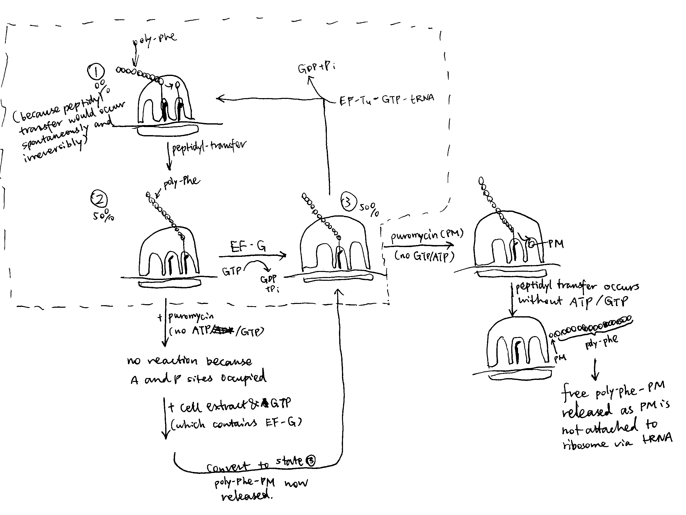
Figure 1: The puromycin experiment.
Summary
Mutagenesis and ribosome-targeting antibiotics are valuable tools for studying the mechanisms of protein synthesis in the ribosome. These methods are usually aided by cryo-EM and X-ray crystallography to probe into the 3D molecular details.
Mutations in tRNA, rRNA and associated proteins give information on their specific roles and behaviours during protein synthesis. Antibiotics with various (and usually predictable) chemical properties is another way of studying the mechanisms of protein synthesis. Apart from the puromycin (which targets the peptidyl transfer centre) mentioned in this essay, there is a wide range of antibiotics that target different steps of protein synthesis. For example, streptomycins interferes with the delivery of tRNAs to the A-site and neomycin hinders translocation following peptidyl transfer. High resolution crystal structures were obtained for many of these antibiotics in complex with the ribosome (or part of ribosome). These structures are indicative of functionally important sites in the ribosome and they often shed light on the mechanisms.
What are the roles of small nuclear RNAs (SnRNAs) in pre-mRNA splicing and what are the mechanisms that control alternative splicing?
Overview
RNA splicing by spliceosomes removes introns from nascent pre-mRNA and joins protein-coding exon sequences, which matures the mRNA and makes it ready for translation. By chosing variable splice sites, different mature mRNAs (and hence proteins) can be produced from the same pre-mRNA.
Structure of the Intron
Splice sites (i.e. exon-intron junctions) have conserved features. As shown in Figure 1, most introns have an invariant GU at the 5’ end (5’ splice site) and AG at the 3’ end (3’ splice site), their flanking sequences are variable but the bases are found at frequencies higher than expected based on a random distribution. The branch point A is also invariant, and most introns also have a polypyrimidine tract between the branch point and the 3’ splice site. These ‘standard’ pre-mRNAs are spliced by snRNPs U1, U2, U4, U5, and U6. A small fraction of pre-mRNA does not follow the ‘GU-AG’ rule and have 5’-AU and AC-3’ instead, which are spliced by four low-abundance snRNPs together with U5.
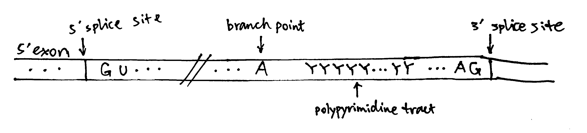
Figure 1: The structure of a typical intron
Spliceosome Assembly and the Splicing Process
The spliceosome is a large and dynamic RNP machine whose size is comparable to a ribosome. The 5 snRNPs that constitute the spliceosome are U1, U2, U4, U5, and U6, each of which is a association of an snRNA with proteins. The key catalytic activity is attributed to RNA, so the spliceosome is an ribozyme. A spliceosome is assembled whenever an intron is to be removed and its components are recycled after splicing. The series of events are shown in Figure 2.
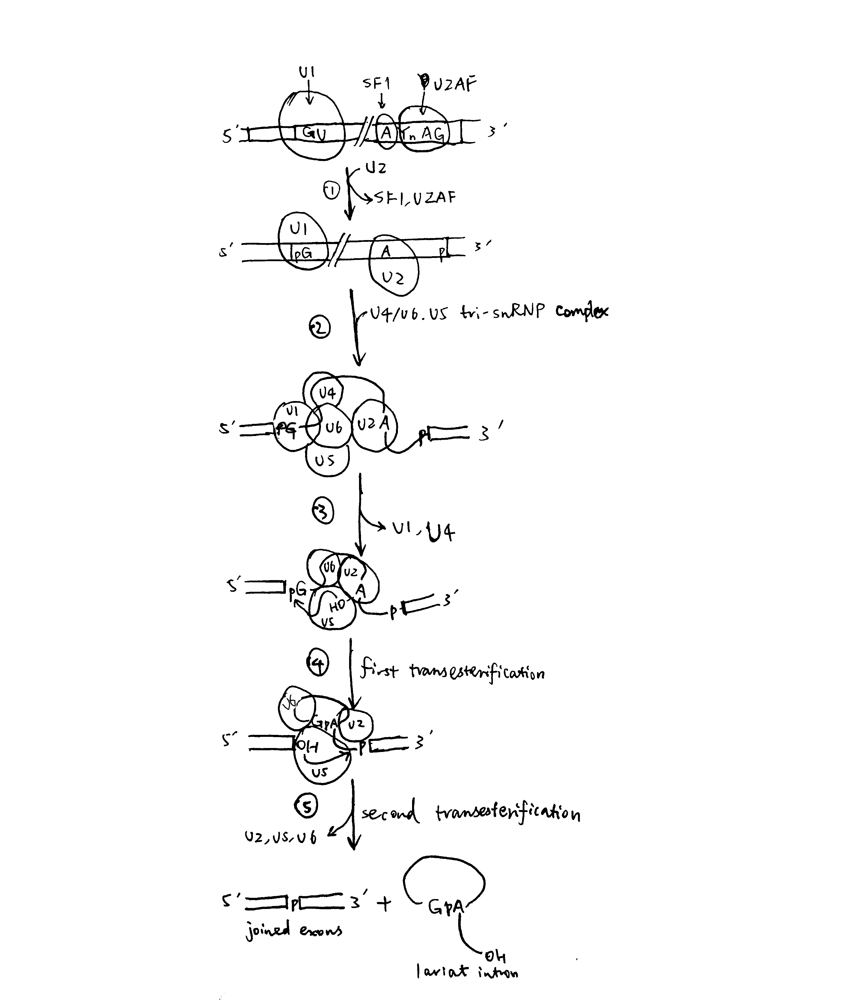
Figure 2: Spliceosome assembly and the splicing process
- U1 base-pairs with the 5’ splice site; SF1 (splicing factor 1) binds to the branch-point A; U2AF (U2 auxilliary factor) associates with the polypyrimidine tract and 3’ splice site. Then, U2 replaces SF1 and U2AF.
- The U4/U6.U5 tri-snRNP complex joins, forming the spliceosome
- Rearrangement of base-paring interactions leads to the catalytically active conformation. U6 dissociates from U4 and replaces U1. U4 is also released.
- The catalytic core of U6/U2 catalyses the first transesterification reaction (ligating 5’ guanosine to the 2’ OH of the branch point adenosine)
- Further rearrangements take place, and the second transesterification reaction occurs (joining the two exons)
The two sequential transesterification reactions per se do not require energy input, as there is no net bond breaking (two phosphodiester bonds are hydrolysed and another two are formed), but ATP/GTP hydrolysis is used to drive structural transitions and as a ‘proofreading’ mechanism.
As shown in Figure 3, In the catalitically active state, U6 partially base-pairs with U2 and U6 forms an internal stem loop structure with three nucleotides coordinated to two Mg2+ ions. Mg2+ ions stabilise the transitions states of the two transesterification reactions and thus achieve catalysis. The key bases coordinated to Mg2+ are confirmed by substitution of oxygen for sulfur atoms at various locations.
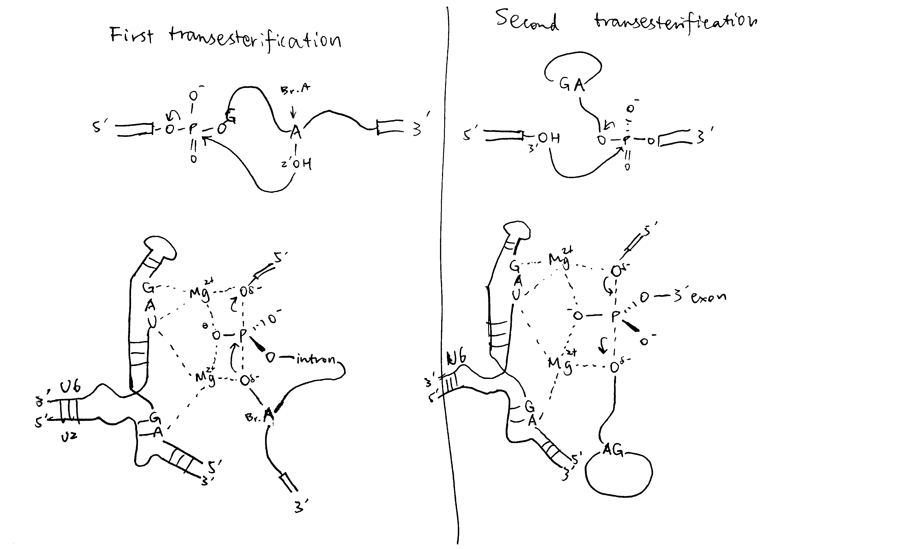
Figure 3: The transesterification reactions in detail
Alternative Splicing
pre-mRNAs contain cis-acting regulatory sequences (either splicing enhancers or silencers) to which splicing factors can bind and thus regulate splicing (Figure 4). RNA-RNA base pairing, which can occur either in cis or trans, can also specify splice site use.
RNA-binding proteins/RNPs that regulate splicing can be classified into 3 classes: the classical hnRNPs, serine-arginine repeat (SR) proteins, and tissue-specific RNA-binding proteins. Generally, hnRNPs inhibit splicing from nearby splice sites by interacting with splicing silencers while SR proteins promotes splicing by binding to enhancers.
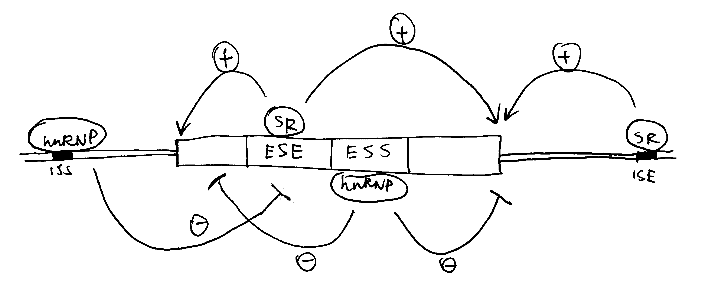
Figure 4: Splicing control by cis-regulatory sequences. ISE/ESE, intronic/exonic splicing enhancers; ISS/ESS, intronic/exonic splicing silencers.
RNA-RNA recognition can also control splice site choice, as exemplified by the exon 6 cluster of the Drosophila DSCAM gene, as shown in Figure 5.
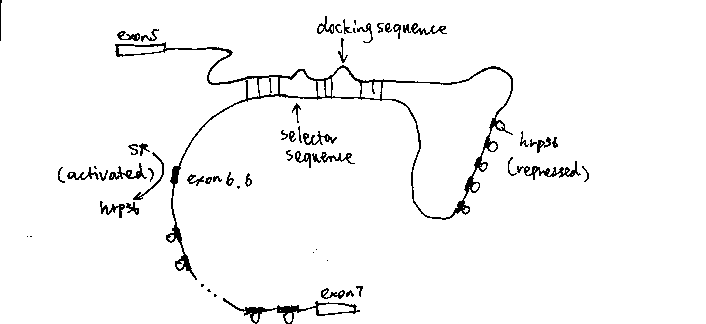
Figure 5: hrp36 binds to all axon6 variants and represses their inclusion in the mature mRNA. When the cis-acting RNA selector sequence upstream of a specific exon (in this case 6.6) pairs with the docking site, it results in activation of the exon immediately downstream.
SAQ
Write brief notes on the chemical shift, the nuclear Overhauser enhancement effect (NOE), the relaxation times T1 and T2, and the spin-spin coupling constant (J) with an emphasis on how these can provide information about the structure and dynamics of biological molecules.
- Chemical Shift: NMR applies RF wave to induce resonance with the precession frequency, \(\omega=\gamma (B_0-B_S)\), where \(B_0\) is the constant magnetic field strength on the \(z\) axis, \(B_S\) is the magnetic field strength shilded by electrons around the nucleus and \(\gamma\) is the magnetogyric ratio (depending of the identity of the nucleus). Nuclei in different chemical environment have different \(B_S\) and thus different \(\omega\), and the chemical shift, \(\delta\), is defined as \[\delta=\dfrac{\nu - \nu_\text{reference}}{\nu_\text{o}}\times10^6\] When a protein is folded, the chemical environment of protons is highly variable and the NMR signal is noisy and has many peaks. In contrast, when a protein is unfolded, the chemical shift tend to be less variable, and fewer peaks with greater intensities are observed.
- NOE: When two nuclei are close (< 5-6 angstroms) to each other, selective irradiation of one spin by \(B_1\) field causes intensity changes of the other spin. Two dimensional methods detect NOE more easily. NOE is the main source of information for macromolecular structure determination by NMR.
- T1 & T2 relaxation: The applied RF wave creates \(B_1\) field which transiently reorient the net magnetisation, \(M\). The decay rate of \(M_{xy}\propto\dfrac{1}{\text{T}_2}\); decay rate of \(M_z\propto\dfrac{1}{\text{T}_1}\). T1 relaxation is along the \(B_0\) field (longitudinal) and T2 relaxation is in the \(xy\) plane (transverse). Relaxation rates give information about molecular dynamics and distances. T2 can be measured from the decay rate of the FID and linewidths and T1 can be measured by an inversion-recovery experiment.
- Spin-spin coupling constant: The spin states of two protons on two covalently bonded atoms affect the nuclear energy levels of each other, so the peak split in a neighbour-dependent way (\(n\) adjacent protons give \(n+1\) multiplets). Coupling strength gives bond-angle information for biomolecules. For example, splitting of HN due to H\(^\alpha\) (\(^3J_{\text{NH}\alpha\text{CH}}\)) depends on \(\Phi\) angle.
Describe how NMR can be used to measure the pK values of ionizable groups in proteins. Why is chemical shift sensitive to ionization state? How can 31P NMR be used to measure intracellular pH? Over what pH range is this effective?
- The chemical shift a proton depends on its chemical environment, which includes the protonation state of adjacent acidic or basic sites. Therefore, gradual alteration of pH causes changes in the chemical shifts that can be plotted against pH. The p\(K_\text{a}\) is the pH that corresponds to the inflection point of the resulting sigmoidal curve.
- In vivo phosphate concentration is about constant. In pH range 5-8, the two dominant forms of phosphate, \(\text{H}_2\text{PO}_4^-\) and \(\text{HPO}_4^{2-}\) have different chemical shifts for 31P in NMR, so the chemical shift can be related to pH: at higher pH, the \(\text{HPO}_4^{2-}\) form is dominant, and its phosphate is more deshielded, leading to larger chemical shift
How does multidimensional NMR differ from basic 1-D NMR? What type of information is contained in the 2-D NMR experiments known as NOESY, TOCSY and HSQC?
As shown in Figure 1:
- The 1D spectrum is obtained by Fourier transformation of a single transient decaying signal. By collecting a series of transients separated by incrementing lengths of ‘evolution time’, \(t_1\), a 2D spectrum can be obtained. Similarly, 3D spectra are made with an additional period of ‘evolution time’, \(t_2\). Multidimensional NMR clearly shows connections (either J-coupling or NOE) between nuclei as ‘cross peaks’.
- COSY (correlated spectroscopy) spectra detect through-bond correlations (J-couplings)
- NOESY spectra has an extra 90\(^\circ\) pulse and a fixed delay, \(\tau_m\) inserted in the sequence and this allows detection of nuclear Overhauster effect (NOE).
- HSQC (heteronuclear single quantum coherence spectroscopy) gives a 2D spectrum with one axis for 1H and another for a heteroatom (usually 15N or 13C).
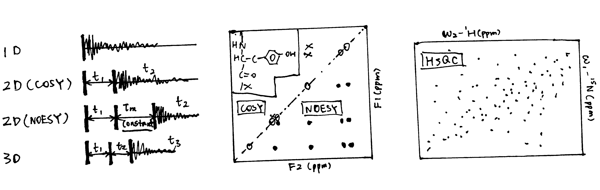
Figure 1: Schematic of 1D, 2D and 3D NMR, and sample
Outline the application of NMR spectroscopy to the determination of protein 3-D structure in solution. What are the advantages and disadvantages of this technique compared to X-ray crystallography?
- Application of NMR
- Experimental restraints: structure-related data derived from NMR spectra
- 1H-1H NOEs: each NOESY cross peak gives a specific pairwise distance information
- coupling constants \(J\) values can help to determine some dihedral angles
- chimical shifts: can be used to search in the database
- residual dipolar coupling: gives information about the direction of specific groups with respect to B0; gives long-range order information which complements the short-range information given by NOEs.
- solvent H-exchange: slow H-D exchange suggests that the proton is in a defined region of secondary structure
- Calculation of structures is done by incorporating various experimental restraints into a molecular dynamics (MD) simulation protocol. MD calculates position and velocity of atoms in a series of small steps using Newtonian mechanics. Extra energy terms are added to take account of observed constraints
- Experimental restraints: structure-related data derived from NMR spectra
- Compared to X-ray crystallography:
- Disadvantages:
- NMR is relatively laborious and slow
- restricted to small proteins
- Advantages:
- No need for crystallization; only a pure solution is needed. Can be used on proteins that do not crystallize (e.g. those containing intrinsically unstructured regions)
- can be used to study dynamics
- site-specific info on ligand binding
- Disadvantages:
Essay
Describe methods to monitor protein-folding pathways during the formation of a globular protein from an extended chain. Place particular emphasis on the role of NMR but also show how other methods provide complementary information.
NMR
Protein folding is a multistep process that proceeds through intermediate states and studying these intermediates is difficult due to their transient nature, low populations under non-denaturing conditions, and difficulty of their isolation.
Over the past two decades, many NMR methods have been developed and some became invaluable tools in studying molecular details of protein folding. Tansverse relaxation optimized spectroscopy (TROSY) is the first method developed for probing of dynamics and interactions of large (up to 1MDa) protein assemblies. Relaxation dispersion (RD) and saturation transfer (ST) methods provide a detailed look into the pathways of biomolecular processes, allowing studies of transient intermediates during protein folding.
RD and ST methods allow studying the minor nonnative conformations during protein folding with short lifespans (often \(\mu\)s-ms). The two major types of RD experiments include (1) Carr-Purcell-Meiboom-Gill (CPMG) methods that exploit modulation of Rex by a sequence of evenly spaced refocusing pulses, and (2) rotating frame \(\text{R}_{1\rho}\) relaxation experiments that use modulation of Rex by an on- or off-resonance continuous wave (CW) RF field. The ST experiments exploit modulation of Rex by a weak RF field, and are conceptually similar to off-resonance \(\text{R}_{1\rho}\) measurements. Transient nonnative protein states can be studied by other NMR experiments, such as paramagnetic relaxation enhancement.
Dynamics of protein folding, on the time scale of seconds, can be studied by other methods. Changes in NMR spectra can be monitored in real-time. Logitudinal magnetization (ZZ) exchange experiments can probe interconversions between states with comparable populations. Hydrogen exchange measurements detect evanescent populations of disordered nonnative states transiently sampled by proteins under native-like conditions.
Other Methods
There are some methods that can assess the extent of folding qualitatively, but they do not give as much quantitative information as NMR does.
CD (Circular Dichroism)
Plane-polarized light is the sum of two circularly polarized beams, L and R, which are rotating in opposite directions. CD arises from differential absorption of L and R component beams in a smaple of chiral molecules. CD is detected by a double beam instrument with separate L and R paths (which are usually produced by high frequency modulation of a photoelastic modulator (PEM) device). The high intensity light source is produced by synchrotron.
The CD spectrum shows the variation of \(\Delta\epsilon\) (difference between the extinction coefficient of the L and R beams) with wavelength (\(\lambda\)). Because of the chiral nature of amino acids (except glycine), peptides are optically active. The CD spectra in the 170-250 nm region are distinct for proteins with different structure. Standard curves for different secondary structures (\(\alpha\)-helix, \(\beta\)-sheet, \(\beta\)-turn, and random coil) are available (Figure 2) and the proportion of different secondary structures of a protein is calculated by linear combination of the standard curves.
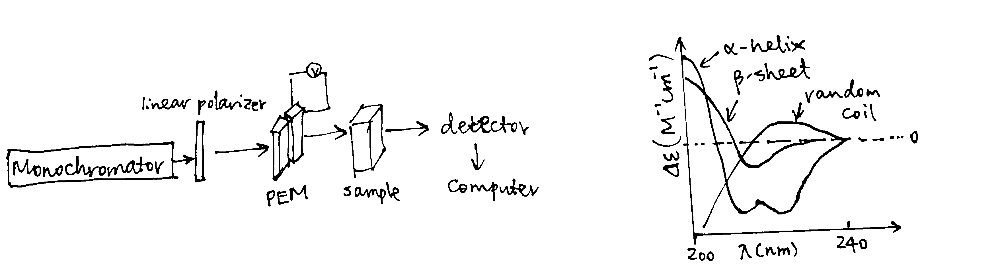
Figure 2: CD components and standard curves
DSC (Differential Scanning Calorimetry)
DSC determines the heat capacity (the difference between the heat capacity in the sample cell and in the reference cell), Cp, of a molecule in aqueous solution, as a function of temperature. This is done by increasing cell temperatures while keeping the two cells at the same temperature and recording the power supply throughout the experiment. The variation of \(C_\text{p}\) with temperature is plotted. On such a curve, there is a peak if the sample molecule undergoes state changes within the temperature (Figure 3). For a protein, the peak corresponds to the melting temperature, \(T_\text{m}\), which occurs when the concentrations of its native state ([N]) and the denatured state ([D]) are equal. Stabilization of protein, for example by altering the pH and forming complexes, increases \(T_\text{m}\)
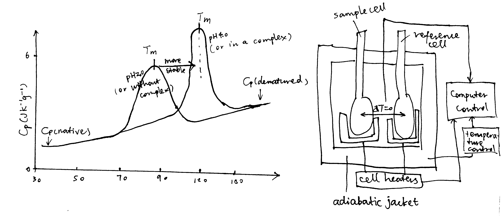
Figure 3: Principles of DSC
References
Campbell, Iain D. 2012. Biophysical Techniques. Oxford University Press.
Zhuravleva, Anastasia, and Dmitry M. Korzhnev. 2017. “Protein Folding by Nmr.” Progress in Nuclear Magnetic Resonance Spectroscopy 100: 52–77. https://doi.org/https://doi.org/10.1016/j.pnmrs.2016.10.002.
You have expressed and purified a protein in a recombinant system. How would you confirm that the protein was the one expected from the DNA sequence. (ESI-MS) How would you determine that the protein was folded and its solution behaviour. (CD, Thermofluor, Intrinsic fluorescence, DSC, SEC MALS, AUC, DLS) How can we quantify the binding between two macromolecules? Discuss how you could use the following techniques to determine a KD for an interaction? What are their limitations in practice? What would decide which techniques you could apply to an interaction? (Surface Plasmon resonance, Fluorimetry/Fluorescence anisotropy, Microscale thermophoresis (MST), Isothermal titration calorimetry (ITC), Stopped flow, NMR, AUC) References: Use Campbell's Biophysical Techniques; for MST use Wienken et al 2010 Nature Communications 10.1038/ncomms1093
1 Confirmation of DNA Sequence
1.1 ESI-MS (Electrospray Ionization Mass Spectrometry)
In mass spectrometry, the analytes are first ionised in vacuum and these charged molecules are passed into a electric/magnetic field, and their path through the field can be used to deduce their mass/charge (m/z) ratio (using deflection, TOF, quadrupole, or other analyzers).
Traditional ionisation methods were not suitable for biological macromolecules because the need for heating (or other treatment) to achieve gas phase would cause rapid decomposition of the molecules. Later, MALDI (matrix-assisted laser desorption/ionisation) and ESI (Electrospray Ionization) techniques were deveoped and they are suitable for this purpose. In MALDI, proteins are placed in a light-absorbing matrix, then ionisation and desorption is triggered by a short pulse of laser light. In ESI, a solution of analytes is passed through a charged needle kept at a high electrical potential, dispersing the solution into a microdroplets. The solvent around macromolecules rapidly evaporates, leaving charged molecules in gas phase. ESI can directly accept inputs from many other purification methods such as SDS-PAGE and chromatography and in addition it is good for detecting native states and different conformations.
The sequence of a protein is often too long to be obtained by MS at one time, so protease can be used to break peptides into small fragments which are sequenced individually. In addition, tandem MS (MS/MS) is can be used, in which one peptide is first analysed by one mass analyzer (MS1), and then further fragmented by a ‘collision gas’ such as He and Ar, and the m/z ratios of these fragments are analysed by MS2. This produces a spectrum with many peaks (greater m/z correspond to longer fragments), and the successive peaks differ by the m/z of a particular amino acid in the original peptide. This information can be used to deduce the original sequence.
2 Assess Protein Folding and Solubility
2.1 CD (Circular Dichroism)
Plane-polarized light is the sum of two circularly polarized beams, L and R, which are rotating in opposite directions. CD arises from differential absorption of L and R component beams in a smaple of chiral molecules.
CD is detected by a double beam instrument with separate L and R paths (which are usually produced by high frequency modulation of a photoelastic modulator (PEM) device). The high intensity light source is produced by synchrotron.
The CD spectrum shows the variation of \(\Delta\epsilon\) (difference between the extinction coefficient of the L and R beams) with wavelength (\(\lambda\)).
Because of the chiral nature of amino acids (except glycine), peptides are optically active. The CD spectra in the 170-250 nm region are distinct for proteins with different structure. Standard curves for different secondary structures (\(\alpha\)-helix, \(\beta\)-sheet, \(\beta\)-turn, and random coil) are available (Figure 2.1) and the proportion of different secondary structures of a protein is calculated by linear combination of the standard curves.
Figure 2.1: CD components and standard curves
2.2 DSC (Differential Scanning Calorimetry)
DSC determines the heat capacity (the difference between the heat capacity in the sample cell and in the reference cell), Cp, of a molecule in aqueous solution, as a function of temperature. This is done by increasing cell temperatures while keeping the two cells at the same temperature and recording the power supply throughout the experiment. The variation of \(C_\text{p}\) with temperature is plotted. On such a curve, there is a peak if the sample molecule undergoes state changes within the temperature (Figure 2.2). For a protein, the peak corresponds to the melting temperature, \(T_\text{m}\), which occurs when the concentrations of its native state ([N]) and the denatured state ([D]) are equal. Stabilization of protein, for example by altering the pH and forming complexes, increases \(T_\text{m}\)
Figure 2.2: Principles of DSC
2.3 DLS (Dynamic Light Scattering)
Random motion of macromolecules in a suspension causes fluctuations in local concentration and thus local variarions in refractive index and intensity of the scattered light. These time-dependent fluctuations can be analyzed by a coherent laser source. The observed fluctuations give rise to diffusion coefficients, \(D\), which is related to the size of the molecules (large particles diffuse more slowly). DSL can measure polydispersity and the presence of aggregates in protein samples.
2.4 AUC (Analytical Ultracentrifuge)
An AUC is a specialised ultracentrifuge equipped with absorbance and interference detection systems. Each cell contains a sample meniscus and a reference cavity, allowing the absorbance of the solvent to be corrected.
Two types of experiments are typically performed by AUC: sedimentation velocity and sedimentation equilibrium. Sedimentation velocity is performed at high speed, which depletes particles from the centrifuge cell and creates a pellet at the bottom of the cell. It can give information on molecular shape, mass, and interactions with themselves and with other components.
Sedimentation equilibrium is perfomed at low speed and does not create a pellet, and the sedimentation of molecules down the centrifuge cell is balanced by their diffusion back up the cell. The main application of sedimentation equilibrium is the detection of complexes and self-association and the quantification of binding between species
3 Determining Kd
3.1 Fluorimetry/Fluorescence anisotropy
If fluorophores are excited with plane polarized light and the fluorescence is observed through analyzing polarizers, the fluorescence is also polarised.
The fluorescence anisotropy is defined as \(A=\dfrac{I_\parallel - I_\bot}{I_\parallel+2_{\bot}}\), where \(I_\parallel\) and \(I_{\bot}\) are the fluorescence intensities polarised parallel and perpendicular to the direction of the excitation beam. \(A\) is a direct measure of the molecular rotation in solution and can be used to study complex formation, as a macromolecule will rotate more slowly when it is in a complex thatn when it is alone.
3.2 Surface Plasmon resonance
Surface plasmon resonance (SPR) is used for measuring molecular interactions between a pair of molecules.
A surface plasmon is an electron oscillation generated at a surface interface between a metal and a dielectric. A plasmon resonance occurs when EM wave in visible light couples optimally with the oscillating electrons in the metal, and this results in a maximal reduction in the reflected light intensity. The resonance angle, \(\theta_\text{spr}\), is found by changing the angle of incidence of the light beam, giving a dip in a plot of intensity against angle. \(\Delta\theta_\text{spr}\) is sensitive to changes in the refractive index of the medium near the metal surface and this is a measure of the mass change at the sensor surface (in the evanescent region).
In an SPR experiment, one type of ligand is immobilised at the sensor surface, and a the analyte is passed through the cell. If the ligand binds to any binding partner in the analyte, \(\Delta\theta_\text{spr}\) would increase. Then, non-specific binding is washed off by buffer, and \(\Delta\theta_\text{spr}\) would decrease and \(\Delta\theta_\text{spr}\) due to specific binding can be found. Finally, regeneration solution is applied to remove all binding and reset \(\Delta\theta_\text{spr}\) to zero. (Figure 3.1)
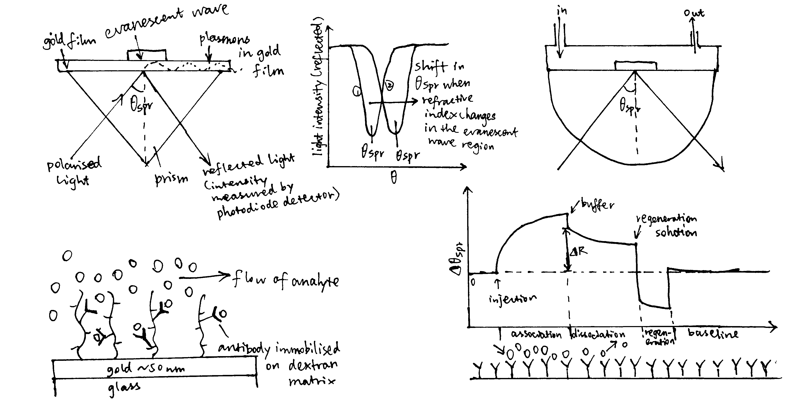
Figure 3.1: Principles of SPR
SPR can be used to determine \(K_d\) of complex formation, which equals \(\dfrac{k_{-1}}{k_1}\) where \(k_1\) is the rate of association and \(k_{-1}\) is the rate of dissociation. \(k_1\) and \(k_{-1}\) can be deduced from the plot.
3.3 Isothermal titration calorimetry (ITC)
ITC measures heat changes when a complex is formed at constant temperature.
In ITC, an insulated reaction cell containing protein is kept at a temperature (usually 8\(^\circ\text{C}\) above the environment) which is equal to the temperature of a reference cell, and the reference cell is kept at a constant temperature by a thermostat. Then, increasing amounts of ligand is added into the chamber, and they form complexes with the protein, which can be exothermic or endothermic. The heat change is compensated by a power supply, which can be converted to \(\Delta H\) of the reaction. As more ligands are added, proteins become saturated and \(\Delta H\) approaches zero. The raw data obtained (power supplied to compensate the heat change caused by each addition of ligands) can be integrated and corrected to give a plot of \(\Delta H\) against the molar ratio of the ligand and the protein, and \(\Delta H\), Kd and stoichiometry can be inferred from the curve. Subsequently, \(\Delta G\) and \(\Delta S\) can also be calculated (Figure 3.2).
Figure 3.2: ITC data manipulation
3.4 MST (Microscale Thermophoresis)
MST is a relatively new method for analysing interactions of proteins or small molecules in complex bioliquids such as blood serum or cell lysate. The technique depends on the phenomenon that molecules move within temperature gradients (thermophoresis).
The instrument uses an IR laser to create a temperature gradient, and the movement of the molecules within this gradient is monitored by fluoresence. The fluoresence can either be intrinsic (due to tryptophan) or extrinsic (attached dye or fluorescent protein).
Compared with traditional methods for studying protein interactions, MST has several advantages:
- A minuscule amount of sample (a few \(\mu\)l) is needed,
- no limitations on size and affinity
- no limitations on buffer; tolerates impurity; can be used in in complex bioliquids such as blood serum or cell lysate
- no need for immobilization
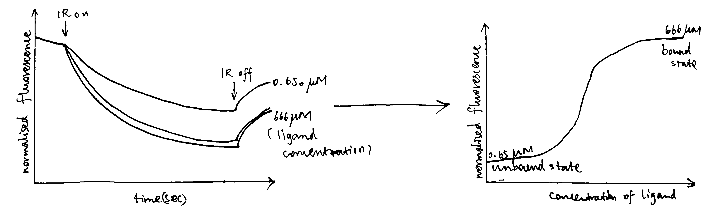
Figure 3.3: Sample data produced by MST
References
Wienken, Christoph J., Philipp Baaske, Ulrich Rothbauer, Dieter Braun, and Stefan Duhr. 2010. “Protein-Binding Assays in Biological Liquids Using Microscale Thermophoresis.” Nature Communications 1 (1): 100. https://doi.org/10.1038/ncomms1093.
Alzheimer’s Disease
Effect of AMPK on secreted A\(\beta\) levels in neuronal cultures
- In ELISA (enzyme-linked immunosorbant assay), antibodies are used to bind an antigen of interest (usually protein) with high specificity, and the presence and concentration of the antigen is reported by the extent of reaction of the enzyme conjugated with the antibody. Using two types of antibodies binding to different regions of the antigen allows sandwich ELISA (see below), which has greater specificity. Horseradish peroxidase converts its substrate to a coloured product, and the intensity of the colour, which is related to the concentration of A\(\beta\) peptide (the antigen), can be measured by a spectrophotometer as absorbance of EM wave at a certain visible wavelength (the relationship is not always linear so a calibration is needed).
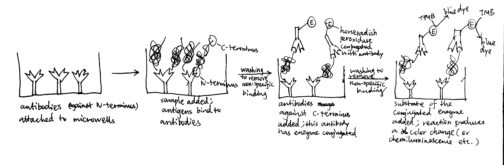
- By plotting ‘measured value’ against the number of dilution (the power to which \(\frac{1}{2}\) is raised), it can be shown that the realtionship between them is roughly linear when measured value is around 100.
standard <- c(206, 215, 201, 199, 205, 197, 199, 202, 190, 120, 67, 41, 27, 13, 8, 8)
untreated <- c(211, 197, 200, 202, 198, 195, 197, 164, 88, 47, 27, 15, 6, 9, 7, 7)
AICAR <- c(207, 202, 205, 199, 189, 200, 183, 101, 58, 30, 18, 12, 7, 7, 8, 6)
pow <- 0:15
df <- tibble(pow, standard, untreated, AICAR)
df %>% gather(standard, untreated, AICAR, key = 'treatment', value = 'measured value') %>%
ggplot(aes(pow, `measured value`, color = treatment, shape = treatment, linetype=treatment))+
geom_point()+xlab('number of dilution (i.e. number of times the concentration is halved)')+
geom_smooth(se=FALSE, method='loess', span=0.4, size=0.5)+
geom_hline(yintercept = 100)+
scale_x_continuous(breaks = 0:15)## `geom_smooth()` using formula 'y ~ x'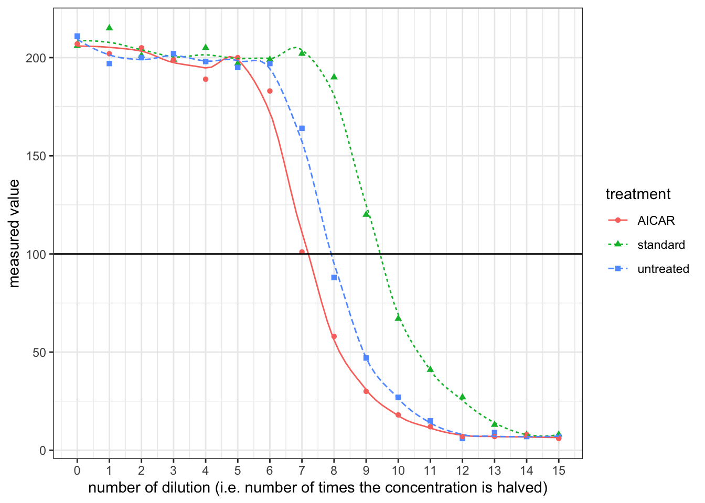
Reading off from the plot:
- for the standard solution, a \(\dfrac{1}{2^{9.5}}\) dilution corresponds to 100 units. Thus, 100 units correspond to \(10\times \dfrac{1}{2^{9.5}}=0.01381\text{ ng/ml}\)
- for the untreated sample, a \(\dfrac{1}{2^{7.9}}\) dilution corresponds to 100 units, or \(0.0138\text{ ng/ml}\), so the undiluted sample has a A\(\beta\) concentration of \(0.01381\times2^{7.9}=3.299\text{ ng/ml}\). The volume of 106 cells is 100\(\mu\)l, so the level of secretion is \(3.299\times0.100\times 1000=329\text{ pg/10}^6\text{ cells/day}\)
- for the sample with AICAR, the undiluted sample has a A\(\beta\) concentration of \(0.01381\times2^{7.2}=2.031\text{ ng/ml}\). The level of secretion is \(2.031\times0.100\times 1000=203\text{ pg/10}^6\text{ cells/day}\)
- Upon activation by AICAR, AMPK reduces secretion of A\(\beta\)
Effect of added A\(\beta\) on AMPK activity
Triton X-100 is a detegent, disrupting the cell membrane and lysing the cell; PMSF inhibits serine proteases, preventing degradation of target protein; protein A, which is immobilised on sepharose, binds specifically to the Fc region of anti-AMPK antibody
This ensures that all measured enzymatic activity is due to AMPK but not other kinases that would be present in the whole cell extract.
- Substituting \(t_{\frac{1}{2}}=14\text{ days}\) and \(t = 14\) into \(A=A_0e^{-kt}=A_0e^{-\dfrac{\ln{2}t}{t_{\frac{1}{2}}}}=A_0\times(2)^{-\dfrac{t}{t_{\frac{1}{2}}}}\), \(A=A_0\times(2)^{-\frac{9}{14}}=0.6404A_0\), i.e. \(A_0=1.5614A\), where \(A_0\) is the original activity and \(A\) is the activity after 9 days. \[\begin{aligned}A_0 \text{ cpm}\div80\%\div(2.2\times10^{12})\text{ cpm/Ci}\div(0.5\times10^{-3})\text{ Ci/nmol}\div(50\times10^{-3}\text{ mg cell protein})\div20\text{ min}\div\frac{50}{50+5+5}\\=x \text{ nmol substrate phosphorylated/min/mg cell protein}\end{aligned}\] where x is the final answer. This simplifies to \[x=1.3636\times10^{-9}A_0=2.129\times10^{-9}A\]
- Activity (+A\(\beta\)): \(2.129\times10^{-9}\times(11800-278)=2.45\times10^{-5} \text{ nmol substrate phosphorylated/min/mg cell protein}\)
- Activity (no A\(\beta\)): \(2.129\times10^{-9}\times(2940-278)=5.67\times10^{-6} \text{ nmol substrate phosphorylated/min/mg cell protein}\)
AMPK activity increases as A\(\beta\) is added, and AMPK may help to degrade A\(\beta\) according to (c).
Association of \(\tau\) protein with microtubules
- tau alone is soluble and exists solely in the supernatant. Unphosphorylated tau binds to microtubules strongly and exists entirely in the pallet (insoluble). Phosphorylated tau has less affinity to microtubules and most of them are found in the supernatant.
Phosphorylation sites on tau
- Induce mutations on different positions and observe their effect on phosphorylation. The mutated position(s) can be determined by DNA sequencing and the effect of phosphorylation can be determined by isoelectric focusing (phosphorylated protein has a more negative charge).
- Fragment the protein and test each piece for phosphorylation.
- These phosphorylation sites are all located on the MT binding domain (235-368) and thus phosphorylation can directly (at least sterically) hinder binding to MT. In addition, MT binding domain contains many postively charged lysine (K) residues and few negatively charged (D and E) residues. This suggest that the binding between tau and MT is electrostatic (+ve on tau, -ve on MT). Phosphorylation adds -ve charge on tau and thus hinders electrostatic binding.
Notch Receptor
The primer sequences are:
forward primer 5' GGATCC CAGGACGTGGATGAGTGCTCGCTGGG 3' # 33 nt reverse primer 5' GGATCC TCA CTGGCACAGATGCCCAGTGAAGCCC 3' # 34 ntTo produce a standalone peptide, a start codon (ATG) and a stop codon (TGG) is needed. The stop codon is included in the reverse primer (
5'TCA3'which correspond to5'TGA3'in the forward direction). The start codon is defined in the plasmid and sets the reading frame. The restriction site chosen must ensure correct reading frame alignment of the gene of interest, and Bam HI does this job (while some others, such as Sal I, does not), so I chose it, and its sequence,GGATCC, is included at the 5’ end of both primers 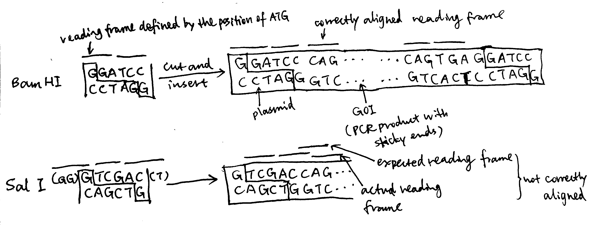 Regarding restriction sites, Pst I and Sph I must not be chosen because they are contained within the gene of interest and applying these restriction enzymes will break the gene. The remaining part of the primer corresponds to the gene of interest, and the 3’ ends are chosen to include 3-4 consecutive G/C to ensure high annealing stability, facilitating DNA polymerase binding.Bam HI is applied both to the plasmid and the PCR product, creating sticky ends and allowing them to join. The resulting set of plasmids (some are recombinant and some are not) are transformed into bacteria by heat shock (by disrupting the cell membrane using CaCl2 and exposing cells to thermal imbalance) or electroporation (by using short pulses of high-voltage electric currents). Ampicilin is added to kill cells without gaining the plasmid, and after that, usually (when a lacZ\(\alpha\) gene is incorporated into the cloning site in the reverse direction) X-gal is used to test whether the cells with plasmids contains the gene of interest (blue-white screening). 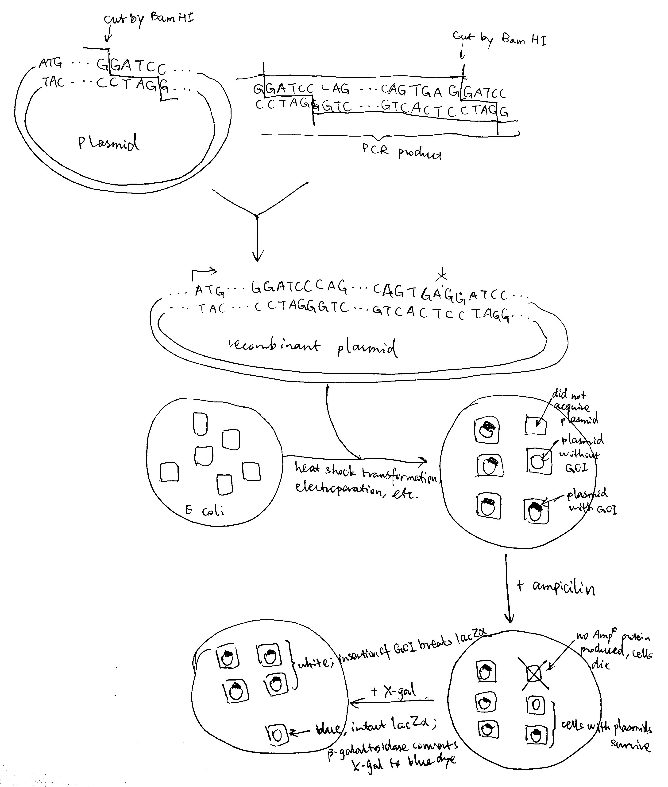
As illustrated in the plasmid map, the expression of inserted gene is controlled by the Lac operator. When uninduced, lac repressor protein due to LacI expression binds to Lac operator, preventing expression of inserted gene. IPTG can be used to induce expression. IPTG is an analogue of lactose, which activates Lac inducible operon by deactivating the lac repressor. IPTG is not metabolised by E. coli so it can be maintained at a constant concentration.
The protein product contains N-terminal hexahistidine tag which binds to Nickle ions with high affinity. Affinity chromatography using nickle-bound resin can be used to purify the protein. After that, size-exclusion chromatography may also be done to remove any possible aggregates of this peptide or complexes of this peptide with other species.
Run a SDS-PAGE, stain with Commassie blue and there should be only one band.
This extracellular protein is likely to contain disulfide bridges, which would not form in the normal reducing intracellular environment of bacteria. Some strains of E. coli, such as Origami, have mutant thioredoxin reductase and/or glutathione reductase an thus have a oxidising cytoplasm, and they can be used to express proteins with disulfide bridges.
- From the blot developed with biotin binding protein, A alone produce a band while B or C alone does not. This indicates that A must be a potential ligand (because it, being alone and biotin-tagged, is pulled down by biotin-binding Streptavidin).
- From the blot developed with His tag binding antibody, only A+B produces a band. As A is the potential ligand, B must be Notch that is pulled down along with A. C must not be Notch because A+C does not produce a band, so C is another potential ligand.
- C alone does not produce a band in the biotin-specific blot possibly because the biotin tag possibly because C’s tertiary structure prevents biotin binding
The potential ligand A binds to Notch (B), so A+B produces a band on the His-specific blot. It is uncertain whether A interacts with C. A and C are both potential ligands and will not produce a band on the His-specific blot. A+C produces a band on the biotin-specific blot and this may be solely due to A (which itself alone produces the band). A might bind to C without making C’s biotin available for binding, or A might not bind to C, or A might bind to C, making its own biotin unavailable and C’s biotin available, so that a band with equal thickness is produced.
- Fluoresence resonance energy transfer (FRET), in which the potential ligand and Notch are each tagged with a fluorophore, where one type of fluorophore, when excited, can transfer energy to the other type of fluorophore through nonradiative dipole-dipole coupling and hence induce fluorescence of the acceptor fluorophore. The energy transfer is only possible when two fluorophores are very close to each other (when their associated proteins are bound to each other). If excitation of the donor fluorophore results in emission from the acceptor fluorophore, it indicates complex formation.
- As shown in Figure 1, surface plasmon resonance can also be used to monitor complex formation.
- MST (Microscale Thermophoresis) allows detection of complex formation in complex bioliquids such as blood serum or cell lysate.
Figure 1: Principles of SPR
Compound A
Toa1 decreases generation time and decreases lifespan.
No effect on both.
As a control group.
DMSO reduces lifespan.
Regarding lifespan in DMSO, when either Toa1 or Abp1 (or both) is absent, lifespan is unresponsive to compound A. Among these three conditions, when Toa1 is present and Abp1 is absent, lifespan is constantly short; when Toa is absent, lifespan is constantly long. This suggest that Toa1 reduces lifespan, and Abp1 itself has no effect on the lifespan when Toa1 is absent. When both proteins are present, lifespan increases with concentration of A and then decreases. This suggest that, at low concentrations of A, Abp1 binds to A, and the binding of Toa1 to Abp1-A complex reduces Toa1’s ability to shorten lifespan. At high concentrations of A, Abp1 becomes less effective in deactivating Toa1, possibly because Abp1 forms aggregates.
Mutation of ATG8 always leads to short lifespan and generation time, and mutation of SCH9 always leads to increased lifespan and generation time, regardless of the conditions of ABP1 and TOA1, and they all made the lifespan insensitive to the concentration of compound A. When mutations of ATG8 and SCH9 occur simutaneously, the effect of ATG8 loss dominates and results in short lifespan & generation time. Therefore, SCH9 may reduce lifespan and generation time and ATG8 opposes SCH9’s activity. This explains \(sch9\Delta\), \(atg8\Delta\) and \(sch9\Delta atg8\Delta\). In addition, Toa1’s ability to reduce lifespan is dependent on SCH9. In \(sch9\Delta abp1\Delta\) and \(sch9\Delta toa1\Delta\), the life-span reduction cannot be done without SCH9. In \(abp1\Delta atg8\Delta\), lifespan reduction is caused by Toa1+SCH9 and in \(toa1\Delta atg8\Delta\) caused by SCH9, and no ATG8 was present to oppose this effect.
In the western blot data, for Sch9 5SA, the purpose of changing serine to alanine is usually to test for phosphorylation, and in this case the band is shorter than WT, indicating there is phosphorylation on Sch9. Also Sch9 5SA band is similar in length to \(toa1\Delta\), which implies that toa1 loss has an similar effect to making Sch9 unavailable for phosphorylation. Thus Toa1 may phosphorylate Sch9, and this is in accordance with an observation in (f): ‘toa1’s ability to reduce lifespan is dependent on sch9’. Sch9 5SA with phosphatase further reduces the signal, and this indicates that Sch9 has other phosphorylation sites (apart from the site where 5 S was changed to A i.e. target of toa1) being phosphorylated.
WT + compound A produced a low signal comparable to the WT + phosphate band. Thus compound A may hamper phosphorylation of Sch9 (by directly hindering phosphorylation, or acting as a phosphatase). As toa1 is ‘target of A’ and toa1 is the kinase that phosphorylates Sch9, compound A is very likely to inhibit toa1.
see Figure (g)
- Purify the proteins and study their interactions in vitro.
- to confirm phosphorylation of Sch9 by Toa1: mix Sch9, Toa1 and ATP (control group: Sch9 and ATP only) and run isoelectric focusing (phosphorylated Sch9 has a more negative charge)
- to confirm the role of compound A: mix compound A, Sch9, Toa1 and ATP (control group: buffer+Sch9+Toa1+ATP) and run isoelectric focusing.
In strains with Sch92D3E but not WT Sch9, the lifespan is constantly reduced and this effect is unaffected by compound A.
See Figure 2.
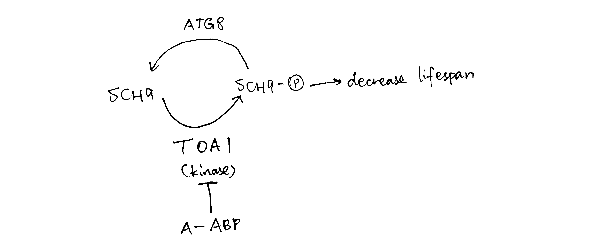
Figure 2: When compound A concentration increases, TOA is is inhibited and less Sch9 is phosphorylated, so there is less lifespan-reduction effect due to phosphorylated Sch9, and hence the lifespan increases. When the concentration of A gets too high, however, ATG8 phosphatase is expressed to dephosphorylate Sch9 and thus decrease lifespan.
You want to over-express a protein secreted by the malarial parasite. It is cysteine-rich and has no known structure. Outline an expression and purification strategy, using both traditional and high-throughput methods, to produce a sample suitable for protein crystallography. Include a description of how you would assess the quality of the purified protein. OR What strategies could you employ during protein expression and purification to minimise heterogeneity in a sample required for structural studies?
Title
You want to over-express a protein secreted by the malarial parasite. It is cysteine-rich and has no known structure. Outline an expression and purification strategy, using both traditional and high-throughput methods, to produce a sample suitable for protein crystallography. Include a description of how you would assess the quality of the purified protein.
1 Overview
The general workflow for obtaining a sample of (malarial) protein is summarised as follows:
- Identifying and amplifying the gene of interest (GOI)
- Constructing the vector
- Transformation/transfection of host cells
- Screening for the most viable (high yield and solubility) transformants
- Extracting and purifying proteins
For crystallography studies, a protein sample with high purity, solubility and yield must be obtained. The expression and purification strategies depend on the characteristics of the protein of interest, such as size, shape, intrinsic solubility, requirement of post-translational modifications and/or cofactors, presence of disulfide bridges, in vitro stability.
2 Protein Expression
2.1 Identifying and amplifying the gene
If the coding sequence of the protein is unknown but the protein is purified, mass spectrometry (or chemical methods such as Edman degradation) can be used to determine the amino acid sequence of the protein, which can then be used to search for the the corresponding DNA sequence.
Usually, instead of using the full DNA sequence, cDNA is used in cloning because it does not contain introns. cDNA is made by:
- extracting total RNA from cells by TRIzol and then isolate the mature mRNA by affinity chromatography (with poly-T coated resins which binds to poly-A tails of mature mRNA)
- reverse transcription of the template DNA strand by viral reverse transcriptase (RT) followed by RNA degradation (often by the RNAse H activity of RT)
- synthesis of the coding strand by DNA polymerase
Often, the latter two steps are done repeatedly in RT-PCR to amplify the DNA fragment, if the sequence of the GOI is known and specific1 primers are designed. The primers include additional restriction enzyme cleavage sites for the convinience of traditional ligation-dependent cloning, or other sequences for ligation-independent cloning (see Section 2.3).
If the protein is already known to have a match in malarial cDNA library, we can skip most of the above steps and PCR-amplify the cDNA of interest from the library directly.
When we know the sequence of GOI, we can do a BLAST to find possible homologous proteins, and study any relavant scientific literature. The structure of some homologous proteins might have been solved previously and we can refer to their expression and purification strategies, which might prevent some waste of time on trial-and-errors. Bioinformatic analyses, such as disorder prediction using the RONN algorithm and generation of 3D homology models using the Phyre2 server, might also be helpful.
Codon optimisation might also be needed. Codon usage can vary significantly between species as well as between genome types such as nuclear DNA and mitochondrial DNA. For example, the frequencies of codons AGG, AGA, and CGA (which code for arginine) in H. sapiens are 11.4, 11.5 and 6.3, respectively, while the corresponding frequencies in E. coli are 1.2, 2.1 and 3.6. Codons that occur in high frequency in Plasmodium but in low frequencies in E. coli would result in a condition where the pool of tRNA for that codon will be so low as to become depleted. When the rare tRNAs are depleted to produce the recombinant protein, proliferation of the host cells is restricted, leading to low yield. This problem may be partially solved by the use of an inducible expression vector (e.g. IPTG), but when the foreign gene contains a large number of rare codons, this is not enough. There are two further approaches to improve the yield. First, the rare codons in the foreign genes can be substituted with prevalent codons, but this is not always reliable. Second, host cells can be transformed with the genes that code for the rare tRNAs. This approach is reliable and several such cell lines are commercially available. Custom host cells can also be made using plasmids.
We might fail in crystallising the single full-length protein (often because of low solubility). In that case, we can try co-expressing another protein or add an appropriate cofactor and crystallising the resulting complex. If this still fails, we might consider truncating the GOI, e.g. removing a very hydrophobic region that results in low solubility. In high-throughput approaches, such as the pipeline adopted by Oxford Protein Production Facility (OPPF), many variants are constructed in parallel to maximise output.
2.2 Choosing the host organism and the vector
2.2.1 Bacteria and plasmid vectors
Typically and traditionally, the gene of interest (GOI) is incorporated into a plasmid vector via a ligation-dependent mechanism, then the plasmid is introduced into bacterial (E. coli) cells for expression. There are also ligation-independent methods for making vectors, which is more robust and easy to use (only need to design one ‘adaptor’ parts of the primers once), making it suitable for high-throughput methods.
Bacteria-based protein expression is time- and cost-efficient, but it has two major limitations:
- the insertion size of a plasmid is small, typically 2-10 kb (bacterial artificial chromosomes (BAC) with greater insertion sizes can be used, but the procedures are more complex)
- Bacteria might be unable provide the appropriate protein folding environment (including chaperones) and/or post-translational modifications that can be crucial to protein’s functions.
Given the protein of interest is cysteine-rich, it is susceptible that disulfide bridges are present if this protein is also extracellular. The normal intracellular reducing environment disfavours disulfide bridge formation, but Origami and related strains have an oxidising intracellular environment due to mutant thioredoxin reductase and glutathione reductase, and they are used to express proteins that require disulfide bonds to achieve their correctly-folded conformation.
The plasmid should contain selectable markers for easy identification of successful transformants. The combination of AmpR and lacZ\(\alpha\) is a common choice, as explained in Figure 2.1.
In addition, the promoter should be strong and tightly regulated with minimum or complete lack of basal level transcription under uninduced conditions. The IPTG inducible T7 promoter system (as in pET plasmid) is one of the common choices. IPTG is an analog of allolactose, which can bind to and silence lac inhibitor, de-inhibiting the lac operator. IPTG is not digested by the bacteria, and thus its constant concentration continuously induces protein expression. The lac operator may be also made symmetric, strictly preventing transcription when uninduced.
Some commerially available plamids also include tags added to the N- or C-terminus of the insertion site (multiple cloning site), which aids protein purification. This can be a polyhistidine tag, a fusion protein (e.g. GST) or a short recognisable peptide, and often a cleavage sequence is also introduced for removal of the tags.
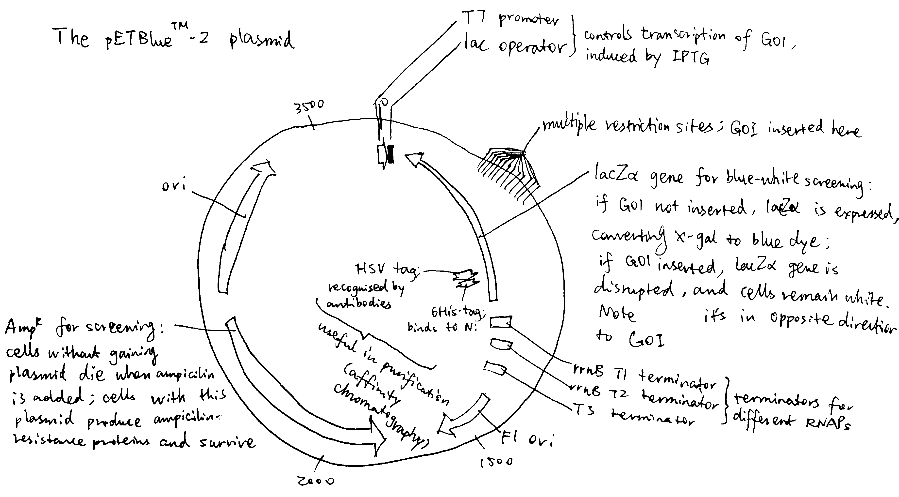
Figure 2.1: The pETBlue-2 plasmid vector
Plasmid-based bacterial transformation is usually permanent because plasmids can replicate themselves and be distributed into daughter cells after cell division.
2.2.2 Eukaryotic hosts
If the protein is incompatible for expression in bacteria, an eukaryotic host is chosen. This is typically yeast, insect, or human cells.
Transfection of eukaryotic cells can be transient or permanent. Eukaryotic cells do not transcribe plasmids, and the DNA fragment of interest must integrates into the host cell’s genome to produce a stable cell line–which is a rare event and takes more time to achieve. If we had to use a eukaryotic host, transient transfection may be used first to screen for the most viable construct, then a stable cell line is made with this construct for higher yield and convience for later use.
2.2.3 High-throughput strategy
High-throughput protein production aims to use robots to automate the steps in making expression constructs and screening them.
Take the OPPF pipeline for example, when the GOI is an eukaryotic protein, they test expressions with different vector constructs (with varying amino acid start and end points, fusion partners, and plasmids) in both E. coli and insect cells in parallel (Figure 2.2). The expresison screening is automated and performed in 96-well format.
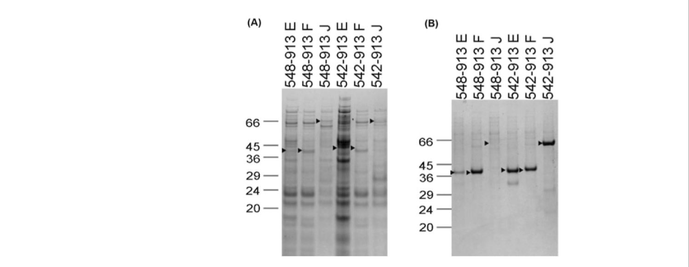
Figure 2.2: SDS-PAGE gel after NiNTA magnetic bead purification showing expression of constructs for DDR1 in (A) E. coli and (B) insect cells via the baculovirus system. The names of constructs correspond to amino acid start and end points and the vector being used (pOPINE, pOPINF or pOPINJ, which confers a C-terminal His-tag, an N-terminal His-tag, or an N-terminal His-GST tag, respectively)
they also used ligation-independent cloning methods (Section 2.3) to reduce variability and thus simplify the workflow.
2.3 Constructing the vector
The DNA fragment we obtained should be incorporated into a vector before they can be introduced into the host cell. Usually, a recombinant plasmid is made first and amplified in bacteria. Then, if necessary, it can be transferred into other vectors such as viruses and liposomes, depending on the strategies. Here I describe two ways of making recombinant plasmids: traditional restriction enzyme and ligation-based plasmid cloning, and T4 polymerase-based ligation-independent cloning (LIC).
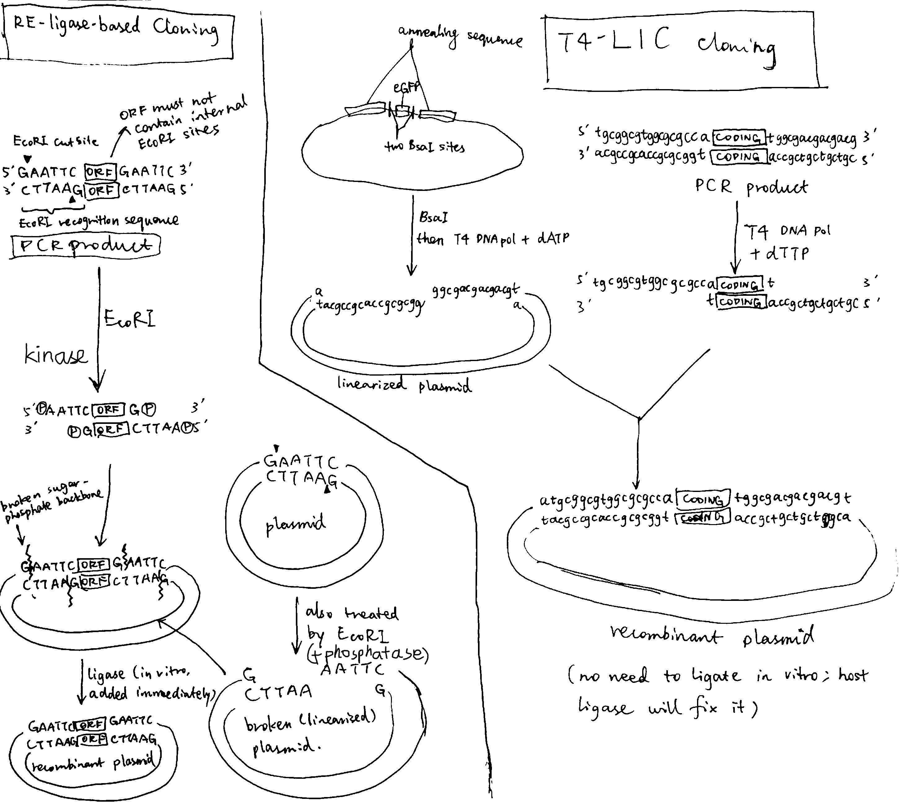
Figure 2.3: Left, traditional cloning based on restriction enzyme and ligase; right, ligase-independent cloning based on T4 polymerase
As shown in Figure 2.3, in the ligation-dependent method, the PCR product contains flanking restriction sites (came from the designed primers) to be recognised by a restriction enzyme (e.g. EcoRI). The plasmid also contain the restriction site for EcoRI (located in the multiple cloning site, see Figure 2.1). Cleavage by EcoRI results in complementary ‘sticky ends’, which facilitate annealing of GOI to the plasmid. The sticky sequences are shart (usually 3-5 bp), thus, to overcome low stability, ligation must be done immediately.
The ligation-based cloning are not proper for high throughput protein production (HTPP) projects due to several disadvantages:
- incomplete DNA digestion and poor ligation yields
- each GOI has to be inspected for any internal restriction sites (for exclusion from the choices of the ligation sequence)
- unwanted amino acids can be introduced to the expressed protein
- the GOI can only be cloned in the vector position where the selected restriction site is present
Ligation-independent cloning (LIC) overcomes many of the problems described above. In a T4 DNA polymerase-dependent approach, the sticky sequences are made by the 3’-to-5’ exonuclease activity of T4 polymerase. These sequences are long, allowing formation of stable recombinant plasmid without in vitro ligase treatment. The nicks in sugar-phosphate backbone are later fixed by host ligase.
The obvious elegance of T4-LIC is that once the sticky sequence is designed and constructed, it can be used for any GOI. As T4 polymerase (exonuclease activity) always proceeds from 3’ ends, any internal sticky sequences will not be disrupting.
2.4 Transformation/Transfection
Transformation is the process of delivering GOI-containing foreign DNA into host cells. For eukaryotic cells, this is more often known as transfection (because ‘transformtion’ has other meanings). Many chemical/physical transformation/transfection methods are generally done by making transient holes on host cell plasma membrane (technically, ‘inducing competence’ in host cells). Here are two examples.
Heat-shock transformation is used for small vectors such as plasmids. The general procedures are:
- Host cells are incubated in a solution containing divalent cations (typically CaCl2) on ice.
- CaCl2 partially disrupts the cell membrane, which allows the recombinant DNA enter the host cell. Such cells are called competent cells.
- Cells are exposed to a heat pulse (heat shock), and the thermal imbalance causes the entry of DNA through disrupted plasma membrane.
Electroporation can be used for larger vectors such as BAC and PAC2. The general procedures are:
- Host cells are placed into a cuvette, together with the vector. The cuvette is connect to electrodes.
- The cuvette containing the mixture is subjected to intense electric pulses (2500 V/cm for bacteria, lower for animal and plant cells) each lasting for only a few milliseconds
- Most cells would die under such treatment, but for those survived, their membranes are polarised by the electric field and are disrupted, and DNA enters through the pores. Finally, the membrane reseals after the treatment.
Depending on the identity of the host cell and the vector, other methods are also available. These are not directly relevant with our goal of expressing a malarial protein, so here is a simple listing:
- cosmid and fosmid vectors are introduced into bacterial cells via bacteriophages
- calcium phosphate co-precipitation for mammalian cells
- microinjection for animal cells
- microprojectile bombardment for plant cells
- adenovirus and lentivirus vectors for mammalian cells
- Agrobacterium-mediated transformation for plant cells
- genome editing techniques based on ‘designer nucleases’ such as ZFN, TALEN and CRISPR-Cas9 with homology directed repair
3 Protein Extraction and Purification
After proliferation of transformed/transfected cells, we can extract and purify the protein fo interest.
3.1 Extraction
3.1.1 Cell lysis
The first step is to lyse, or homogenise the cells to release the protein. To do this, cells can be subjected to osmotic shock or ultrasonic vibration, forced through a small orifice, or ground up in a blender. (if a membrane protein is to be extracted, detergents are normally used, although detergent-free methods have been developed recently)
3.1.2 Removing cellular components and debris
Repeated centrifugation, each time with a higher speed (i.e. differential centrifugation), removes many impurities with large sizes. Organelles (and small vesicles and microsomes) sediment (forming pallets) while proteins remain in the solution (as supernatant).
A finer degree of separation can be achieved by layering the homogenate in a thin band on top of a salt solution that fills a centrifuge tube. When centrifuged, the various components in the mixture move as a series of distinct bands through the solution, each at a different rate, in a process called velocity sedimentation. A glucose gradient is established to protect the bands from convective mixing.
3.2 Purification
Classical methods for separating proteins depend on variable protein properties, including solubility, size, charge, and binding affinity. In most cases, protein mixtures are sequentially subjected to different separation methods, each based on a different property. After each step of purification, the fractions are assayed (see Section 3.2.3).
3.2.1 Salting out and dialysis
The addition of certain salts in the right amount can selectively precipitate the protein of interest, while others remaining in solution. The precipitation is removed by centrifugation.
Dialysis is then used to remove the salt from the solution containing the protein of interest. The protein mixture is place inside a dialysis bag (i.e. made of size-selective permeable membrane) and placed in a buffer solution with low salt concentration. Salt in the protein-containing solution then diffuse out, leaving proteins inside the bag.
3.2.2 Chromatography
In column chromatography, the solution containing proteins is passed through a column containing a solid matrix (resin). Different proteins are retarded to different extents by their interaction with the matrix, and they can be collected separately as they flow out of the bottom of the column. Depending on the choice of matrix, proteins can be separated according to their charge (ion-exchange chromatography),nhydrophobicity (hydrophobic chromatography), size (gel-filtration/size-exclusion chromatography), or ability to bind to particular small molecules or to other macromolecules (affinity chromatography). The last two are the most important for high throughput protein purification are affinity chromatography and size-exclusion chromatography.
Affinity chromatography extract protein according to the tags we attached to target proteins. For example, His-tagged proteins bind to Nickle-coated resin and HSV epitope tagged proteins bind to resin coated with corresponding antibodies (polyHis-Ni interactions often have lower specificity compared to enzyme-substrate and epitope-antibody interactions)
Size exclusion chromatography cleans abnormal protein aggregates based on their large size.
A problem experienced by column chromatographic methods is diffusional spreading (i.e. proteins that are going down faster also diffuse upwards, mixing with proteins going slower), which reduces the resolution. The degree of diffusional spreading increases with time during which proteins stay in the column. HPLC (high-performance liquid chromatography) solves this problem. It makes use of high-pressure pumps that speed the movement down the column, so that the time of travelling, and hence the diffusional spreading, is greatly reduced, leading to higher resolution.
3.2.3 Monitoring the progress of purification
As purification progresses:
- the total amount of protein should decrease as unwanted proteins are removed and some target proteins are lost
- amount of target proteins should also decrease because they are unavoidably lost e.g. by nonspecific attachment to the purification apparatus or washed away
- the proportion of the target protein (i.e. purity) should increase as unwanted proteins are removed
The simplest way to monitor these changes is running a SDS-PAGE gel electrophoresis after each purification step. The bands should progressively decrease to one (which correspond to the target protein), and the thickness of this band should increase because the concentration of target protein increases (its absolute amount decreases, but as we removed the fractions without the target protein in chromatography, its concentration should increase).
To assess whether the protein is correctly folded and functional, specific assays are used For example, if the target protein is an enzyme, it can be assayed using its substrate; if it is a protein which binds to another molecule, their interaction can be probed by surface plasmon resonance. Circular dichroism also helps to assess the foldedness of the target protein.
3.3 Preparation for crystallography
For crystallisation, the protein sample must be homogenous and correctly folded. They can be checked by the methods descibed in Section 3.2.3.
If the affinity tag needs to be removed (which is often required for structual studies), a protease cleavage site is often incorporated before or after the fusion tag and the cleavage can be conducted either in solution following purification (the protease themselves are tagged) or immediately after enzyme capture in situ on the chromatography resin itself. AKTA Express (GE Healthcare) is an elegant procedure for on-column cleavage coupled to multidimensional chromatography that is highly amenable to high throughput protein purification.
There are three methods to grow protein crystalls, namely ‘hanging drop’, ‘sitting drop’, and microdialysis, but the underlying principles are similar. The protein is first dissolved in a ‘crystallisation cocktail’ droplet and concentrated to 2-50 mg/ml, then it is allowed to equilibrate with a more concentrated reservoir solution of the cocktail with a volume ratio of 1:1. As the protein droplet becomes supersaturated, it may start to crystalise. Robots are commonly used for automatic screeening and optimisation of crystallisation conditions. If crystallisation fails under all conditions, we can try co-crystalising with a ligand. If this still fails, we might consider using a truncated protein, as described in Section 2.1.
References
Doyle, Sharon A. 2008. HIgh Throughput Protein Expression and Purification: Methods and Protocols. Edited by John W. Walker. Methods in Molecular Biology 498. Humana Press.
ThermoFisher. 2019. https://www.thermofisher.com/uk/en/home/references/gibco-cell-culture-basics/transfection-basics/gene-delivery-technologies.html.
Vicentelli, Renaud. 2019. HIgh-Throughput Protein Production and Purification: Methods and Protocols. Edited by John M. Walker. Vol. 2025. Methods in Molecular Biology. New York, NY: Humana Press.
Choose 3 structural papers. They can be crystallography, NMR, CryoEM etc. Explain why the protein is important and what the structure tells you about function (why you find it interesting) but most importantly go to the methods section (it may be supplementary information especially if you choose high profile paper) and explain how the protein was purified. The techniques will be those covered in Matt Higgins' lecture series. Bring notes no essay.
Principles of X-ray crystallography
Scattering
- When light hits matter…
- Vibration\(\rightarrow\)scattering (all directions)
- Energy level transitions\(\rightarrow\)absorption and emission (fluorescence)
- Photochemical reactions (e.g. photosynthesis)
- scattering can give rise to refraction and diffraction
- experiments on scattering
- turbidity (reduction in intensity)
- angular dependence
- changes in \(\lambda\)
Wnt3-Fz8 Complex (Hirai et al. 2019)
- crystals of lysine-methylated and deglycosylated human Wnt3 (hWnt3)-mFz8 CRD complex were obtained by X-ray crystal structure was solved by molecular replacement and refined to a resolution of 2.8Å.
Difficulties in crystallisation and their solutions
- Strong hydrophobic property of Wnt proteins caused by a covalent lipid modification
Optimisation and chemical modifications conducted to ensure high expression yields, enhanced solubility and sample homogeneity
Solubility
- Failed attempts on making crystallization constructs
- afamin can solubilize Wnt proteins; when coexpressed and complexed, Wnt3 and 3a can be purified to homogeneity. However, diffraction-quality crystals could not be obtained after repeated trials.
- coexpression with mFz8 CRD after Janda’s success; but found purified Wnt3a-Fz8 CRD complex still remained hydrophobic and required detergents during concentration, which hampered crystallisation
- Successful: N-terminal truncation of Wnts to mimic the cleavage of the N-terminal peptide by a metalloprotease Tiki, which has been reported to reduce the overall hydrophobicity
- N-terminal 20 residues were removed from hWnt3/mWnt3a constructs
- PA-hWnt3(\(\Delta\)N)/PA-mWnt3a(\(\Delta\)N) coexpressed with mFz8 CRD C-terminally fused with modified human Fc.
- confirmed that complexes were fully soluble in aqueous buffer and could be concentrated to > 5 mg/ml without detergents
Optimisation
- Initially (following Janda) attached normal (with hinge region) human IgG1 Fc to the C-terminal of mFz8 CRD, intervened by a TEV protease cleavage sequence for the later Fc removal
- although complex formed with high yield, it could not be cleaved at all; different linker lengths showed no improvements
- decided to use IdeS protease to remove Fc.
Hirai, Hidenori, Kyoko Matoba, Emiko Mihara, Takao Arimori, and Junichi Takagi. 2019. “Crystal Structure of a Mammalian Wnt–Frizzled Complex.” Nature Structural & Molecular Biology 26 (5): 372–79. https://doi.org/10.1038/s41594-019-0216-z.
What mechanisms are employed by mitochondrial electron transfer proteins to generate a proton-motive force (pmf)? Using the concept of membrane capacitance, explain why the dominant component of the pmf in mitochondria is an electrical potential rather than a pH gradient.


SAQ
Using the physical chemistry principles, discuss factors which are contributed in the favourability of an electron transfer reactions between cofactors.
The reduction potential, \(E\), is used to quantify favourability of gaining electrons (getting reduced). \(E^{\circ\prime}\) is the reduction potential measured under biological standard conditions (i.e. pH = 7, oxidised and reduced species are 1M, 298K and 1 atm). When concentrations of the oxidised and reduced species differ:
\[E=E^{\circ\prime} + \dfrac{RT}{zF}\ln\left(\dfrac{\text{[reduced]}}{\text{[oxidised]}}\right)\]
For two half equations, A+ + \(e^-\rightarrow\) A and \(\text{B} + e^- \rightarrow\) B- with \(E\) of \(x\) and \(y\) respectively, a full reaction equation can be constructed, which can be A+ + B- \(\rightarrow\) A + B (with \(E_\text{r}\) = x - y) or the reverse (with \(E_\text{r}\) = y - x); the one with positive \(E_\text{r}\) (reaction potential) will actually occur.
Electron transfers occur because electrons are moving down to a lower energy level. In simple cases, atoms with greater electronegativity have greater affinity for electrons and thus a more positive reduction potential, and vice versa. This is the case for strong oxidants F2 and Cl2 (electronegative; highly positive \(E\)) and strong reductants Li and Na (electropositive, highly negative \(E\)). In most cases, however, other factors, such as change in state, conformation, or interactions with water, will significantly affect the reduction potential. For example, Cu and Ag is less electronegative than hydrogen, but their monovalent ions are more easily reduced than H+. That is mainly because the formation of metallic solid upon reduction is highly exergonic. Similarly, although the atoms involved in the redox reactions in the repiratory chain are not variable (Cu and Fe), they have different \(E\) due to the enviornment (e.g. proximity to the P/N face, identity of ligands).
The series of cofactors along the electron transport chain have a generally steadily increasing \(E^{\circ\prime}\), so electrons are moved toward increasingly lower energy levels. There are some exceptions to this trend, but \(E_\text{r}\) would be made positive in these cases by making a concentration difference (usually by means of ‘pulling’ from the next redox centre with favourable \(E\)).
While the thermodynamic feasibility of the redox reactions is solely determined by the difference in the reduction potentials (which is proportional to Gibbs free energy), the kinetics (rates) are affected by more factors.
Electrons are passed from one centre to another by tunnelling. Specifically, the wave function for an electron in the donor shows there is a probability that the electron will be found at an acceptor some distance away. Tunnelling is independent of temperature and orientation of chemical groups, but is instead influenced by 1) the distance between the electron donor and acceptor, 2) the redox potential difference, \(E\), and 3) the ‘reorganisation energy’, \(\lambda\).
Within each respiratory complex, the redox centres are close to each other—no more than 14Å apart (the maxium 14Å is found between N5 and N6a Fe-S clusters in complex I). Ubiquinone has binding sites in complex I (II) and III in close proximity to the redox centres from which it receives and to which it delivers electrons, and the same is true for cyt c (which binds to complex III and IV). This arrangement makes the numerous electron transfer steps not the limiting factor in the respiratory chain.
Essay
What mechanisms are employed by mitochondrial electron transfer proteins to generate a proton-motive force (pmf)? Using the concept of membrane capacitance, explain why the dominant component of the pmf in mitochondria is an electrical potential rather than a pH gradient.
Two Proton Translocation Models: Loop and Pump
Mechanisms of coupling redox reactions to proton translocation can be classified into two models: the chemical loop, and the conformational pump.
In the loop model shown in Figure 1, the hydrogens (protons plus electrons) from the substrate (AH2) first reduce an mediator molecule (B) on the N side, and this mediator is reoxidised, forcing protons to be released to the P side via one pathway and electrons to flow back to the N side via another pathway. The electrons then reduce another species (C) using protons from the N side. This mechanism is employed in the respiratory chain, where ubiquinone serves as the ‘mediator’ molecule and ETC components from Rieske Fe-S protein in complex III to CuB centre in complex IV as the electron pathway. The number of protons translocated in this way has to follow a fixed stoichiometry (i.e. 1 proton per electron). (Not shown in this diagram, the reduction of Q near the N face driven by QH2 oxidation near the P face in the Q cycle is also an example of this mechanism.)
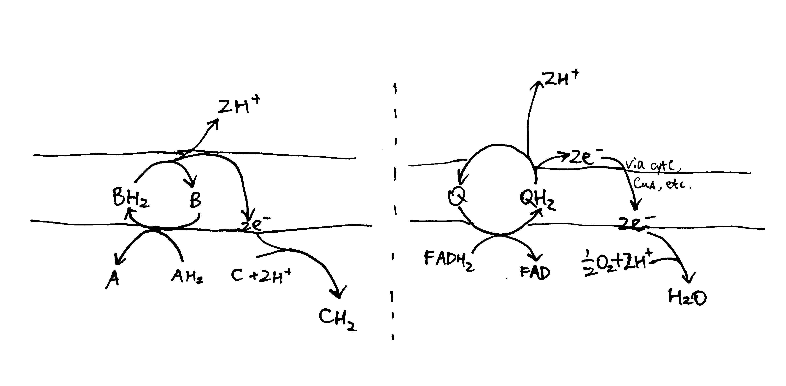
Figure 1: The loop model. Left, generic form; right, simplified example found in the respiratory chain.
The key idea of the pump mechanism is the conformational change driven by redox reactions. Conformational change can lead to alternating proton accessibility from the two faces and differential pKa values of proton binding sites, resulting in proton translocation (explained in Figure 2). The number of protons pumped in this way does not have to follow a fixed stoichiometry within the thermodynamic constraints (i.e. Er/n must be greater than ∆p). This mechanism is thought to be employed in complex I and IV of the respiratory chain. However, recent studies have shown that complex IV may adopt a unique mechanism, as explained later in this essay.
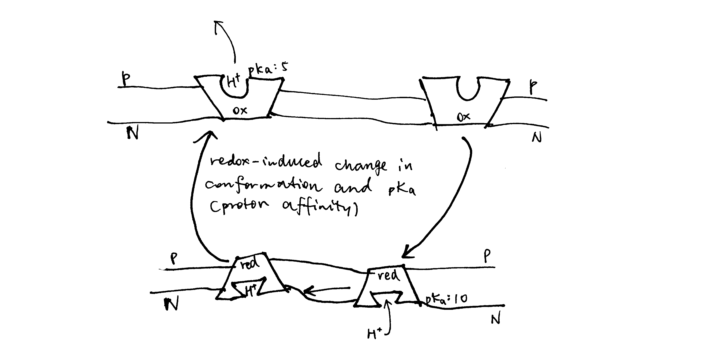
Figure 2: The conformational pump mechanism. When the “pump” protein is reduced, the proton binding site is exposed to the N face and with high pKa, promoting proton binding; upon oxidation, the proton binding site is open to the P face, and pKa drops, promoting proton dissociation.
Complex I
As shown in Figure 3, bacterial complex I (from Thermus thermophilus) comprises two domains. The hydrophobic, transmembrane domain (a.k.a. membrane arm) has a proton-translocating P-module and subunit NuoH. The hydrophilic domain (a.k.a. peripheral domain) has an NADH-oxidising dehydrogenase module (N-module) which feeds electrons to the electron-transferring chain of Fe-S clusters, and the connecting Q-module, which reduces ubiquinone. Mammalian mitochondrial complex I is similar in gross organisation and function, although it possesses more subunits.
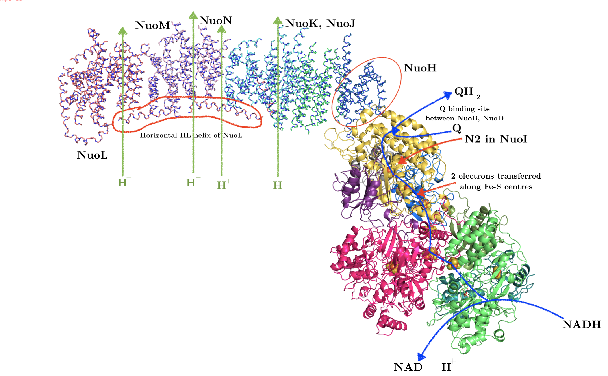
Figure 3: Annotated structure of bacterial complex I. PDB accession code: 3M9S
Hydrophilic domain (peripheral arm)
All FMN and the seven (bacteria have additional two redundant ones) Fe-S centres reside in the hydrophilic domain. FMN, which is located at the extremity of the hydrophilic arm, accepts two electrons from NADH2 and transfers them one by one to the nearest Fe-S centre (N3). Electrons then flow from N3 through a series of isopotential Fe-S centres and finally to N2, whose \(E^\circ\) is significantly less negative (-100 mV) (Sazanov and Hinchliffe 2006). The ubiquinone is then reduced by two one-electron gaining from N2; the existence of at least two forms of semiquinone is identified by electron paramagnetic resonance.
Hydrophobic domain (membrane arm)
The hydrophobic domain comprises subunits NuoAHJKLMN, of which NuoLMN are homologous to bacterial Mrp Na+/H+ antiporters (characterised by the conserved 14 transmembrane helices).
At the centre of each antiporter-like subunit (NuoLMN), two transmembrane helices are ‘broken’ and each have a kink known as a ‘π-bulge’, and there is a lysine residue in this region (Glu407 for NuoM) critical to proton pumping, confirmed by mutagenesis studies. There are two symmetry-related plausible proton channels lined by hydrophilic/charged residues, one connecting the central lysine on one broken TM to the P face and the other connecting lysine of the other TM to the N face.
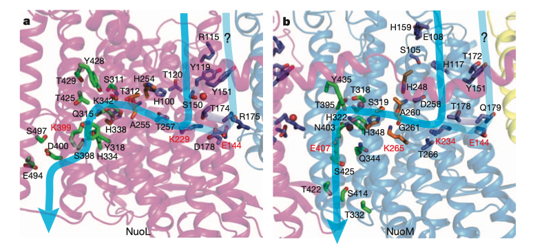
Figure 4: Plausible proton paths
As shown in Figure 5, NuoL/M/N may work by using conformational changes (induced from the hydrophilic domain) to transfer a proton from the lysines on the helix with N half channel to the other lysine (or Glu in NuoM) on the helix with P half channel, and if the pKas of the two lysines differ, this leads to unidirectional proton transport. This mechanism is in accordance with the general scheme shown in Figure 2.
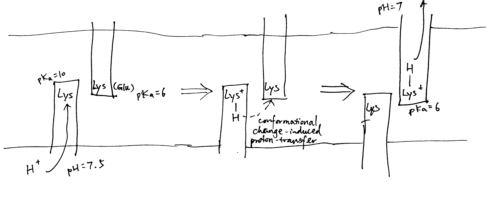
Figure 5: Schematic diagram of proton translocation in complex I
The three antiporter-related subunits are thought to be responsible for the translocation of 3 protons per 2 \(e^-\). An additional channel is found at the interface of subunits NuoN,K,J,A (according to Efremov and Sazanov (2011) and Sazanov (2015) or NuoH,J,K according to Hirst (2013) and Nicholls and Ferguson (2013)) and they are thought to act together to pump another proton with a similar mechanism involving protonation/deprotonation of lysine.
Coupling
It is debated how the redox reactions in the hydrophilic domain triggers conformational change, and how this conformational change is transmitted along the hydrophobic domain.
Some features of the Fe-S centre N2 (the last Fe-S centre in complex I) led to hypotheses in which N2 plays a major role in pumping protons1,2, but currently, the mainstream idea is that the initial conformational change in the hydrophilic domain is contributed mostly by the reduction of ubiquinone.
As claimed by Wirth et al. (2016), reduction of ubiquinone is a two-step process, where the Q binding site cycles between a conformation that permits electron transfer (E-state), and a conformation that permits proton transfer (P-state) onto intermediates of ubiquinone. The conformational change associated with this controlled process is assumed to initiate proton translocation.
It was originally suggested that the horizontal HL helix (see Figure 3) in NuoL could move horizontally like a piston to transmit conformational change along the hydrophobic domain3, but now, after realising the similarity between NuoH and NuoL/M/N, it is thought that conformational changes associated with π-bulges in the mid-membrane parts are transmitted laterally to NuoN/M/L (Nicholls and Ferguson 2013), and, as suggested by Wirth et al. (2016), this is achieved by electrostatic coupling in the central hydrophilic axis.
As I mentioned last week (Shi 2019), as there is no complete evidence demonstrating how complex I proton pump works, other hypotheses exists, including a radical one recently proposed by Morelli et al. (2019), which emphasises the elusiveness of the ‘proton entrance half channel’ (from the middle Lys to the N face) contrasted by the clarity of the ‘proton exit half channel’ (to the P face). Together with another piece of evidence that an obvious proton tunnelling is found at the centre of complex I, Morelli drafted an lateral mechanism of proton circuiting, as shown in Figure 6
Figure 6: A possible lateral proton circuit suggested by Morelli (2019). Protons are only pumped from the middle to the P side, then trasferred through the hydrophilic heads of phospholipids to ATP synthase. After a complete turn in ATP synthase, protons move back through channelling in the middle of the membrane to complex I, but not to the N side
Complex III (cyt bc1 complex)
Complex III is a homodimer, with each monomer consisting of three subunits: cytochrome b, the Rieske iron-sulfur protein, and cytochrome c1. Each monomer has two binding sites for ubiquinone, called QN and QP, indicating their proximities to two opposite faces.
Uniquinone oxidation and proton translocation is coupled in the Q cycle, as illustrated in Figure 7.
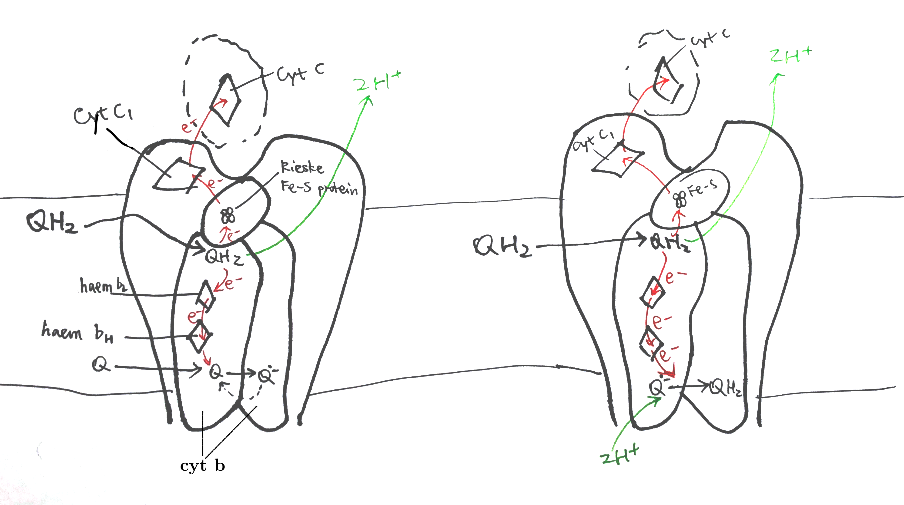
Figure 7: The Q cycle. Left, stage 1; right, stage 2.
In stage 1, QH2 binds to QN of one dimer and a Q binds to the QP of another dimer. The QH2 at QN is oxidised by two electron acceptors in two steps: the first electron is accepted by the Rieske iron-sulfur protein and passed though cytochrome c1 and finally to cytochrome c, and second other electron is accepted by cytochrome b, passed through its two hemes (bH and bL) and finally to the Q at QP on the other monomer, forming semiquinone. The two protons of QH2 are released into the P face (the molecular details is unclear).
In stage 2, the same process is repeated—one QH2 is oxidised to Q, its protons released and electrons passed 1) onto one cytochrome c and 2) to the other side—but this time the electron acceptor on the other side is semiquinone. Acceptance of an electron by semiquinone, and the addition of two protons from the matrix, produces QH2.
Complex IV
Complex IV (cytochrome oxidase) accepts electrons from cytochrome c to reduce oxygen to water and pumps 2 electrons to the P face.
Previous X-ray studies suggested that complex IV exists as dimers with each monomer comprising 13 subunits (Tsukihara et al. 1996). However, it was recently shown by Zong et al. (2018) that complex IV is actually a 14-subunit monomer, and dimerisation was an artifect due to the dissociation of NDUFA4 subunit during the detergent-based purification steps before crystallisation (NDUFA4 hampers dimerisation).
Reduction of oxygen
The key catalytic activities are found in subunit I and II, as shown in Fig. 8
Figure 8: Schematic diagram of complex IV with emphasis on the electron-transport and catalytic activities of subunit I and II.
Each cytochrome c first donates one electron to CuA located in the globular domain of subunit II. CuA is a binulear centre, but it undergoes one-electron redox reactions. The electron is then passed onto haem a, and then to haem a3-CuB binuclear centre, where an oxygen molecule is bound. 4 electrons from cyt c and 4 protons from the N phase are required to reduce one oxygen molecule to two water molecules. CuB has three His ligands, and the forth empty coordination site mediates oxygen reduction by holding the intermediates (its malfunction leads to generation of ROS).
Pump mechanism
For each pair of electrons, 2 H+ from N phase is consumed to make water and another 2 H+ is pumped intot he P phase.
According to a recent review by Wikström and Sharma (2018), the favoured charge-conpensation mechanism is as follows: (see Figure 9)
- when an electron is transferred from haem a to the haem a3-CuB binulear centre (BNC), one proton from Glu242 is loaded onto the ‘proton loading site’ (PLS4). This is a purely electrostatic event (not acid-base, as pKa of PLS is not high enough).
- reprotonated Glu242 transfers another proton to BNC, annihilating the -ve charge in BNC, so H+ on PLS can leave. There must be a barrier preventing H+ flowing back to the N side, which can be achieved by raising the energy of the transition state of proton transfer between the Glu242 and PLS.
Figure 9: Charge-compensation mechanism of proton pumping in complex IV.
Components of pmf in chloroplasts and mitochondria
In mitochondria, the major component of protomotive force (\(\Delta p\)) is the membrane potential (\(\Delta \Psi\)), while in chloroplasts it is \(\Delta\)pH. This is caused by the physiology of these organelles and the electrical properties of membranes.
In chloroplasts, when protons are being pumped into the thylakoid space, the developed membrane potential is balanced out by efflux of K+ and influx of Cl– through voltage-gated channels, such as KEA3 K+/H+ antiporter and voltage-gated VCCN1 Cl– channel, so it results in a pure pH difference. TPK3 was originally thought to be one of such channels but was recently shown to be not critical (Höhner et al. 2019). There are not many enzymes in the thylakoid lumen, so a low pH is not unsafe. In addition, the high H+ concentration has regulatroy functions. (Höhner et al. 2019)
If mitochondria were allowed to develop such a pH difference (very basic matrix), this would denature the numerous enzymes, such as those involved in \(\beta\)-oxidation and TCA cycle, that operate inside the matrix. In mitochondria, there are not such ion channels to counteract change in \(\Delta \Psi\), so proton translocation results in charge imbalance, leading to \(\Delta \Psi\) change5, and a significant membrane potential can be established with only minuscule amount of charge movement.This can be explained by the low capacitance of the membrane. Capacitance is the amount of charge separation needed to develop unit voltage difference, i.e.
\[C=\dfrac{Q}{V}\]
Given a constant \(V\) (\(\Delta \Psi\)), lower capacitance means smaller charge difference is required to build up that voltage difference.
Figure 10 shows a simple parallel-plate capacitor, which is analogous to mitochondrial inner membrane.
Figure 10: Illustration of a simple parallel-plate capacitor
The electrical capacitance of such a plate can be calculated as:
\[C = \dfrac{\epsilon A}{d}\]
where \(\epsilon\) is the permittivity of the plate, \(A\) is the surface area and \(d\) is the distance separating charges. For mitochondrial inner membrane, although \(\dfrac{A}{d}\) is large, \(\epsilon\) is very small, so the overall capacitance is small.
A failed quantitative analysis
According to Liang et al. (2017), the cell membrane capacitance is aroud 10 mF/m2, and in the Bioenergetics book (Nicholls and Ferguson 2013), the capacitance of the mitochondrial inner membrane takes the same valu. According to a model built by Mannella, Lederer, and Jafri (2013), one mitochondria with matrix volume of \(9.6\times10^4\) nm^3 would have a inner membrane (cristae) surface area of \(5.76\times10^6\) nm2.
With these values, to build up a \(\Delta \Psi\) of -140 mV, the charge required is:
\[Q=CV=0.01\text{F m}^{-2} \times 5.76 \times 10^{-12}\text{m}^{-2}\times 0.14\text{V}=8.1 \times 10^{-15} \text{ C}\]
which corresponds to \(8.1 \times 10^{-15}/96450=8.4 \times 10^{-20}\) moles of H+, or \(8.4 \times 10^{-20}/(9.6\times 10^{-20})=0.875\) M (concentration), which is not realistic…
References
Efremov, Rouslan G., and Leonid A. Sazanov. 2011. “Structure of the Membrane Domain of Respiratory Complex I.” Nature 476 (7361): 414–20. https://doi.org/10.1038/nature10330.
Hirst, Judy. 2013. “Mitochondrial Complex I.” Annual Review of Biochemistry 82 (1). Annual Reviews: 551–75. https://doi.org/10.1146/annurev-biochem-070511-103700.
Höhner, Ricarda, Viviana Correa Galvis, Deserah D. Strand, Carsten Völkner, Moritz Krämer, Michaela Messer, Firdevs Dinc, et al. 2019. “Photosynthesis in Arabidopsis Is Unaffected by the Function of the Vacuolar K\(<\)sup\(>\)+\(<\)/Sup\(>\) Channel Tpk3.” Plant Physiology 180 (3): 1322. https://doi.org/10.1104/pp.19.00255.
Liang, Wenfeng, Yuliang Zhao, Lianqing Liu, Yuechao Wang, Wen Jung Li, and Gwo-Bin Lee. 2017. “Determination of Cell Membrane Capacitance and Conductance via Optically Induced Electrokinetics.” Biophysical Journal 113 (7): 1531–9. https://doi.org/https://doi.org/10.1016/j.bpj.2017.08.006.
Mannella, Carmen A., W. Jonathan Lederer, and M. Saleet Jafri. 2013. “The Connection Between Inner Membrane Topology and Mitochondrial Function.” Journal of Molecular and Cellular Cardiology 62: 51–57. https://doi.org/https://doi.org/10.1016/j.yjmcc.2013.05.001.
Morelli, Alessandro Maria, Silvia Ravera, Daniela Calzia, and Isabella Panfoli. 2019. “An Update of the Chemiosmotic Theory as Suggested by Possible Proton Currents Inside the Coupling Membrane.” Journal Article. Open Biology 9 (4): 180221. https://doi.org/10.1098/rsob.180221.
Nelson, David L., and Michael M. Cox. 2017. Lehninger Principles of Biochemistry. Book. 7th ed. W. H. Freeman. https://search.library.wisc.edu/catalog/999964334502121.
Nicholls, David G., and Stuart J. Ferguson. 2013. Bioenergetics. Book. 4th ed. Amsterdam: Academic Press, Elsevier.
Roessler, Maxie M., Martin S. King, Alan J. Robinson, Fraser A. Armstrong, Jeffrey Harmer, and Judy Hirst. 2010. “Direct Assignment of Epr Spectra to Structurally Defined Iron-Sulfur Clusters in Complex I by Double Electron–Electron Resonance.” Proceedings of the National Academy of Sciences 107 (5): 1930. https://doi.org/10.1073/pnas.0908050107.
Sazanov, Leonid A. 2015. “A Giant Molecular Proton Pump: Structure and Mechanism of Respiratory Complex I.” Nature Reviews Molecular Cell Biology 16. Nature Publishing Group, a division of Macmillan Publishers Limited. All Rights Reserved. SN -: 375 EP. https://doi.org/10.1038/nrm3997.
Sazanov, Leonid A., and Philip Hinchliffe. 2006. “Structure of the Hydrophilic Domain of Respiratory Complex I from Thermus Thermophilus.” Science 311 (5766): 1430. https://doi.org/10.1126/science.1123809.
Shi, Tianyi. 2019. “Principle of Chemiosmotic Mechanism.” 2019.
Tsukihara, Tomitake, Hiroshi Aoyama, Eiki Yamashita, Takashi Tomizaki, Hiroshi Yamaguchi, Kyoko Shinzawa-Itoh, Ryosuke Nakashima, Rieko Yaono, and Shinya Yoshikawa. 1996. “The Whole Structure of the 13-Subunit Oxidized Cytochrome c Oxidase at 2.8 Å.” Science 272 (5265): 1136. https://doi.org/10.1126/science.272.5265.1136.
Verkhovskaya, Marina, and Dmitry A. Bloch. 2013. “Energy-Converting Respiratory Complex I: On the Way to the Molecular Mechanism of the Proton Pump.” The International Journal of Biochemistry & Cell Biology 45 (2): 491–511. https://doi.org/https://doi.org/10.1016/j.biocel.2012.08.024.
Wikström, Mårten, and Vivek Sharma. 2018. “Proton Pumping by Cytochrome c Oxidase – a 40 year Anniversary.” Biochimica et Biophysica Acta (BBA) - Bioenergetics 1859 (9): 692–98. https://doi.org/https://doi.org/10.1016/j.bbabio.2018.03.009.
Wirth, Christophe, Ulrich Brandt, Carola Hunte, and Volker Zickermann. 2016. “Structure and Function of Mitochondrial Complex I.” Biochimica et Biophysica Acta (BBA) - Bioenergetics 1857 (7): 902–14. https://doi.org/https://doi.org/10.1016/j.bbabio.2016.02.013.
Zong, Shuai, Meng Wu, Jinke Gu, Tianya Liu, Runyu Guo, and Maojun Yang. 2018. “Structure of the Intact 14-Subunit Human Cytochrome c Oxidase.” Cell Research 28 (10): 1026–34. https://doi.org/10.1038/s41422-018-0071-1.
Zwicker, K., A. Galkin, S. Drose, L. Grgic, S. Kerscher, and U. Brandt. 2006. “The Redox-Bohr Group Associated with Iron-Sulfur Cluster N2 of Complex I.” Journal Article. J Biol Chem 281 (32): 23013–7. https://doi.org/10.1074/jbc.M603442200.
In some papers (Hirst 2013; Verkhovskaya and Bloch 2013) it was suggested that coupling of electron transport to movement of protons depends on the significantly exergonic reduction of the N2 centre by the roughly isopotential wire of Fe-S centres that delivers electrons from NADH, and the large Em,7 span from N3 to N2 must provide the majority of the driving force for the proton pumping events associated with reduction and reoxidation of N2. This may be incorrect, as newest measurements (Sazanov 2015) of redox potentials of the full Fe-S series (N3-N1b-N4-N5-N6a-N6b-N2) shows that N3, N4 and N6 are about equipotential at about -250 mV, while N1b, N5 and N6b actually have lower potentials; and such an arrangement is claimed by Roessler et al. (2010) to be energy efficient.↩
The mid-point reduction potential of N2 is shown to be pH-dependent, so that Eacid > Ealkaline, and indeed a proton binding site is present there: His226 in Y. lipolytica, and protons are more likely to bind when N2 is reduced. However, shifting the midpoint potential to a more negative and pH insensitive value by exchanging His226 with a methionine affected the functioning of complex I including proton pumping only marginally. (Zwicker et al. 2006)↩
The alternative role of HL would be to stabilise ends of the helices while permitting movement of the middle hydrophilic axis.↩
Although the identity of PLS is uncertain, many studies indicates that it may be the A-propionate substituent of haem a3.↩
To be precise, when ∆p = 0, there is still (negative) membrane potential (\(\Delta \Psi\)), and H+ equilibrate under this \(\Delta \Psi\), which results in a lower pH inside (more concentrated H+). The \(\Delta \Psi\) that contributes to ∆p is actually the \(change\) in \(\Delta \Psi\) caused by proton translocation.↩
Specific radioactivity of ATP and glucose.
1 Aim
- Given a sample containing (fake) radioactive 14C glucose and 3H ATP:
- determine concentration of glucose and ATP.
- Given that both concentrations lie between 1mM and 10mM.
- Given that \(\epsilon^{260}_\text{ATP}=1.57\times10^4 \text{ mol}^{-1}\text{ dm}^3\text{ dm}^{-1}\)
- determine radioactivity of the sample (virtual practical)
- and hence determine the specific radioactivity of ATP and glucose
- determine concentration of glucose and ATP.
- 23 samples have glucose and ATP concentrations falling into two distinct classes. They are independently measured by 23 pairs of students. Determine these concentrations using the class results and assess precision and accuracy.
2 Reagents and Apparatus Provided
- 15mL sample solution
- 0.1 M Na3PO4 buffer at pH 7.0
- 1mM ABTS
- Glucose Oxidase (100 U/mL) and peroxidase (20 U/mL)
- Solid glucose
- Spectrophotometer
3 Method
3.1 ATP concentration
3.1.1 Dilution
3.1.1.1 Determining scale of dilution
Given that 1mM < ATP < 10mM and that \(\epsilon^{260}_\text{ATP}=1.57\times10^4 \text{ mol}^{-1}\text{ dm}^3\text{ dm}^{-1}\), according to \(A^{260}=\epsilon^{260}cl\):
if no dilution:
\[ \begin{aligned} 1.57\times10^4\times0.001<&A^{260}<1.57\times10^4\times0.01 \\ 15.7<&A^{260}_\text{raw}<157 \\ \end{aligned} \]
clearly, a 1:100 dilution would be very likely to produce a sensible \(A^{260}\):
\[0.157<A^{260}_\text{1:100 dilution}<1.57\]
3.1.1.2 Making dilution
5mL of 1:100 diluton is made serially by first fixing 500 \(\mu\text{L}\) sample with 4.5mL buffer then mixing 500 \(\mu\text{L}\) of the resulting 1:10 dilution with another 4.5mL buffer.
A preliminary test gives \(A^{260}_\text{1:100 dilution}=0.503\), which is within the range where the spectrophotometer is accurate, so we made 4 more 1:100 dilutions using the method described above.
3.1.2 Results
See section 4.1
3.2 Glucose concentration
3.2.1 Mechanism
Glucose itself does not have convenient absorption. Thus, glucose oxidase, ABTS and peroxidase is added to make a green solution (glucose is first oxidised by oxidase to produce gluconic acid and H2O2; peroxidase then catalyses the reaction between H2O2 and ABTS to produce a green dye).
3.2.2 Determine the volume of enzyme
We want the reaction to ‘virtually’ complete (i.e. > 99% conversion of substrate) in 10 min.
For an enzyme reaction:
\[-\dfrac{ds}{dt}=v-\dfrac{V_\text{max}s}{K_m+S}\]
As the reaction approaches completion, \(s<<K_m\):
\[-\dfrac{ds}{dt}=\dfrac{V_\text{max}s}{K_m}\]
Integrating to determine the total time for a given change in \(s\):
\[ \begin{aligned} -\int_{s_0}^{s_1}{\dfrac{ds}{s}}&=\dfrac{V_\text{max}}{K_m}\int_0^t dt \\ \ln\dfrac{s_0}{s_1}&=\dfrac{V_\text{max}t}{K_m} \end{aligned} \]
For a decrease in \(s\) from 100% to 1% in 10 min:
\[ \begin{aligned} \ln\dfrac{100}{1}&=\dfrac{V_\text{max}\times 10}{K_m} \\ V_\text{max}&=0.4605K_m \text{ (mol L}^{-1}\text{min}^{-1}\text{)} \end{aligned} \]
Our assay volume will be 4.0mL, so the amound of enzyme, in U (\(\mu\text{mol min}^{-1}\)), will be
\[\text{amount of enzyme in U}=0.4605\times K_m \times 4.0 \times 10^{-3}\times10^6=1842K_m\]
where \(K_m\) has unit M.
For GOD, \(K_m=1\text{ mM}\), and the provided enzyme concentration is 100U/mL:
\[ \begin{aligned} K_m&=1\text{ mM} \\ \text{minimum amount of enzyme}&=1842 \times 1 \times 10^{-3}=1.84 \text{ U} \\ \text{minimum volume of enzyme}&=1.84 \div 100=0.0184 \text{ mL} \end{aligned} \]
For POD, \(K_m=100\text{ }\mu\text{M}\), and the provided enzyme concentration is 20U/mL:
\[ \begin{aligned} K_m&=100\text{ }\mu\text{M} \\ \text{minimum amount of enzyme}&=1842 \times 100 \times 10^{-6}=0.184 \text{ U} \\ \text{minimum volume of enzyme}&=0.184 \div 20=0.0092 \text{ mL} \end{aligned} \]
We decided to use an excess amount of enzyme (i.e. 0.1mL for both). This guarantees that the reactions will complete within 10 min, and makes it easier to make up the 4mL total volume for assay (see section 3.2.4.2).
3.2.3 Determining \(\lambda_\text{max}\)
Measuring absorbance near \(\lambda_\text{max}\) reduces error. An 100nmol-glucose-containing (i.e. with 1mL 0.1mM glucose solution, see section 3.2.4.2) assay result is used. The absorbance in the range 350nm to 450nm is measured, and \(\lambda_\text{max} = 418\text{ nm}\). We then used this wavelength for all glucose assays.
3.2.4 Calibration
Calibrate \(A^{418}\) with known glucose concentrations, then we can map \(A^{418}_\text{sample}\) to the calibration curve to determine sample glucose concentration.
3.2.4.1 Dilution
- 0.18 g glucose is dissolved in 100mL buffer, which gives 10mM glucose solution (which is handy, as the maximum possible concentration of glucose in the sample is also 10mM)
- 100mL 0.1mM glucose solution is made by mixing 1mL 10mM glucose solution with 99mL buffer (1:100 dilution).
3.2.4.2 Assay
Assays are made on 4mL mixtures with varying amount of glucose, according to the following table:
| ABTS | Buffer | 0.1mM glucose | H2O | GOD | POD | nmol glucose |
|---|---|---|---|---|---|---|
| 2mL | 0.8mL | 1.0mL | 0mL | 0.1mL | 0.1mL | 100 |
| 2mL | 0.8mL | 0.8mL | 0.2mL | 0.1mL | 0.1mL | 80 |
| 2mL | 0.8mL | 0.6mL | 0.4mL | 0.1mL | 0.1mL | 60 |
| 2mL | 0.8mL | 0.4mL | 0.6mL | 0.1mL | 0.1mL | 40 |
| 2mL | 0.8mL | 0.2mL | 0.8mL | 0.1mL | 0.1mL | 20 |
| 2mL | 0.8mL | 0mL | 1.0mL | 0.1mL | 0.1mL | 0 |
Then the mixture is incubated at 37\(^\circ\text{C}\) for 10 minutes (in a theromostatically-controlled water bath), then \(A^{418}\) is measured.
Every row is repeated 3 times.
3.2.5 Sample Assay
The sample is diluted 1:100 by mixing 1mL sample with 99mL buffer.
4mL assays are made on 1mL 1:100 dilution 3 times, according to the following table (identical to the assays used for calibration except that an unknown concentration is used this time)
| ABTS | Buffer | diluted sample | GOD | POD | |
|---|---|---|---|---|---|
| 2mL | 0.8mL | 1.0mL | 0.1mL | 0.1mL |
3.2.6 Results
See section 4.2
3.3 Radioactivity Counting (Virtual)
0.2mL sample is mixed with 1.8mL scintillation fluid in a polyvial and placed into the scintillation counter. The count time is 2min. The results are shown in section 5.5.
4 Our Results
4.1 ATP
(Methods in section 3.1)
A <- c(0.503, 0.513, 0.508, 0.525, 0.516)
c_ATP <- A/1.57e4*100*1000
kable(tibble(`$A^{260}_\\text{1:100 dilution}$`=A, `[ATP] of raw sample (mM)`=c_ATP))| \(A^{260}_\text{1:100 dilution}\) | ATP of raw sample (mM) |
|---|---|
| 0.503 | 3.203822 |
| 0.513 | 3.267516 |
| 0.508 | 3.235669 |
| 0.525 | 3.343949 |
| 0.516 | 3.286624 |
Statistical summary of ATP in sample:
x <- c_ATP; n <- length(x); df <- n - 1; t = qt(0.975, df)
c(mean=mean(x), sd=sd(x), SE=sd(x)/sqrt(n), t = t, `t*SE` = t*sd(x)/sqrt(n))## mean sd SE t t*SE
## 3.26751592 0.05309978 0.02374695 2.77644511 0.06593209Which gives 95% confidence interval: \(\text{[ATP]}=3.268\pm0.054\) mM
4.1.1 Distinguishing between 4.0mM and 4.5mM ATP
The percentage error (coefficient of variance) of this experiment is:
\[c_v=\dfrac{s_x}{\bar{x}}=\dfrac{0.054}{3.268}=0.0165\]
for \(\bar{x}\) = 4.0 and 4.5, \(s_x=c_v\bar{x}\) = 0.0661 and 0.0744, respectively.
To distinguish between the two, two sample t test is used. If \(n\) measurements are made on each concentration, then
\[t=\dfrac{\bar{x_1}-\bar{x_2}}{\sqrt{\dfrac{s_1^2}{n}+\dfrac{s_2^2}{n}}}=\dfrac{4.5-4.0}{\sqrt{\dfrac{0.0661^2+0.0744^2}{n}}}=\sqrt{25.26n}\]
then we can get a list of \(p\) values for each \(n\):
n <- 2:8
df <- n - 1
t <- sqrt(25.26 * n)
p <- (1 - pt(t, df)) * 2
names(p) <- paste('n =', n)
round(p, 5)## n = 2 n = 3 n = 4 n = 5 n = 6 n = 7 n = 8
## 0.08898 0.01294 0.00210 0.00036 0.00006 0.00001 0.00000as n increases, \(p\) decreases. When n = 3, \(p\) is already less than 0.05.
4.2 Glucose
(Methods in section 3.2)
4.2.1 Calibration
The results are shown below:
A1 <- c(0.952, 0.815, 0.709, 0.496, 0.272, 0)
A2 <- c(1.223, 0.969, 0.704, 0.415, 0.222, 0)
A3 <- c(1.194, 0.919, 0.682, 0.452, 0.236, 0)
A <- c(A1, A2, A3)
glucose = c(100, 80, 60, 40, 20, 0)
kable(tibble(`nmol glucose in 4mL assay` = glucose, `$A^{418}_1$` = A1,
`$A^{418}_2$` = A2, `$A^{418}_3$` = A3))| nmol glucose in 4mL assay | \(A^{418}_1\) | \(A^{418}_2\) | \(A^{418}_3\) |
|---|---|---|---|
| 100 | 0.952 | 1.223 | 1.194 |
| 80 | 0.815 | 0.969 | 0.919 |
| 60 | 0.709 | 0.704 | 0.682 |
| 40 | 0.496 | 0.415 | 0.452 |
| 20 | 0.272 | 0.222 | 0.236 |
| 0 | 0.000 | 0.000 | 0.000 |
To fit a straight line, linear regression is used. The coefficients are shown below:
summary(lm(A ~ 0 + rep(glucose, 3)))##
## Call:
## lm(formula = A ~ 0 + rep(glucose, 3))
##
## Residuals:
## Min 1Q Median 3Q Max
## -0.181273 -0.000982 0.005691 0.039277 0.089727
##
## Coefficients:
## Estimate Std. Error t value Pr(>|t|)
## rep(glucose, 3) 0.0113327 0.0002387 47.48 <2e-16 ***
## ---
## Signif. codes: 0 '***' 0.001 '**' 0.01 '*' 0.05 '.' 0.1 ' ' 1
##
## Residual standard error: 0.06132 on 17 degrees of freedom
## Multiple R-squared: 0.9925, Adjusted R-squared: 0.9921
## F-statistic: 2254 on 1 and 17 DF, p-value: < 2.2e-16which shows there is a linear relationship \(A^{418}=0.01133n_\text{glucose}\) with \(R^2=0.9921\).
Then we can plot it (CI added).
ggplot(data.frame(A, glucose), aes(glucose, A))+
geom_point()+
geom_smooth(formula = y ~ 0 + x, method = 'lm')+
labs(x = 'nmol glucose in 4mL assay', y = expression(A ^ 418),
title = 'Calibrationn Curve for 4mL essay')4.2.2 Sample result
Three independent measurements of \(A^{418}_\text{sample}\) gives 0.863, 0.872 and 0.871. According to the linear relationship \(A^{418}=0.01133n_\text{glucose}\) we can calculate the amount (in nmol) of glucose in 1mL 1:100 dilution, then the concentration of the raw sample can be calculated easily:
A <- c(0.863, 0.872, 0.871) # sample absorbance
n <- A/0.01133 # nmol glucose in 1 mL 1:100 dilution
(c_glucose_sample <- n * 1e-9 # converting to mol/mL (1:100 dilution)
/ 1e-3 # converting to M (1:100 dilution)
* 100 # in M (raw sample)
* 1e3) # converting to mM (raw sample)## [1] 7.616946 7.696381 7.687555Statistical summary:
x <- c_glucose_sample; n <- length(x); df <- n - 1; t = qt(0.975, df)
c(mean=mean(x), sd=sd(x), SE=sd(x)/sqrt(n), t = t, `t*SE` = t * sd(x)/sqrt(n))## mean sd SE t t*SE
## 7.66696087 0.04353824 0.02513682 4.30265273 0.10815499Which gives 95% confidence interval: \(\text{[glucose]}=7.667\pm0.057\) mM
4.2.3 Distinguishing between 4.0mM and 4.5mM glucose
Similar to the calculation for ATP shown in section 4.1.1, first calculate the percentage error (coefficient of variance) of this experiment:
\[c_v=\dfrac{s_x}{\bar{x}}=\dfrac{0.057}{7.667}=0.00743\]
for \(\bar{x}\) = 4.0 and 4.5, \(s_x=c_v\bar{x}\) = 0.0297 and 0.0335, respectively.
To distinguish between the two, two sample t test is used. If \(n\) measurements are made on each concentration, then
\[t=\dfrac{\bar{x_1}-\bar{x_2}}{\sqrt{\dfrac{s_1^2}{n}+\dfrac{s_2^2}{n}}}=\dfrac{4.5-4.0}{\sqrt{\dfrac{0.0297^2+0.0335^2}{n}}}=\sqrt{124.7n}\]
then we can get a list of \(p\) values for each \(n\):
n <- 2:8
df <- n - 1
t <- sqrt(124.7 * n)
p <- (1 - pt(t, df)) * 2
names(p) <- paste('n =', n)
round(p, 5)## n = 2 n = 3 n = 4 n = 5 n = 6 n = 7 n = 8
## 0.04026 0.00266 0.00020 0.00002 0.00000 0.00000 0.00000as n increases, \(p\) decreases. When n = 2, \(p\) is already less than 0.05.
4.2.3.1 What difference would it make to your assay if you doubled the concentrations of ABTS, GOD and POD?
Time required for incubation will be shorter and the final intensity of colors (and hence absorption) will be the same.
5 Class Results
5.1 Data1
ATP <- c(3.93, 4.04, 3.01, 3.94, 3.20, 3.15, 2.81,
4.07, 3.17, 3.05, 4.20, 3.15, 4.17, 3.05,
3.90, 2.97, 3.11, 4.13, 3.27, 3.85, 2.92)
ATP_sd <- c(0.164, 0.082, 0.080, 0.080, 0.140, 0.126, 0.139,
0.071, 0.140, 0.142, 0.002, 0.012, 0.240, 0.033,
0.051, 0.091, 0.187, 0.160, 0.053, 5.e-4, 0.218)
glucose <- c(6.89, 6.92, 8.36, 7.38, 7.10, 7.65, 7.70,
9.09, 7.34, 7.60, 8.92, 8.80, 8.50, 6.60,
3.81, 9.80, 7.73, 9.80, 7.67, 8.50, 8.63)
glucose_sd <- c(0.0880, 0.0104, 0.1560, 0.0150, 0.0603, 0.5900, 1.4580,
0.0470, 0.1640, 0.2810, 0.2500, 0.2000, 0.0010, 0.1180,
0.0170, 0.0425, 0.1500, 0.0530, 0.0440, 0.1400, 0.4800)
class_results <- tibble(ATP, ATP_sd, glucose, glucose_sd)
kable(tibble(`ATP conc`=ATP, `ATP sd`=ATP_sd,
`Glucose conc`=glucose, `Glucose sd`=glucose_sd))| ATP conc | ATP sd | Glucose conc | Glucose sd |
|---|---|---|---|
| 3.93 | 0.1640 | 6.89 | 0.0880 |
| 4.04 | 0.0820 | 6.92 | 0.0104 |
| 3.01 | 0.0800 | 8.36 | 0.1560 |
| 3.94 | 0.0800 | 7.38 | 0.0150 |
| 3.20 | 0.1400 | 7.10 | 0.0603 |
| 3.15 | 0.1260 | 7.65 | 0.5900 |
| 2.81 | 0.1390 | 7.70 | 1.4580 |
| 4.07 | 0.0710 | 9.09 | 0.0470 |
| 3.17 | 0.1400 | 7.34 | 0.1640 |
| 3.05 | 0.1420 | 7.60 | 0.2810 |
| 4.20 | 0.0020 | 8.92 | 0.2500 |
| 3.15 | 0.0120 | 8.80 | 0.2000 |
| 4.17 | 0.2400 | 8.50 | 0.0010 |
| 3.05 | 0.0330 | 6.60 | 0.1180 |
| 3.90 | 0.0510 | 3.81 | 0.0170 |
| 2.97 | 0.0910 | 9.80 | 0.0425 |
| 3.11 | 0.1870 | 7.73 | 0.1500 |
| 4.13 | 0.1600 | 9.80 | 0.0530 |
| 3.27 | 0.0530 | 7.67 | 0.0440 |
| 3.85 | 0.0005 | 8.50 | 0.1400 |
| 2.92 | 0.2180 | 8.63 | 0.4800 |
5.2 Preliminary graphical analysis
Density plots and histograms are used to examine the distribution of measurements:
op <- par(mfrow=c(2,2))
for(i in c('ATP', 'glucose')){
main = paste0('[', i, '] in 21 samples:'); xlab <- paste(i, 'concentration')
{
plot(density(class_results[[i]], bw = c(ATP = 0.1, glucose = 0.2)[i]),
main = paste(main, 'density plot'), xlab = xlab)
rug(class_results[[i]])
}
{
hist(class_results[[i]], breaks = 10, main = paste(main, 'histogram'), xlab = xlab)
}
}Clealy, ATP has a clear bimodal distribution, with two peaks at around 3.1 and 4.0.
The distibution of glucose is affected by two outliers (the maximum and minimum). After their removal, a bimodal distribution, which peaks at 7.6 and 8.8, is also produced:
op <- par(mfrow=c(1,2))
glucose <- glucose[glucose != max(glucose) & glucose != min(glucose)]
main = '[glucose] corrected'; xlab <- 'glucose concentration'
{
plot(density(glucose, bw = c(ATP = 0.1, glucose = 0.2)[i]),
main = paste(main, 'density plot'), xlab = xlab)
rug(glucose)
}
{
hist(glucose, breaks = 10, main = paste(main, 'histogram'), xlab = xlab)
}5.3 ATP concentration
5.3.1 Grouping and grouped confidence interval of mean
According to the plots, evidently there are two ATP concentrations, so we need to divide the 21 measurements into two groups, and calculate their mean and CI separately.
ATP1 <- ATP[ATP < 3.5] # less than 3.5mM, around 3.0mM
ATP2 <- ATP[ATP > 3.5] # more than 3.5mM, around 4.0mMFor the ATP around 3.0:
x <- ATP1; n <- length(x); df <- n - 1; t = qt(0.975, df)
c(mean=mean(x), sd=sd(x), SE=sd(x)/sqrt(n), t = t, `t*SE` = t*sd(x)/sqrt(n))## mean sd SE t t*SE
## 3.07166667 0.12995337 0.03751431 2.20098516 0.0825684395% confidence interval: \(\text{[ATP]}=3.07\pm0.08\) mM
For the ATP around 4.0:
x <- ATP2; n <- length(x); df <- n - 1; t = qt(0.975, df)
c(mean=mean(x), sd=sd(x), SE=sd(x)/sqrt(n), t = t, `t*SE` = t*sd(x)/sqrt(n))## mean sd SE t t*SE
## 4.02555556 0.12620530 0.04206843 2.30600414 0.0970099895% confidence interval: \(\text{[ATP]}=4.03\pm0.10\) mM
5.3.2 Test for significance of the difference in concentration between the two groups
To test there is a significant difference between the two concentrations, t-test2 is used:
t.test(ATP1, ATP2)##
## Welch Two Sample t-test
##
## data: ATP1 and ATP2
## t = -16.923, df = 17.66, p-value = 2.346e-12
## alternative hypothesis: true difference in means is not equal to 0
## 95 percent confidence interval:
## -1.0724720 -0.8353058
## sample estimates:
## mean of x mean of y
## 3.071667 4.025556\(p=2.3\times10^{-12}<<0.05\); the two concentrations are significantly different
5.3.3 Test for diviation from given concentrations
The solutions were actually made up to be 3.0mM and 4.0mM ATP. Were they made up correctly? We need two one-sample t tests using the given concentrations as the population mean, \(\mu\):
3.0mM: (\(H_0\): true concentration is 3.0mM)
t.test(ATP1, mu=3.0)##
## One Sample t-test
##
## data: ATP1
## t = 1.9104, df = 11, p-value = 0.08249
## alternative hypothesis: true mean is not equal to 3
## 95 percent confidence interval:
## 2.989098 3.154235
## sample estimates:
## mean of x
## 3.071667\(p=0.082>0.05\), failed to reject hypothesis. Solution made up correctly.
4.0mM: (\(H_0\): true concentration is 4.0mM)
t.test(ATP2, mu=4.0)##
## One Sample t-test
##
## data: ATP2
## t = 0.60748, df = 8, p-value = 0.5604
## alternative hypothesis: true mean is not equal to 4
## 95 percent confidence interval:
## 3.928546 4.122566
## sample estimates:
## mean of x
## 4.025556\(p=0.56>0.05\), failed to reject hypothesis. Solution made up correctly.
5.4 Glucose
5.4.1 Grouping and grouped confidence interval of mean
By observing the plots, the boundary between the two concentrations of glucose is 8.0mM, so we can divide them into two groups:
glucose1 <- glucose[glucose < 8.0]
glucose2 <- glucose[glucose > 8.0]And calculate their 95% CIs separately:
lapply(list(glucose1=glucose1, glucose2=glucose2), function(x){
n <- length(x); df <- n - 1; t = qt(0.975, df)
c(mean=mean(x), sd=sd(x), SE=sd(x)/sqrt(n), t = t, `t*SE` = t*sd(x)/sqrt(n))
})## $glucose1
## mean sd SE t t*SE
## 7.3254545 0.3921317 0.1182322 2.2281389 0.2634377
##
## $glucose2
## mean sd SE t t*SE
## 8.6857143 0.2612698 0.0987507 2.4469119 0.2416343The confidence intervals are: \(7.33\pm0.27\) mM and \(8.69\pm0.22\) mM
5.4.2 Test for significance of the difference in concentration between the two groups
t-test performed to test for significance:
t.test(glucose1, glucose2) ##
## Welch Two Sample t-test
##
## data: glucose1 and glucose2
## t = -8.8301, df = 15.912, p-value = 1.573e-07
## alternative hypothesis: true difference in means is not equal to 0
## 95 percent confidence interval:
## -1.686972 -1.033548
## sample estimates:
## mean of x mean of y
## 7.325455 8.685714\(p=1.57\times 10^{-7}<<0.05\), which shows the two concentrations are significantly different.
5.4.3 Test for diviation from given concentrations
The solutions were actually made up to be 7.0mM and 9.0mM ATP. Were they made up correctly? We need two one-sample t tests using the given concentrations as the population mean, \(\mu\):
7.0mM: (\(H_0\): true concentration is 7.0mM)
t.test(glucose1, mu=7.0)##
## One Sample t-test
##
## data: glucose1
## t = 2.7527, df = 10, p-value = 0.02038
## alternative hypothesis: true mean is not equal to 7
## 95 percent confidence interval:
## 7.062017 7.588892
## sample estimates:
## mean of x
## 7.325455\(p=0.020<0.05\), reject null hypothesis. Solution made up incorrectly.
9.0mM: (\(H_0\): true concentration is 9.0mM)
t.test(glucose2, mu=9.0)##
## One Sample t-test
##
## data: glucose2
## t = -3.1826, df = 6, p-value = 0.01901
## alternative hypothesis: true mean is not equal to 9
## 95 percent confidence interval:
## 8.444080 8.927349
## sample estimates:
## mean of x
## 8.685714\(p=0.019<0.05\), reject null hypothesis. Solution made up incorrectly.
5.5 Radioactivity
5.5.1 Results of the sample
Counts in the H channel and C channel are shown below:
H <- c(14178.5, 13963, 14065, 14356.5, 13809, 14157.5, 13824.5, 14032, 14094.5, 14014)
C <- c(3411, 3472.5, 3386.5, 3516, 3375.5, 3418.5, 3438, 3464.5, 3513.5, 3438.5)Statistical summaries are calculated:
n <- 10; df <- n-1; t = qt(0.975, df)
lapply(list(`H Channel`=H, `C Channel`=C), function(i){
c(mean=mean(i), sd=sd(i), SE=sd(i)/sqrt(n), t = t, `t*SE` = t*sd(i)/sqrt(n))
})## $`H Channel`
## mean sd SE t t*SE
## 14049.450000 164.091176 51.890186 2.262157 117.383756
##
## $`C Channel`
## mean sd SE t t*SE
## 3443.450000 48.359447 15.292600 2.262157 34.59426495% confidence intervals:
- H channel: \(14049.5\pm 117.38\) cpm
- C channel: \(3443.5\pm 34.59\) cpm
5.5.2 Correction for overlap
Let counts due to 3H = \(X\) and counts due to 14C = \(Y\). Let \(\alpha\) be the fraction in H channel of all counts due to 3H and \(\beta\) be the fraction in C channel of all counts due to 14C, so that for a sample with mixed isotopes:
\[H = \alpha X + (1-\beta)Y\] \[C = (1-\alpha)X+\beta Y\]
\(\alpha\) and \(\beta\) can be determined by counting pure 3H and 14C, respectively. Here are the results:
c(H_in_H = mean(c(464814.5, 462463.5, 464775.5)),
H_in_C = mean(c(14825.5, 15057.5, 14210.0)),
C_in_H = mean(c(10295, 9842.5, 9922.5)),
C_in_C = mean(c(47989, 48868.5, 49133.5)))## H_in_H H_in_C C_in_H C_in_C
## 464017.83 14697.67 10020.00 48663.67which gives:
\[ \begin{aligned} \alpha &= 464017.83/(464017.83+14697.67)=0.9693 \\ \beta &= 48663.67/(48663.67+10020.00)=0.8293 \end{aligned} \]
Plugging in sample results:
\[ \begin{aligned} H &= \alpha X + (1-\beta)Y = 0.9693X+(1-0.8293)Y=14049.5(\pm117.38) \\ C &= (1-\alpha)X+\beta Y = (1-0.9693)X+0.8293Y = 3443.5(\pm34.59) \end{aligned} \]
Simplifying…
\[ \begin{aligned} 0.9693X+0.1707Y&=14049.5(\pm117.38) \\ 0.0307X+0.8293Y &= 3443.5(\pm34.59) \end{aligned} \]
Solving for X: (note that uncertainties are added)
\[ \begin{aligned} 4.7075X+0.8293Y &=60721.7(\pm507.31) \\ 0.0307X+0.8293Y &= 3443.5(\pm34.59) \\ 4.6769X &= 57278.2(\pm541.9) \\ X &= 12247.2(\pm115.9) \end{aligned} \]
Solving for Y:
\[ \begin{aligned} 0.9693X+0.1707Y&=14049.5(\pm117.38) \\ 0.9693X+26.18Y &= 108722.6(\pm1058.66) \\ 26.01Y &= 94673.1(\pm1176.04) \\ Y &= 3639.4(\pm45.2) \end{aligned} \]
which gives:
\[ \begin{aligned} \text{actual H (ATP) counts in 0.2mL sample}&=12247.2(\pm115.9) \\ \text{actual C (glucose) counts in 0.2mL sample} &= 3639.4(\pm45.2) \end{aligned} \]
5.5.3 Specific Radioactivity
The radioactivity counting were done on 0.2mL sample. Our ATP concentration (section 4.1) is \(\text{[ATP]}=3.268\pm0.054\) mM and glucose concentration (section 4.2.2) is \(\text{[glucose]}=7.667\pm0.057\) mM. Thus, the specific radioactivity of ATP and glucose are:
\[ \begin{aligned} \text{ATP: }12247.2(\pm115.9)/[0.2\times10^{-3}\times3.268\times 10^{-3}(\pm0.054\times 10^{-3})]&= 1.87(\pm0.05)\times 10^{10} \text{ cpm mol}^{-1}\\ \text{glucose: } 3639.4(\pm45.2)/[0.2\times10^{-3}\times7.667\times 10^{-3}(\pm0.057\times 10^{-3})]&= 2.37(\pm0.05) \times 10^{9} \text{ cpm mol}^{-1} \end{aligned} \]
(the \(\pm0.05\) comes from the maximal possible numerator (e.g. \(12247.2 + 115.9\) for ATP) over the least possible denominator (e.g. \((3.268-0.054)\times10^{-3}\) for ATP))
6 Appendix
6.1 People should report all measurements to get a true 95% confidence interval
The statistical computations perfomed in section 5.3 and section 5.4 for class results are actually improper.
Let’s say 3 people are measuring a concentration whose true value is 4.0. Here are their results:
c1 <- rnorm(5, 4.0, 3) # 5 times, sd about 3
c2 <- rnorm(6, 4.0, 2) # 6 times, sd about 2
c3 <- rnorm(7, 4.0, 1) # 7 times, sd about 1To calculate the true mean and sd, we need to combine their results i.e. to get list of 15 independent measurements:
True mean:
mean(c(c1,c2,c3))## [1] 4.509869but if we take the mean of the mean (which in this practical we are supposed to do):
mean(c(mean(c1),
mean(c2),
mean(c3)))## [1] 4.564576This gives a different mean from the true mean!
similarly, the true sd calculation is not possible if only the sd of each person’s results are given:
true sd:
sd(c(c1, c2, c3))## [1] 1.948202we might be supposed to calculate:
mean(c(sd(c1), sd(c2), sd(c3)))## [1] 1.742614(see: https://bit.ly/2Wj505F )
What I did was treating each person’s mean as one observation:
c(
mean = mean(c(mean(c1),
mean(c2),
mean(c3))),
sd = sd(c(mean(c1),
mean(c2),
mean(c3)))
)## mean sd
## 4.5645764 0.88488366.2 The mathematical computation behind R functions used in this report
Statistical computations are done automatically by R. For completeness, I include here the actual mathematical operations performed by the mathematical functions used in this report.
For an R vector x <- c(x1, x2, x3, x4, x5, ... xn):
mean(x) = \(\bar{x}=\dfrac{\sum{x}}{n}\)
sd(x) = \(s_x=\sqrt{\dfrac{\sum{(x-\bar{x})^2}}{n-1}}=\sqrt{\dfrac{\sum{x^2}-\dfrac{(\sum x)^2}{n}}{n-1}}\)
lm(y ~ x) produces a linear model \(y = b_0 + b_1x\)
\[b_1=\dfrac{s_{xy}}{s_x}=\dfrac{\sum{(x-\bar{x})}\sum{(y-\bar{y})}}{\sum{(x-\bar{x})^2}} = \dfrac{n\sum{xy}-\sum x \sum y}{n\sum{x^2}-(\sum x)^2}\]
and
\[b_0 = \bar{y} - b_1\bar{x} = \dfrac{\sum y - b_1 \sum x}{n}\]
However, I forced intercept to be at the origin (lm(y ~ 0 + x)), so actually \(b_1\) is calculated as:
\[b_1=\dfrac{\sum xy}{\sum x^2}\]
Guinea pig
A guinea pig was given a single injection of 24NaCl (0.5ml of 0.5\(\mu\)Ci/ml). Subsequently, 0.2 ml samples of blood were taken at intervals and counted for radioactivity. The following results were obtained. The efficiency of counting 24Na is 30%.
(a) Given that the radioactive half-life of 24Na is 15h, calculate the biological half life of Na+ in the guinea pig body. Why are these values different?
Radioactive decay is a first-order process, so the rate of decay is proportional to the amount of the decaying substance. This can be expressed with a differential equation: \(-\frac{dA}{dt}=kA\), which can be integrated to give:
\[\ln{A} = \ln{A_0}-kt\]
where \(A_0\) is the initial radioactivity, \(t\) is the time elapsed, \(k\) is the decay constant, and \(A\) is the radioactivity at time \(t\). A linear relationship exists between \(\ln{A}\) and \(t\):
t <- c(1, 3, 5, 10, 16, 24) # in hours
A <- c(3604, 2928, 2376, 1412, 756, 329)/0.3 # corrected for efficiency
mod <- lm(log(A) ~ t)
summary(mod)##
## Call:
## lm(formula = log(A) ~ t)
##
## Residuals:
## 1 2 3 4 5 6
## 2.578e-05 4.796e-04 -2.429e-04 -2.077e-04 -3.928e-04 3.380e-04
##
## Coefficients:
## Estimate Std. Error t value Pr(>|t|)
## (Intercept) 9.498e+00 2.503e-04 37948 < 2e-16 ***
## t -1.041e-01 1.972e-05 -5280 7.72e-15 ***
## ---
## Signif. codes: 0 '***' 0.001 '**' 0.01 '*' 0.05 '.' 0.1 ' ' 1
##
## Residual standard error: 0.0003878 on 4 degrees of freedom
## Multiple R-squared: 1, Adjusted R-squared: 1
## F-statistic: 2.787e+07 on 1 and 4 DF, p-value: 7.722e-15plot(t, log(A), xlab = 't (h)')
abline(coef(mod))from linear regression, \(A_0=e^{9.498}=13333 \text{ cpm}\), and \(k=0.104 \text{ h}^{-1}\)
half life (total): \(t_{\frac{1}{2}}=\dfrac{\ln{2}}{k}=6.66 \text{ h}\)
Na+ in biological systems is continuously being excreted, and excretion is generally also a first-order process. So the result is that the overall loss of radioactivity is still a first-order process with a fixed, but shorter half life (i.e. larger \(k\)).
\[k_{\text{total}}=k_{\text{radioactivity}}+k_{\text{biological}}\]
\[\dfrac{\ln2}{6.66}=\dfrac{\ln{2}}{15}+\dfrac{\ln{2}}{t_{\frac{1}{2}{\text{bioogical}}}}\]
\[t_{\frac{1}{2}{\text{bioogical}}}=12.0\]
(b) Assuming that Na+ is essentially excluded from cell water (in the short term), calculate the volume of extracellular fluid in the guinea pig.
from (a), \(A_0=e^{9.498}=13333.3 \text{ cpm}\) (in 0.2ml sample), which gives a radioactivity per volume (of blood sample at t = 0): \(13333\div0.2=66666\text{ cpm ml}^{-1}\)
The total radioactivity is \(0.5\text{ ml}\times0.5\times10^{-6}\text{ Ci}\times2.2\times10^{12} = 550000\text{ cpm}\)
Volume: \(550000/66666=8.25\text{ ml}\)
Sulphate transport in Penicillium chrysogenum
An experiment was carried out to investigate sulphate transport in the fungus Penicillium chrysogenum. From a culture of an ATP sulphurylase deficient mutant, 1g (wet weight of mycelium was taken and suspended in 100 ml buffer. At t=0, 1ml of 1mM K235SO4 was added to the stirred suspension.
(a) 5ml aliquots were taken at 30s intervals, and the mycelium filtered, washed and counted for radioactivity. The following results were obtained.
## $`Cpm on filter after:`
## 30s 60s 90s 120s
## 10600 21000 31200 41900To establish the specific radioactivity of the added sulphate, 10\(\mu\)l of the stock 1mM K235SO4 was also counted, yielding a value of 12,000 cpm.
Calculate the sulphate transport rate in terms of \(\mu\)mol/min/g dry wt, assuming that the mycelium contained 15% (by weight) dry matter.
The measurement are made on 5mL aliquots. To calculate the cpm in the 100ml reaction mixture , multiply cpm values by 20. Then do a linear regression between cpm (of all fungus cells) and time elapsed.
t <- c(0.5, 1.0, 1.5, 2.0) # in minutes
A <- 20 * c(10600, 21000, 31200, 41900)
plot(t, A, xlab = 't (min)', ylab = 'A (cpm)'); abline(lm(A~t))coef(lm(A~t))## (Intercept) t
## 3000 416400the coefficients gives \(A=3000 + 416400t\) where \(t\) (time elapsed) is in minutes and \(A\) in cpm. The slope is the change in cpm per minute (\(\dfrac{dA}{dt}=416400\text{ cpm min}^{-1}\))
From the data of pure K2SO~4, the specific radioactivity of K2SO~4 is
\(12000\text{ cpm}\div(10\times10^{-6}\text{ L}\times1\times10^{-3}\text{ M}=1.2\times10^{12}\text{ cpm mol}^{-1})\)
\[416400\text{ cpm min}^{-1}/(1.2\times10^{12}\text{ cpm mol}^{-1})\times10^6=0.347\text{ }\mu\text{mol min}^{-1}\]
1g mycelium is equivalent to 0.15g dry weight. Transport rate:
\[0.347/0.15=2.31\text{ }\mu\text{mol/min/g dry wt}\]
(b) Final samples were taken after 3h and 4h. At these times, the mycelium was too ‘hot’ to count accurately, but the medium contained 220 cpm/ml at both times. Estimate the equilibrium constant for the transport of sulphate in this organism, and comment on this value in terms of the free energy of transport.
Amount of sulfate in the medium at equilibrium: \(220\text{ cpm ml}^{-1}\times100\text{ ml}\div(1.2\times10^{12}\text{ cpm mol}^{-1})=1.833\times10^{-8}\text{ mol}\)
Total amount of sulfate: \(1\times10^{-3}\text{ L}\times1\times10^{-3}\text{ M}=1\times10^{-6}\text{ mol}\)
Amount of sulfate in fungi cells at equilibrium: \(1\times10^{-6}-1.833\times10^{-8}=9.817\times10^{-7}\)
For the reaction Xout\(\rightarrow\)Xin:
\[K=\dfrac{9.817\times10^{-7}}{1.833\times10^{-8}}=53.5\]
\[G^\circ=-RT\ln{K}=-9.8\text{ kJ mol}^{-1}\]
Sulfate transport into fungi cells is thermodynamically favourable, but the free energy change is not very large.
(c) How would these observations differ if a wild type organism, containing ATP sulphurylase, was used in these experiments?
Once ATP is sulfated, the sulfate groups are no longer free and will not affect the equilibrium between free sulfate ions on both sides. As ATP sulphurylase constantly consumes sulfate inside the cells, the equilibrium is never achieved and \(G=G^\circ+RT\ln Q\) will always be negative. Finally, almost all sulfate will enter the cells (and being added to ATP) and this is limited by the equilibrium between unsulfated and sulfated ATP.
RNA:DNA ratio
Mutant bacteria can be exploited to provide insight into the ratio of RNA to DNA within cells, if they rely on the uptake of radioactive nutrients. In one such study, a mutant E. coli with a mutation in the enzyme that synthesizes orotic acid and consequently requires uridine for growth was used. This mutant was grown in minimal medium supplemented with 14C uridine at a specific activity of 30 mCi/mmol. Ribosomal RNA was isolated from the culture.
The base composition of this RNA in mmol/200g was : Uracil = 128.4; Guanine = 189.0; Cytosine =132.4, Adenine = 163.4.
(a) Calculate the specific activity of the RNA in mCi/mg (Hint: think about pyrimidine synthesis when working out the specific activity of the RNA)
Purine synthesis and pyrimidine synthesis use different pathways. In this mutant E. coli uncapable of orotic acid synthesis, uracil and cytosine in RNA are derived from the radioactive 14C. Both uracil and cytosine molecules have 4 carbon atoms, so both have a specific activity of 30 mCi/mmol.
\[(128.4+132.4)\div(200\times 1000)=1.304\times10^{-3}\text{ mmol pyrimidine/mg RNA}\]
\[1.304\times10^{-3}\times30=0.0391\text{ mCi/mg RNA}\]
To determine the proportion of DNA complementary to the ribosomal DNA, Membrane filters were charged with 10g denatured E. coli DNA, and incubated with different concentrations of ribosomal RNA labelled as in part (a). A blank filter was also included in each incubation. After thorough washing and treatment with RNAase to remove unhybridised RNA, the radioactivity bound to the filters was determined by liquid scintillation counting. The results are shown in Table 1. 1 mCi = 2.2 x 109 dpm. The efficiency of counting is 80%.
(b) Determine the proportion of DNA complementary to the ribosomal RNA
According to the table, when binding is saturated (all 10g DNA is bound complementary RNA), the cpm is around (2828-130) or (2830-140).
\[[(2928-130)+(2830-140)]\div2\div0.8=3367.5\text{ cpm}\]
\[3367.5\div (2.2\times10^9)=1.531\text{ mCi}\]
\[1.531\text{ mCi}\div0.03912\text{ mCi/mg RNA}=3.91\times10^{-5}\text{ mg} = 3.91\times10^{-8}\text{ g RNA}\]
\[3.91\times10^{-8}\text{ g RNA}/10\text{ g DNA}=3.91\times10^{-9}\]
(c) If the total chain length of the two ribosomal RNA species is 1.5 x 106 Da, and the DNA content of a bacterial cell containing a single chromosome is 2.0 x109 Da, how many copies of the genes coding for ribosomal RNA are present in the bacterial chromosome? Speculate why the answer is not one.
Ratio of single rRNA copy to single chromosome:
\[(1.5\times 10^6)\div(2.0\times10^9)=7.5\times10^{-4}\]
The result of (b) should be greater than \(7.5\times10^{-4}\), but it was not, so the calculation would be invalid.
IP3 Receptor
An analogue of myo-inositol 1,4,5 trisphosphate (IP3) in which sulphur atoms replaced one of the oxygen atoms on each phosphate (IPS3) was used to probe membrane bound IP3 receptors in a membrane fraction of rat cerebellum. Cerebellar membranes (80\(\mu\)g protein) were incubated in a volume of 200\(\mu\)l with increasing concentrations (0.01-2.5 \(\mu\)M) of 35SIPS3 (7x109 dpm/\(\mu\)mol). After 30 mins, bound and free ligand were separated by centrifugation, and radioactivity measured in the pellet. To allow for non-specific binding, a parallel run was carried out at each IPS3 concentration with 0.5mM IP3 also present. The results obtained were as follows:
(a) Draw the structure of IP3, and briefly outline its role as an intracellular messenger.
Phospholipase C (PLC) cleaves PIP2 (phosphatidylinositol 4, 5-bisphosphate) into IP3 and DAG (diacylglycerol). This occurs, for example, in GPCR pathway (Gs\(\alpha\) activates PLC-\(\beta\)) and in tyrosine kinase pathway (the SH2 domain of PLC-\(\gamma\) docks it to phosphorylated tyrosines in RTK intracellular domain).
IP3 binds to its receptors located on ER membrane, which triggers release of Ca2+ ions. Ca2+ then activates downstream signalling pathways, such as those mediated by calmodulin.
(b) Determine the dissociation constant for the specific binding of IPS3 to the IP3 receptor.
The ratio of IPS3-receptor complex concentration to total receptor concentration under different IPS3 concentrations can be used to calculate \(K_d\). Here’s the proof:
For the equilibrium: \(\text{PL}\leftrightarrow\text{P + L}\), \(K_d = \dfrac{\text{[P][L]}}{\text{[PL]}}\), i.e. \(\text{[PL]}=\dfrac{\text{[P][L]}}{K_d}\)
the ratio thus simplifies to:
\[\dfrac{\text{[PL]}}{\text{[P]}_\text{total}}=\dfrac{\text{[PL]}}{\text{[PL]}+\text{[P]}} = \dfrac{\dfrac{\text{[P][L]}}{K_d}}{\dfrac{\text{[P][L]}}{K_d}+\text{[P]}}=\dfrac{\text{[L]}}{\text{[L]}+K_d}\]
Taking double reciprocal:
\[\dfrac{1}{\text{[PL]}} = \dfrac{1}{\text{[P]}_\text{total}} + \dfrac{K_d}{\text{[P]}_\text{total}\text{[L]}}\]
Plotting \(\dfrac{1}{\text{[PL]}}\) against \(\dfrac{1}{\text{[L]}}\), the intercept is \(\dfrac{1}{\text{[P]}_\text{total}}\) and the gradient is \(\dfrac{K_d}{\text{[P]}_\text{total}}\)
The cpm due to specific (real PL) binding is first calculated:
all_cpm <- c(2770, 5385, 10196, 18587, 31694, 48712, 65930, 83190, 106190)
non_specific <- c(110, 205, 396, 807, 1594, 3212, 6430, 12770, 25690)
(specific <- all_cpm - non_specific) # unit: cpm## [1] 2660 5180 9800 17780 30100 45500 59500 70420 80500and the concentrations of PL are:
(PL <- specific/7e9/200) # in M## [1] 1.90e-09 3.70e-09 7.00e-09 1.27e-08 2.15e-08 3.25e-08 4.25e-08 5.03e-08
## [9] 5.75e-08the corresponding concentrations of L are:
(L <- c(.01, .02, .04, .08, .16, .32, .64, 1.28, 2.56)/1e6) # in M## [1] 1.00e-08 2.00e-08 4.00e-08 8.00e-08 1.60e-07 3.20e-07 6.40e-07 1.28e-06
## [9] 2.56e-06Linear modelling of \(\dfrac{1}{\text{[PL]}}\) against \(\dfrac{1}{\text{[L]}}\):
y <- 1/PL; x <- 1/L
(coef <- coef(lm(y~x)))## (Intercept) x
## 1.516132e+07 5.109047e+00plot(1/L, 1/PL)
abline(coef = coef)\(\dfrac{1}{\text{[P]}_\text{total}} = 1.516\times10^7\), \(\text{[P]}_\text{total}=6.596\times10^{-8}\text{ M}\)
\(\dfrac{K_d}{\text{[P]}_\text{total}}=5.109\), \(K_d=6.596\times10^{-8}\times5.109=3.370\times10^{-7} \text{ M}\)
(c) Determine the density of IP3 receptors in the membrane preparation used.
From (b), \(\text{[P]}_\text{total}=6.596\times10^{-8}\text{ M}\)
Given mass of total protein is 80\(\mu\)g and the volume is 200\(\mu\)l, the density is:
\[80\times10^{-6}\div(200\times10^{-6}\times 6.596\times10^{-8})=6.06\times10^6 \text{ Da}\]
PPiase
Cytosolic pyrophosphatase (PPiase) (molecular weight 71,000 Da) was purified from yeast, and the activity of the final preparation measured by following the release of 32PPi from 32PPi. Each reaction tube contained 0.5ml buffer (pH 7.4) and 32PPi (400,000 cpm), together with unlabelled PPi to the final concentration shown below. (The concentration of 32PPi can be assumed to be negligible.) The reaction was started by the addition of 2\(\mu\)l (0.2ng) enzyme and stopped after 1 min by the addition of trichloroacetic acid. 32PPi was then separated from the remaining 32PPi and measured by scintillation counting.
Take the Lineweaver-Burk equation (double reciprocal of the Michaelis-Mention equation):
\[\dfrac{1}{v}=\dfrac{K_m}{V_{\text{max}}\text{[S]}}+\dfrac{1}{V_{\text{max}}}\]
In this equation, \(v\) refers to the total rate of hydrolysis of both PPi and 32PPi, and [S] is the total concentration of PPi and 32PPi.
Let concentration of 32PPi be \(c_0\) (which is a constant), the concentration of PPi be \(c^\text{apparent}\), the ‘apparent’ rate that is due to the hydrolysis of radioactive 32PPi be \(v^\text{apparent}\), then:
\[\text{[S]}=c_0 + c^\text{apparent}\]
and because radioactivity (isotopes) does not affect chemical reactivity, the ratio of the apparent rate to the total rate should simply equal to the ratio of the concentration of radioactive 32PPi to the total concentration of PPi
\[\dfrac{v^\text{apparent}}{v}= \dfrac{c_0}{c^\text{apparent}+c_0}\]
Substituting into the Lineweaver-Burk equation:
\[\dfrac{1}{\left(\dfrac{v^\text{apparent}}{\left(\dfrac{c_0}{c^\text{apparent} + c_0}\right)}\right)}=\dfrac{K_m}{V_{\text{max}}( c^\text{apparent}+c_0)}+\dfrac{1}{V_{\text{max}}}\]
Rearranging and simplifying:
\[\dfrac{1}{v^\text{apparent}}=\dfrac{K_m+c_0}{V_{\text{max}}c_0}+\dfrac{c^\text{apparent}}{V_{\text{max}}c_0}\]
Obviously, there should be a linear relationship–\(\dfrac{1}{v^\text{apparent}}\) against \(c^\text{apparent}\), with a gradient of \(\dfrac{1}{V_{\text{max}}c_0}\) and an intercept of \(\dfrac{K_m+c_0}{V_{\text{max}}c_0}\)
Linear modelling:
capp <- c(.24, .48, .96, 1.92, 3.84, 7.68, 15.4, 30.7, 61.4, 122.9)
vapp <- c(9274, 9351, 8590, 7392, 5784, 4061, 2502, 1426, 778, 437)
x <- capp; y <- 1/vapp
(coef <- coef(lm(y~x)))## (Intercept) x
## 1.133102e-04 1.803159e-05plot(capp, 1/vapp)
abline(coef = coef)\(\dfrac{1}{V_{\text{max}}c_0}=1.803\times10^{-5}\rightarrow V_{\text{max}}c_0=55458\text{ cpm min}^{-1}\mu\text{M}\)
\(\dfrac{K_m+c_0}{V_{\text{max}}c_0}=1.133\times10^{-4}\text{ cpm}^{-1}\text{ min}\).
\(K_m+c_0=1.133\times10^{-4}\times 55458=6.283\text{ }\mu\text{M}\)
What is the evidence that the chemiosmotic mechanism applies to oxidative phosphorylation and photophosphorylation?


SAQ
Explain the difference between electrochemical gradient, pH gradient and membrane potentials. How can they be measured and how are these related to chemiosmotic mechanism.
The electrochemical gradient describes the difference in chemical stability of ions (typically protons), between two aqueous compartments separated by a non-conducting and non-permeable membrane (typically a energy-transducing membrane such as mitochondrial inner membrane). It is quantified by the difference in Gibbs’ free energy, \(\Delta G\), or its molar equivalent, chemical potential, \(\Delta\mu\), of the ion species (proton) between the two compartments.
Usually, electrochemical gradient is used in studying processes coupled with \(\text{H}^+\) movement across a membrane, where one side is positively charged and has a high \(\left[\text{H}^+\right]\) and the other side with -ve charge and low \(\left[\text{H}^+\right]\). These are denoted by P and N sides, respectively, and the ‘gradients’ are often defined as the value of the corresponding parameter on the N side minus its value on the P side.
The electrochemical gradient is the sum of pH gradient (concentration gradient) and membrane potential (electrical gradient).
pH gradient is the (log-transformed) difference in the concentration of protons, \(\left[\text{H}^+\right]\), across the membrane. Protons tend to move down its concentration gradient to maximise the entropy of the whole system, and this tendency, i.e. potetial energy is the “chemical” part of the electrochemical potential. Intracellular/intra-orgenellar pH can be measured with pH-sensitive microelectrodes, nuclear magnetic resonance, or pH-sensitive fluorescent proteins (Loiselle and Casey 2010). Low-RMM weak acids and bases can equilibrate across the membrane independent of the membrane potential. When there is an pH gradient, however, weak acids accumulate in the basic compartment and bases in the acidic compartment, and this property is used to measure pH gradient.
The membrane potential is the electrical potential difference across the membrane. According to Coulomb’s law, postively charge protons is repelled by the positively charged P side while attracted towards the N side, and this also results in a potential energy, which adds to the electrochemical gradient as the “electro-” part. Membrane potential is measured with microelectrodes.
Considering only the effect of concentration and electrical potential, the electrochemical potential for the proton on either side is defined as follows:
\[\bar{\mu}_{\text{H}^+} = \bar{\mu}_{\text{H}^+}^\circ + RT\ln\left[{\text{H}^+}\right] + z_{\text{H}^+}F\Psi\]
where \(\bar{\mu}_{\text{H}^+}^\circ\) is the chemical potential under standard states, \(RT\ln\left[{\text{H}^+}\right]\) and \(z_{\text{H}^+}F\Psi\) are the additional chemical potential due to concentration and electrical potential, respectively.
The electrochemical gradient is the difference of the electrochemical potential between two compartments:
\[\Delta\bar{\mu} = \bar{\mu}_{\text{N}} - \bar{\mu}_{\text{P}} = \left(RT\ln\left[{\text{H}^+}\right]_{\text{N}} + z_{\text{H}^+}F\Psi_{\text{N}}\right) - \left(RT\ln\left[{\text{H}^+}\right]_{\text{P}} + z_{\text{H}^+}F\Psi_{\text{P}}\right)\]
\[ = -\ln{10}RT\left(\text{pH}_\text{N}-\text{pH}_\text{P}\right) + F(\Psi_{\text{N}}-\Psi_{\text{P}})=F\Delta\Psi- 2.3RT\Delta\text{pH} \text{ (J mol}^{-1}\text{)}\]
or it can be expressed as ‘protomotive force’ in (milli)volts:
\[\Delta\text{p}=\Delta\Psi-\dfrac{2.3RT}{F}\Delta\text{pH}\]
Essay
What is the evidence that the chemiosmotic mechanism applies to oxidative phosphorylation and photophosphorylation?
The essay MUST be equipped with at least 3 annotated diagrams and the length should be 1500-1750 words. Remember to include at least one KEY experimental evidence in the essay.
Clues leading to the original chemiosmosis hypothesis
The mechanism of oxidative phosphorylation were initially thought to be analogous to substrate-level phosphotylation, that the redox reactions create ‘high-energy’ intermediates, which in turn adds Pi to ADP. In 1961, Peter Mitchell listed 6 facts to question this chemical mechanism hypothesis:
- The ‘high-energy’ intermediate is not found.
- The close association between phosphorylation and membranous structrures is not explained.
- P/O ratio varies–it does not follow a fixed stoichiometry.
- ATP hydrolysis outside mitochondria promotes NAD reduction inside, accentuated by succinate oxidation. (this observation is probably irrelevant or wrong?)
- Uncoupling can be caused by reagents with distinct chemical properties–so they are unlikely to act on a single ‘intermediate’.
- Unexplained swelling and shrinkage accompany phosphorylation.
Trying to explain these phenomena, he proposed his initial chemiosmosis mechanism, with following 3 features:
- A membrane located, reversible and anisotropic ‘ATPase’
- An electron and hydrogen translocation system
- A charge impermeable membrane
According to this model, oxidation of substrates does not occur in a single compartment, but it instead allow protons and electrons to go in different directions, which in turn creates a concentration gradient of H+ and OH-, as well as a membrane potential. ATP synthesis is driven by the one-way movement of OH- down its electrochemical gradient.
Mitchell’s origin model was rather different from the current model, as depicted in figure 1, but it provided decent explanations for the phenomena listed above. (In his later review (Mitchell 1966), there were some amendments made on his original model, but I have no time to read it)
Figure 1: Left, Mitchell’s original chemiosmosis model; right, the current model
The principal idea was that, energy released from ‘asymmetric’ redox reactions can be used to establish a rather ‘physical’ form of energy (not the common chemical bond energy), the electrochemical gradient, and this is the first coupling. The second coupling is between the synthesis of ATP and the vectorised diffusion of some species promoted by the electrochemical gradient established by the first coupling.
It should be noted that the conception of first coupling was not new. Before the 1960s, it was known that redox reactions can create a electrical potential between two compartments, and it had been noted that some inhibitors of ion transport also has an effect (either stimulatory or inhibitory) on respiratory rate (Robertson 1960) (Fig. 2).
Figure 2: Correlation between the effect on oxygen uptake and on ion accumulation of some inhibitors
Proving proton pumping by the redox chain and determining H+/O ratio
The ‘first coupling’ of the current chemiosmosis model means the pumping of protons into the P compartment powered by stepwise redox reactions along the ETC, with the overall oxidation of NADH or FADH2 as substrate by molecular oxygen.
In actively respiring mitochondria, the proton concentrations (i.e. pH) on either side of the membrane is constant because the rate at which protons are pumped into the P compartment and that flowing back to the N compartment are equal. This makes it difficult to detect the presence of proton flux.
Mitchell and Moyle (1967) devised the following procedure to solve the problem (Fig. 3):
- mitochondria are incubated in anaerobic conditions, allowing H+ to equilibrate (i.e. making \(\Delta p\) fall back to zero)
- a pH-sensitive glass electrode is used to monitor pH of the suspension (i.e. the environment outside the mitochondria)
- a known quantity of O2 is introduced into the suspension by ‘injecting pulses of air-saturated 150mM KCI solution.’
- by measuring the pH change, the amount of protons pumped out of the mitochondria can be calculated, and with the known amount of O2, the H+/O ratio can be calculated.
Figure 3: Determining H/O ratio (Mitchell 1967a)
Additional procedures are needed to minimise error, and they’re described in Bioenergetics pp59-60
Proving the ATP synthesis is driven by the electrochemical gradient
The electrochemical gradients is the sum of concentration gradient and electrical potential gradient, and each of them are shown to drive ATP synthesis.
Jagendorf and Uribe (1966) showed ATP synthesis can be induced in dark, by artificially creating a pH difference across the thylakoid membrane in chloroplasts (Fig 4). In this experiment, broken chloroplasts (extracted from spinach) are first incubated in an acidic solution, allowing the thylakoid space to achieve the enviornmental pH of 4.0 (different acids are used to verify its non-specificity). Next, chloroplasts are exposed to pH 8.0 to develop the proton gradient across the thylakoid membrane. While moving out from the thylakoid space, protons drive ATP synthase. The amount of ATP produced is then determined by firefly luciferase assay. By repeating with different pHs, the authors concluded that the rate of ATP synthesis is positively correlated with the pH difference between two phases.
Sone et al. (1977) used reconsitituted vesicles, made from purified \(\text{F}_o\text{F}_1\) complex and the membrane of a thermophilic bacterium, to achieve ATP synthesis by induced membrane potential (Fig 4). They first incubated mitochondria with valinomycin at a fixed pH, then exposed the suspension to KCl. Valinomycin-mediated entry of K+ shifts the membrane potential so the vesicle interior becomes more positively charged. Consequently, H+ moves out and drives ATP synthase.
Figure 4: Left, Jagendorf (2016); right, Sone (1977)
Monitoring the protomotive force and proton flux in different conditions
If the chemiosmotic model is corrent, it will have some properties resembling those of an electric circuit–the current (\(I\)) and electromotive force (\(V\)) are mirrored by the proton flux (\(J_{\text{H}^+}\)) and the protomotive force (\(\Delta\text{p}\)), respectively. These two terms can be monitored in different states of the proton circuit, and the results are in accordance with the chemiosmotic model.
Figure 5: Circuit Analogy. Top left, proton gradient; top right, oxygen concentration, whose gradient reflects proton flux; below, illustrations of each numbered state.
The different states shown in Fig 5 are explained below:
- When ETC substrate is absent, there is absolutely no oxygen consumption. No active forces act protons so they are allowed to equilibrate, and therefore the \(\Delta\text{p}\) is zero. This resembles an electrical circuit without a power source.
- When substrate (e.g. succinate) is provided, it is oxidised by ETC and oxygen is consumed. ETC starts to pump H+ into the P face, building up the electrochemical gradient If the membrane was perfectly impermeable to H+, ETC would quickly stop as its provided energy for proton efflux balances the electrochemical gradient which favours protons’ influx, and there would be no oxygen consumption. However, the membrane is ‘leaky’ (and there are other processes causing influx of H+), causing constant influx of H+, which in turn allows H+ to be steadily, but slowly, pumped to the P face, which is accompanied by oxygen usage. This resembles more of a closed circuit where energy is dissipated slowly through a high-resistance resistor than of an ‘open circuit’ as described in some books.
- When ADP is added, ATP synthase can use the proton gradient to synthesise ATP. The proton flux through ATP synthase is huge, so the oxygen concentration (whose gradient parallels proton flux) decreases steeply. (I can’t give an rigorous mathematical explanation on the decrease of \(\Delta\text{p}\))
- ATP is used up, and the condition is identical to state 2.
- FCCP short-circuits the proton circuit by allowing H+ quickly flowing back to the N face without doing ‘useful work’ (driving ATP synthase). The proton influx is so large that it outstrips the maximal efflux powered by ETC, so \(\Delta\text{p}\) quickly falls back to zero.
Lateral proton current?
The widely accepted view that ETC pumps protons transversally from the N to the P face may need updating for the following reasons stated by Morelli et al. (2019):
- H+ almost never exist as isolated protons. Instead, they bind to water to form H3O+. Free protons in a mitochondrial periplasmic space are too few (fewer than 10) to drive ATP synthase.
- Free protons are destructive for biological membranes
- The pH inside mitochondria was shown to be higher by 0.5 units from what was previously believed (Żurawik et al. 2016)
- Phospholipid membranes are intrinsically (significantly) permeable to protons
According to the classic view of proton pumping, complex I should have a continuous channel traversing the membrane. However, based on comprehensive X-ray studies, the ‘proton entrance half channel’ is not identified with certainty, while the ‘proton exit half channel’ is clearly identifiable, and an obvious proton tunnelling is found at the centre of complex I. This leads to an lateral mechanism of proton circuiting, as shown below:
Figure 6: A possible lateral proton circuit suggested by Morelli (2019).
Bibliography
Jagendorf, A T, and E Uribe. 1966. “ATP Formation Caused by Acid-Base Transition of Spinach Chloroplasts.” Proceedings of the National Academy of Sciences 55 (1). National Academy of Sciences: 170–77. https://doi.org/10.1073/pnas.55.1.170.
Loiselle, Frederick B., and Joseph R. Casey. 2010. “Measurement of Intracellular pH.” In Membrane Transporters in Drug Discovery and Development, edited by Qing Yan. Vol. 637. Methods in Molecular Biology. Humana Press.
Mitchell, Peter. 1966. “CHEMIOSMOTIC Coupling in Oxidative and Photosynthetic Phosphorylation.” Journal Article. Biological Reviews 41 (3): 445–501. https://doi.org/10.1111/j.1469-185X.1966.tb01501.x.
Mitchell, Peter, and Jennifer Moyle. 1967. “Respiration-driven proton translocation in rat liver mitochondria.” Biochemical Journal 105 (3): 1147–62. https://doi.org/10.1042/bj1051147.
Morelli, Alessandro Maria, Silvia Ravera, Daniela Calzia, and Isabella Panfoli. 2019. “An Update of the Chemiosmotic Theory as Suggested by Possible Proton Currents Inside the Coupling Membrane.” Journal Article. Open Biology 9 (4): 180221. https://doi.org/10.1098/rsob.180221.
Robertson, R. N. 1960. “ION Transport and Respiration.” Journal Article. Biological Reviews 35 (2): 231–64. https://doi.org/10.1111/j.1469-185X.1960.tb01415.x.
Sone, N, M Yoshida, H Hirata, and Y Kagawa. 1977. “Adenosine Triphosphate Synthesis by Electrochemical Proton Gradient in Vesicles Reconstituted from Purified Adenosine Triphosphatase and Phospholipids of Thermophilic Bacterium.” Journal of Biological Chemistry 252: 2956–60.
Żurawik, Tomasz Michał, Adam Pomorski, Agnieszka Belczyk-Ciesielska, Grażyna Goch, Katarzyna Niedźwiedzka, Róża Kucharczyk, Artur Krężel, and Wojciech Bal. 2016. “Revisiting Mitochondrial pH with an Improved Algorithm for Calibration of the Ratiometric 5(6)-Carboxy-Snarf-1 Probe Reveals Anticooperative Reaction with H+ Ions and Warrants Further Studies of Organellar pH.” PLOS ONE 11 (8). Public Library of Science: 1–17. https://doi.org/10.1371/journal.pone.0161353.